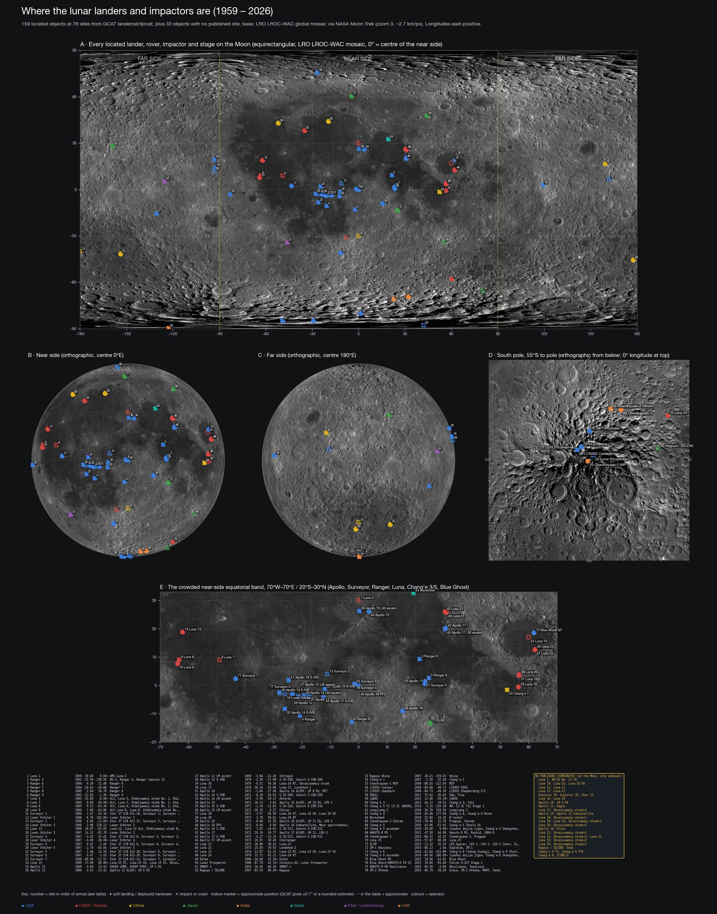

Object-level catalogue of every lunar launch from Pioneer 0 (1958-08-17) to Artemis II (2026-04-01), compiled 2026-08-23 as a companion to the BeyondGEO upper-stage wiki. Each mission lists every trackable object - spacecraft, landers, rovers, ascent stages, capsules, sub-satellites, upper stages, motors, adapters, jettisoned sections - with what it did then and where it is now.
Four sources are cross-checked:
Authority rules follow the rocketdebris wiki: SATCAT DECAY beats stale GP; a fresh Bill Gray TLE beats stale GP; GCAT's phase chain decides the bucket when nobody tracks the object; ? marks GCAT's own uncertainty flag. Coordinates are planetographic (°N, °E; negative = S/W), dates UTC.
Scope: every launch whose target was the Moon (successful or not), Apollo/N1/LK/L1 test flights that never left Earth orbit (marked programme test), and spacecraft re-tasked to the Moon (ARTEMIS, HGS-1). Missions that merely used a lunar swing-by are listed in §4.
| Badge | Bucket | Objects | Meaning |
|---|---|---|---|
| S | ON_MOON | 55 | On the lunar surface |
| I | LUNAR_IMPACT | 134 | Lunar impact (debris on the Moon) |
| L | LUNAR_ORBIT | 18 | In lunar orbit |
| L? | LUNAR_ORBIT_DECAYED_UNKNOWN | 3 | Lunar orbit, fate unknown |
| A | RELAUNCHED_FROM_MOON | 14 | Lifted off from the Moon (see follow-on row) |
| P | L_POINT | 1 | At a libration point |
| H | HELIOCENTRIC | 144 | Heliocentric |
| C | CISLUNAR | 33 | Cislunar / high Earth orbit (incl. lost) |
| E | EARTH_ORBIT | 26 | Earth orbit (LEO/MEO/GEO) |
| R | EARTH_ORBIT_DECAYED | 296 | Reentered Earth's atmosphere |
| B | RETURNED_EARTH | 30 | Returned to Earth intact |
| F | DESTROYED_LAUNCH | 140 | Destroyed in launch failure |
894 objects from 153 GCAT launch tags (145 missions with catalogued hardware). Attached items that GCAT books under a parent (EVA suits, jettison bags that reentered with a module, etc.) are folded into the parent row.
| # | Mission | Launch (UTC) | COSPAR | Agency | Type | Outcome | Objects: where now |
|---|---|---|---|---|---|---|---|
| 1 | Pioneer 0 (Able 1) | 1958-08-17 | 1958-F09 (no orbit) | USAF / ARPA | Orbiter | Launch failure | 3 destroyed in launch failure |
| 2 | Luna E-1 No.1 | 1958-09-23 | 1958-F15 (no orbit) | USSR / OKB-1 | Impactor | Launch failure | 2 destroyed in launch failure |
| 3 | Pioneer 1 (Able 2) | 1958-10-11 | 1958-007 (1958 Eta) | NASA (first NASA launch) | Orbiter | Launch failure (partial) | 3 reentered earth's atmosphere |
| 4 | Luna E-1 No.2 | 1958-10-11 | 1958-F17 (no orbit) | USSR / OKB-1 | Impactor | Launch failure | 2 destroyed in launch failure |
| 5 | Pioneer 2 (Able 3) | 1958-11-08 | 1958-F19 (no orbit) | NASA | Orbiter | Launch failure | 3 destroyed in launch failure |
| 6 | Luna E-1 No.3 | 1958-12-04 | 1958-F20 (no orbit) | USSR / OKB-1 | Impactor | Launch failure | 2 destroyed in launch failure |
| 7 | Pioneer 3 | 1958-12-06 | 1958-008 (1958 Theta) | NASA / ABMA-JPL | Flyby | Launch failure (partial) | 4 reentered earth's atmosphere |
| 8 | Luna 1 (Mechta, E-1 No.4) | 1959-01-02 | 1959-012 (1959 Mu) | USSR / OKB-1 | Impactor (became flyby) | Partial failure | 2 heliocentric |
| 9 | Pioneer 4 | 1959-03-03 | 1959-013 (1959 Nu) | NASA / ABMA-JPL | Flyby | Partial success | 4 heliocentric |
| 10 | Luna E-1A No.5 | 1959-06-18 | 1959-F06 (no orbit) | USSR / OKB-1 | Impactor | Launch failure | 2 destroyed in launch failure |
| 11 | Luna 2 (E-1A No.7) | 1959-09-12 | 1959-014 (1959 Xi) | USSR / OKB-1 | Impactor | Success | 2 lunar impact |
| 12 | Pioneer P-1 (Atlas-Able 4A) | 1959-09-24 | - (pad explosion) | NASA | Orbiter | Destroyed on pad | no catalogued objects |
| 13 | Luna 3 (E-2A No.1) | 1959-10-04 | 1959-008 (1959 Theta) | USSR / OKB-1 | Flyby | Success | 2 reentered earth's atmosphere |
| 14 | Pioneer P-3 (Atlas-Able 4B) | 1959-11-26 | 1959-F09 (no orbit) | NASA | Orbiter | Launch failure | 2 destroyed in launch failure |
| 15 | Luna E-3 No.1 | 1960-04-15 | 1960-U01 (GCAT uncatalogued) | USSR / OKB-1 | Flyby (far-side imaging) | Launch failure | 2 reentered earth's atmosphere |
| 16 | Luna E-3 No.2 | 1960-04-16 | 1960-F06 (no orbit) | USSR / OKB-1 | Flyby | Launch failure | 2 destroyed in launch failure |
| 17 | Pioneer P-30 (Atlas-Able 5A) | 1960-09-25 | 1960-F11 (no orbit) | NASA | Orbiter | Launch failure | 2 destroyed in launch failure |
| 18 | Pioneer P-31 (Atlas-Able 5B) | 1960-12-15 | 1960-F18 (no orbit) | NASA | Orbiter | Launch failure | 2 destroyed in launch failure |
| 19 | Ranger 1 (P-32) | 1961-08-23 | 1961-021 (1961 Phi) | NASA / JPL | Technology test (deep-space trajectory) | Launch failure | 2 reentered earth's atmosphere |
| 20 | Ranger 2 (P-33) | 1961-11-18 | 1961-032 (1961 Alpha Eta) | NASA / JPL | Technology test | Launch failure | 2 reentered earth's atmosphere |
| 21 | Ranger 3 (P-34) | 1962-01-26 | 1962-001 (1962 Alpha) | NASA / JPL | Impactor + rough-lander capsule | Spacecraft failure | 4 heliocentric |
| 22 | Ranger 4 (P-35) | 1962-04-23 | 1962-012 (1962 Mu) | NASA / JPL | Impactor + capsule | Spacecraft failure | 3 lunar impact; 1 heliocentric |
| 23 | Ranger 5 (P-36) | 1962-10-18 | 1962-055 (1962 Beta Eta) | NASA / JPL | Impactor + capsule | Spacecraft failure | 4 heliocentric |
| 24 | Sputnik 25 (Luna E-6 No.2) | 1963-01-04 | 1963-001 | USSR / OKB-1 | Soft lander | Launch failure | 7 reentered earth's atmosphere |
| 25 | Luna E-6 No.3 | 1963-02-03 | 1963-F01 (no orbit) | USSR / OKB-1 | Soft lander | Launch failure | 7 destroyed in launch failure |
| 26 | Luna 4 (E-6 No.4) | 1963-04-02 | 1963-008 | USSR / OKB-1 | Soft lander | Spacecraft failure | 1 heliocentric; 4 cislunar / high earth orbit; 2 reentered earth's atmosphere |
| 27 | Ranger 6 (RA-6) | 1964-01-30 | 1964-007 | NASA / JPL | Impactor (TV) | Spacecraft failure | 1 lunar impact; 1 heliocentric |
| 28 | Luna E-6 No.6 | 1964-03-21 | 1964-F03 (no orbit) | USSR / OKB-1 | Soft lander | Launch failure | 7 destroyed in launch failure |
| 29 | Luna E-6 No.5 | 1964-04-20 | 1964-F05 (no orbit) | USSR / OKB-1 | Soft lander | Launch failure | 7 destroyed in launch failure |
| 30 | Ranger 7 | 1964-07-28 | 1964-041 | NASA / JPL | Impactor (TV) | Success | 1 lunar impact; 1 heliocentric |
| 31 | Ranger 8 | 1965-02-17 | 1965-010 | NASA / JPL | Impactor (TV) | Success | 1 lunar impact; 1 heliocentric |
| 32 | Kosmos 60 (Luna E-6 No.9) | 1965-03-12 | 1965-018 | USSR / OKB-1 → Lavochkin | Soft lander | Launch failure | 7 reentered earth's atmosphere |
| 33 | Ranger 9 | 1965-03-21 | 1965-023 | NASA / JPL | Impactor (TV) | Success | 1 lunar impact; 1 heliocentric |
| 34 | Luna E-6 No.8 | 1965-04-10 | 1965-F05 (no orbit) | USSR / Lavochkin | Soft lander | Launch failure | 7 destroyed in launch failure |
| 35 | Luna 5 (E-6 No.10) | 1965-05-09 | 1965-036 | USSR / Lavochkin | Soft lander | Spacecraft failure | 4 lunar impact; 1 heliocentric; 2 reentered earth's atmosphere |
| 36 | Luna 6 (E-6 No.7) | 1965-06-08 | 1965-044 | USSR / Lavochkin | Soft lander | Spacecraft failure | 5 heliocentric; 2 reentered earth's atmosphere |
| 37 | Zond 3 (3MV-4 No.3) | 1965-07-18 | 1965-056 | USSR / Lavochkin | Flyby (Mars-probe test) | Success | 2 heliocentric; 2 reentered earth's atmosphere |
| 38 | Luna 7 (E-6 No.11) | 1965-10-04 | 1965-077 | USSR / Lavochkin | Soft lander | Spacecraft failure | 4 lunar impact; 1 heliocentric; 2 reentered earth's atmosphere |
| 39 | Luna 8 (E-6 No.12) | 1965-12-03 | 1965-099 | USSR / Lavochkin | Soft lander | Spacecraft failure | 4 lunar impact; 1 heliocentric; 2 reentered earth's atmosphere |
| 40 | Luna 9 (E-6M No.202/13) | 1966-01-31 | 1966-006 | USSR / Lavochkin | Soft lander | Success | 1 on the lunar surface; 3 lunar impact; 1 heliocentric; 2 reentered earth's atmosphere |
| 41 | Kosmos 111 (Luna E-6S No.204) | 1966-03-01 | 1966-017 | USSR / Lavochkin | Orbiter | Launch failure | 7 reentered earth's atmosphere |
| 42 | Luna 10 (E-6S No.206) | 1966-03-31 | 1966-027 | USSR / Lavochkin | Orbiter | Success | 2 lunar impact; 3 heliocentric; 2 reentered earth's atmosphere |
| 43 | Surveyor 1 | 1966-05-30 | 1966-045 | NASA / JPL-Hughes | Soft lander | Success | 1 on the lunar surface; 2 lunar impact; 1 heliocentric |
| 44 | Explorer 33 (AIMP-D) | 1966-07-01 | 1966-058 | NASA / GSFC | Orbiter (intended) | Partial failure (lunar orbit not achieved) | 1 heliocentric; 5 cislunar / high earth orbit; 3 reentered earth's atmosphere |
| 45 | Lunar Orbiter 1 | 1966-08-10 | 1966-073 | NASA / Langley-Boeing | Orbiter | Partial success | 1 lunar impact; 1 cislunar / high earth orbit |
| 46 | Luna 11 (E-6LF No.101) | 1966-08-24 | 1966-078 | USSR / Lavochkin | Orbiter | Partial failure | 1 lunar impact; 3 heliocentric; 2 reentered earth's atmosphere |
| 47 | Surveyor 2 | 1966-09-20 | 1966-084 | NASA / JPL-Hughes | Soft lander | Spacecraft failure | 3 lunar impact; 1 heliocentric |
| 48 | Luna 12 (E-6LF No.102) | 1966-10-22 | 1966-094 | USSR / Lavochkin | Orbiter | Success | 1 lunar impact; 3 heliocentric; 2 reentered earth's atmosphere |
| 49 | Lunar Orbiter 2 | 1966-11-06 | 1966-100 | NASA / Langley-Boeing | Orbiter | Success | 1 lunar impact; 1 reentered earth's atmosphere |
| 50 | Luna 13 (E-6M No.205) | 1966-12-21 | 1966-116 | USSR / Lavochkin | Soft lander | Success | 1 on the lunar surface; 3 lunar impact; 1 heliocentric; 2 reentered earth's atmosphere |
| 51 | Lunar Orbiter 3 | 1967-02-05 | 1967-008 | NASA / Langley-Boeing | Orbiter | Success | 1 lunar impact; 1 heliocentric |
| 52 | Kosmos 146 (7K-L1P No.2P) (programme test) | 1967-03-10 | 1967-021 | USSR / TsKBEM | Circumlunar test (no return) | Success (test) | 3 cislunar / high earth orbit; 3 reentered earth's atmosphere |
| 53 | Kosmos 154 (7K-L1P No.3P) (programme test) | 1967-04-08 | 1967-032 | USSR / TsKBEM | Circumlunar test | Failure | 6 reentered earth's atmosphere |
| 54 | Surveyor 3 | 1967-04-17 | 1967-035 | NASA / JPL-Hughes | Soft lander | Success | 1 on the lunar surface; 2 lunar impact; 1 cislunar / high earth orbit; 1 returned to earth intact |
| 55 | Lunar Orbiter 4 | 1967-05-04 | 1967-041 | NASA / Langley-Boeing | Orbiter (polar, mapping) | Success | 1 lunar impact; 1 cislunar / high earth orbit |
| 56 | Kosmos 159 (Luna E-6LS No.111) (programme test) | 1967-05-16 | 1967-046 | USSR / Lavochkin | High-apogee comms test | Partial (apogee low) | 8 reentered earth's atmosphere |
| 57 | Surveyor 4 | 1967-07-14 | 1967-068 | NASA / JPL-Hughes | Soft lander | Spacecraft failure | 3 lunar impact; 1 cislunar / high earth orbit |
| 58 | Explorer 35 (AIMP-E) | 1967-07-19 | 1967-070 | NASA / GSFC | Orbiter (fields & particles) | Success | 2 lunar orbit, fate unknown; 4 heliocentric; 1 reentered earth's atmosphere |
| 59 | Lunar Orbiter 5 | 1967-08-01 | 1967-075 | NASA / Langley-Boeing | Orbiter | Success | 1 lunar impact; 1 cislunar / high earth orbit |
| 60 | Surveyor 5 | 1967-09-08 | 1967-084 | NASA / JPL-Hughes | Soft lander | Success | 1 on the lunar surface; 2 lunar impact; 1 cislunar / high earth orbit |
| 61 | Soyuz 7K-L1 No.4L | 1967-09-27 | 1967-F11 (no orbit) | USSR / TsKBEM | Circumlunar (uncrewed Zond) | Launch failure | 2 returned to earth intact; 3 destroyed in launch failure |
| 62 | Surveyor 6 | 1967-11-07 | 1967-112 | NASA / JPL-Hughes | Soft lander | Success | 1 on the lunar surface; 2 lunar impact; 1 cislunar / high earth orbit |
| 63 | Apollo 4 (AS-501) (programme test) | 1967-11-09 | 1967-113 | NASA | Earth-orbit test (lunar programme) | Success | 8 reentered earth's atmosphere; 1 returned to earth intact |
| 64 | Soyuz 7K-L1 No.5L | 1967-11-22 | 1967-F12 (no orbit) | USSR / TsKBEM | Circumlunar (uncrewed Zond) | Launch failure | 2 returned to earth intact; 3 destroyed in launch failure |
| 65 | Surveyor 7 | 1968-01-07 | 1968-001 | NASA / JPL-Hughes | Soft lander | Success | 1 on the lunar surface; 2 lunar impact; 1 cislunar / high earth orbit |
| 66 | Luna E-6LS No.112 | 1968-02-07 | 1968-F01 (no orbit) | USSR / Lavochkin | Orbiter | Launch failure | 6 destroyed in launch failure |
| 67 | Zond 4 (7K-L1 No.6L) (programme test) | 1968-03-02 | 1968-013 | USSR / TsKBEM | Circumlunar-distance test (launched away from the Moon) | Spacecraft failure | 5 reentered earth's atmosphere; 1 returned to earth intact |
| 68 | Apollo 6 (AS-502) (programme test) | 1968-04-04 | 1968-025 | NASA | Earth-orbit test (lunar programme) | Partial success | 22 reentered earth's atmosphere; 1 returned to earth intact |
| 69 | Luna 14 (E-6LS No.113) | 1968-04-07 | 1968-027 | USSR / Lavochkin | Orbiter | Success | 1 lunar impact; 3 heliocentric; 2 reentered earth's atmosphere |
| 70 | Soyuz 7K-L1 No.7L | 1968-04-22 | 1968-F03 (no orbit) | USSR / TsKBEM | Circumlunar (uncrewed Zond) | Launch failure | 2 returned to earth intact; 4 destroyed in launch failure |
| 71 | Zond 5 (7K-L1 No.9L) | 1968-09-14 | 1968-076 | USSR / TsKBEM | Circumlunar return (tortoises, flies, seeds) | Success | 1 heliocentric; 4 reentered earth's atmosphere; 1 returned to earth intact |
| 72 | Zond 6 (7K-L1 No.12L) | 1968-11-10 | 1968-101 | USSR / TsKBEM | Circumlunar return | Spacecraft failure | 5 reentered earth's atmosphere; 1 returned to earth intact |
| 73 | Apollo 8 (AS-503) | 1968-12-21 | 1968-118 | NASA | Crewed lunar orbiter | Success | 7 heliocentric; 3 reentered earth's atmosphere; 1 returned to earth intact |
| 74 | Soyuz 7K-L1 No.13L | 1969-01-20 | 1969-F01 (no orbit) | USSR / TsKBEM | Circumlunar (uncrewed Zond) | Launch failure | 2 returned to earth intact; 4 destroyed in launch failure |
| 75 | Luna E-8 No.201 (Lunokhod 1A) | 1969-02-19 | 1969-F04 (no orbit) | USSR / Lavochkin | Rover lander | Launch failure | 7 destroyed in launch failure |
| 76 | N1 3L / 7K-L1S No.3 | 1969-02-21 | 1969-F05 (no orbit) | USSR / TsKBEM | Uncrewed lunar-orbit test (L1S) | Launch failure | 7 destroyed in launch failure |
| 77 | Apollo 9 (AS-504) (programme test) | 1969-03-03 | 1969-018 | NASA | Earth-orbit LM test (lunar programme) | Success | 2 heliocentric; 9 reentered earth's atmosphere |
| 78 | Apollo 10 (AS-505) | 1969-05-18 | 1969-043 | NASA | Crewed lunar orbit, LM descent rehearsal | Success | 1 lunar impact; 7 heliocentric; 3 reentered earth's atmosphere; 1 returned to earth intact |
| 79 | Luna E-8-5 No.402 | 1969-06-14 | 1969-F08 (no orbit) | USSR / Lavochkin | Sample return | Launch failure | 8 destroyed in launch failure |
| 80 | N1 5L / 7K-L1S No.5 | 1969-07-03 | 1969-F10 (no orbit) | USSR / TsKBEM | Uncrewed lunar-orbit test | Launch failure | 7 destroyed in launch failure |
| 81 | Luna 15 (E-8-5 No.401) | 1969-07-13 | 1969-058 | USSR / Lavochkin | Sample return | Spacecraft failure | 2 on the lunar surface; 3 lunar impact; 1 heliocentric; 2 reentered earth's atmosphere |
| 82 | Apollo 11 (AS-506) | 1969-07-16 | 1969-059 | NASA | Crewed landing | Success | 3 on the lunar surface; 1 lunar orbit, fate unknown; 1 lifted off from the moon; 6 heliocentric; 3 reentered earth's atmosphere; 1 returned to earth intact |
| 83 | Zond 7 (7K-L1 No.11) | 1969-08-07 | 1969-067 | USSR / TsKBEM | Circumlunar return | Success | 1 heliocentric; 4 reentered earth's atmosphere; 1 returned to earth intact |
| 84 | Kosmos 300 (Luna E-8-5 No.403) | 1969-09-23 | 1969-080 | USSR / Lavochkin | Sample return | Launch failure | 8 reentered earth's atmosphere |
| 85 | Kosmos 305 (Luna E-8-5 No.404) | 1969-10-22 | 1969-092 | USSR / Lavochkin | Sample return | Launch failure | 8 reentered earth's atmosphere |
| 86 | Apollo 12 (AS-507) | 1969-11-14 | 1969-099 | NASA | Crewed landing | Success | 2 on the lunar surface; 1 lunar impact; 1 lifted off from the moon; 6 heliocentric; 3 reentered earth's atmosphere; 1 returned to earth intact |
| 87 | 7K-L1e No.1K (Kosmos 313 planned) (programme test) | 1969-11-28 | 1969-F14 (no orbit) | USSR / TsKBEM | Blok D / L1e test | Launch failure | 5 destroyed in launch failure |
| 88 | Luna E-8-5 No.405 | 1970-02-06 | 1970-F02 (no orbit) | USSR / Lavochkin | Sample return | Launch failure | 8 destroyed in launch failure |
| 89 | Apollo 13 (AS-508) | 1970-04-11 | 1970-029 | NASA | Crewed landing (aborted) | Spacecraft failure / safe return | 2 lunar impact; 4 heliocentric; 7 reentered earth's atmosphere; 1 returned to earth intact |
| 90 | Luna 16 (E-8-5 No.406) | 1970-09-12 | 1970-072 | USSR / Lavochkin | Sample return | Success | 1 on the lunar surface; 2 lunar impact; 2 lifted off from the moon; 1 heliocentric; 2 reentered earth's atmosphere |
| 91 | Zond 8 (7K-L1 No.14) | 1970-10-20 | 1970-088 | USSR / TsKBEM | Circumlunar return | Success | 1 heliocentric; 4 reentered earth's atmosphere; 1 returned to earth intact |
| 92 | Luna 17 / Lunokhod 1 (E-8 No.203) | 1970-11-10 | 1970-095 | USSR / Lavochkin | Rover lander | Success | 2 on the lunar surface; 2 lunar impact; 1 heliocentric; 2 reentered earth's atmosphere |
| 93 | Kosmos 379 (T2K LK No.1) (programme test) | 1970-11-24 | 1970-099 | USSR / TsKBEM | LK lunar-lander Earth-orbit test | Success | 5 reentered earth's atmosphere |
| 94 | Kosmos 382 (7K-L1e No.2K) (programme test) | 1970-12-02 | 1970-103 | USSR / TsKBEM | Blok D / L1e test in Earth orbit | Success | 7 earth orbit; 4 reentered earth's atmosphere |
| 95 | Apollo 14 (AS-509) | 1971-01-31 | 1971-008 | NASA | Crewed landing | Success | 3 on the lunar surface; 3 lunar impact; 1 lifted off from the moon; 4 heliocentric; 3 reentered earth's atmosphere; 1 returned to earth intact |
| 96 | Kosmos 398 (T2K LK No.2) (programme test) | 1971-02-26 | 1971-016 | USSR / TsKBEM | LK lander Earth-orbit test | Success | 6 reentered earth's atmosphere |
| 97 | N1 6L | 1971-06-26 | 1971-F06 (no orbit) | USSR / TsKBEM | L3 mock-up test | Launch failure | 10 destroyed in launch failure |
| 98 | Apollo 15 (AS-510) | 1971-07-26 | 1971-063 | NASA | Crewed landing (first J-mission) | Success | 3 on the lunar surface; 4 lunar impact; 1 lifted off from the moon; 5 heliocentric; 5 reentered earth's atmosphere; 1 returned to earth intact |
| 99 | Kosmos 434 (T2K LK No.3) (programme test) | 1971-08-12 | 1971-069 | USSR / TsKBEM | LK lander Earth-orbit test | Success | 6 reentered earth's atmosphere |
| 100 | Luna 18 (E-8-5 No.407) | 1971-09-02 | 1971-073 | USSR / Lavochkin | Sample return | Spacecraft failure | 5 lunar impact; 1 heliocentric; 2 reentered earth's atmosphere |
| 101 | Luna 19 (E-8LS No.202) | 1971-09-28 | 1971-082 | USSR / Lavochkin | Orbiter | Success | 3 lunar impact; 1 heliocentric; 2 reentered earth's atmosphere |
| 102 | Luna 20 (E-8-5 No.408) | 1972-02-14 | 1972-007 | USSR / Lavochkin | Sample return | Success | 1 on the lunar surface; 2 lunar impact; 2 lifted off from the moon; 1 heliocentric; 2 reentered earth's atmosphere |
| 103 | Apollo 16 (AS-511) | 1972-04-16 | 1972-031 | NASA | Crewed landing | Success | 3 on the lunar surface; 5 lunar impact; 1 lifted off from the moon; 5 heliocentric; 4 reentered earth's atmosphere; 1 returned to earth intact |
| 104 | N1 7L | 1972-11-23 | 1972-F07 (no orbit) | USSR / TsKBEM | L3 test (LOK No.6A + LK mock-up) | Launch failure | 10 destroyed in launch failure |
| 105 | Apollo 17 (AS-512) | 1972-12-07 | 1972-096 | NASA | Crewed landing | Success | 3 on the lunar surface; 3 lunar impact; 1 lifted off from the moon; 5 heliocentric; 4 reentered earth's atmosphere; 1 returned to earth intact |
| 106 | Luna 21 / Lunokhod 2 (E-8 No.204) | 1973-01-08 | 1973-001 | USSR / Lavochkin | Rover lander | Success | 2 on the lunar surface; 2 lunar impact; 1 heliocentric; 2 reentered earth's atmosphere |
| 107 | Explorer 49 (RAE-B) | 1973-06-10 | 1973-039 | NASA / GSFC | Orbiter (radio astronomy) | Success | 3 in lunar orbit; 5 reentered earth's atmosphere |
| 108 | Luna 22 (E-8LS No.206) | 1974-05-29 | 1974-037 | USSR / Lavochkin | Orbiter | Success | 3 lunar impact; 1 heliocentric; 2 reentered earth's atmosphere |
| 109 | Luna 23 (E-8-5M No.410) | 1974-10-28 | 1974-084 | USSR / Lavochkin | Sample return (drill) | Partial failure | 3 on the lunar surface; 2 lunar impact; 1 heliocentric; 2 reentered earth's atmosphere |
| 110 | Luna E-8-5M No.412 | 1975-10-16 | 1975-F05 (no orbit) | USSR / Lavochkin | Sample return | Launch failure | 8 destroyed in launch failure |
| 111 | Luna 24 (E-8-5M No.413) | 1976-08-09 | 1976-081 | USSR / Lavochkin | Sample return | Success | 1 on the lunar surface; 2 lunar impact; 2 lifted off from the moon; 1 heliocentric; 2 reentered earth's atmosphere |
| 112 | Hiten / Hagoromo (MUSES-A) | 1990-01-24 | 1990-007 | ISAS (Japan) | Technology orbiter + sub-satellite | Success | 1 lunar impact; 2 in lunar orbit; 1 cislunar / high earth orbit; 1 reentered earth's atmosphere |
| 113 | Clementine (DSPSE) | 1994-01-25 | 1994-004 | BMDO / NRL / NASA | Orbiter (mapping) + asteroid flyby | Success (lunar phase) | 1 heliocentric; 3 reentered earth's atmosphere |
| 114 | HGS-1 (AsiaSat 3) | 1997-12-24 | 1997-086 | Hughes / AsiaSat | Commercial GEO comsat salvaged by lunar flybys | Success (salvage) | 1 earth orbit; 3 reentered earth's atmosphere |
| 115 | Lunar Prospector | 1998-01-07 | 1998-001 | NASA Ames (Discovery 3) | Orbiter (polar, geochemistry) | Success | 2 lunar impact; 3 reentered earth's atmosphere |
| 116 | SMART-1 | 2003-09-27 | 2003-043C | ESA | Orbiter (ion-propulsion demo) | Success | 1 lunar impact; 5 earth orbit; 1 reentered earth's atmosphere |
| 117 | ARTEMIS P1 / P2 (ex-THEMIS B/C) | 2007-02-17 | 2007-004B/C | NASA / UC Berkeley | Orbiters (re-tasked from Earth orbit) | Operational | 2 in lunar orbit; 6 earth orbit; 2 reentered earth's atmosphere |
| 118 | Kaguya / SELENE (+ Okina, Ouna) | 2007-09-14 | 2007-039 | JAXA | Orbiter + two relay/VLBI sub-satellites | Success | 3 lunar impact; 1 reentered earth's atmosphere |
| 119 | Chang'e 1 | 2007-10-24 | 2007-051 | CNSA | Orbiter | Success | 1 lunar impact; 1 reentered earth's atmosphere |
| 120 | Chandrayaan-1 (+ Moon Impact Probe) | 2008-10-22 | 2008-052 | ISRO | Orbiter + impactor | Success | 1 lunar impact; 1 in lunar orbit; 1 earth orbit |
| 121 | LRO + LCROSS | 2009-06-18 | 2009-031 | NASA | Orbiter + Centaur impactor + shepherding spacecraft | Operational / Success | 2 lunar impact; 1 in lunar orbit |
| 122 | Chang'e 2 | 2010-10-01 | 2010-050 | CNSA | Orbiter → Sun-Earth L2 → asteroid flyby | Success | 2 heliocentric |
| 123 | GRAIL (Ebb & Flow) | 2011-09-10 | 2011-046 | NASA / JPL-MIT | Twin gravity-mapping orbiters | Success | 2 lunar impact; 1 heliocentric |
| 124 | LADEE | 2013-09-07 | 2013-047 | NASA Ames | Orbiter (exosphere & dust) | Success | 1 lunar impact; 3 cislunar / high earth orbit; 2 reentered earth's atmosphere |
| 125 | Chang'e 3 + Yutu | 2013-12-01 | 2013-070 | CNSA | Lander + rover | Success | 2 on the lunar surface; 1 cislunar / high earth orbit |
| 126 | Chang'e 5-T1 (+ 4M) | 2014-10-23 | 2014-065 | CNSA (4M: LuxSpace) | Circumlunar return test + service module | Success | 3 lunar impact; 1 returned to earth intact |
| 127 | Queqiao-1 + Longjiang-1/2 | 2018-05-20 | 2018-045 | CNSA / Harbin Inst. of Tech. | EM-L2 relay + two microsatellites | Success / partial | 1 lunar impact; 1 at a libration point; 1 cislunar / high earth orbit; 1 reentered earth's atmosphere |
| 128 | Chang'e 4 + Yutu-2 | 2018-12-07 | 2018-103 | CNSA | Far-side lander + rover | Operational | 2 on the lunar surface; 1 heliocentric |
| 129 | Beresheet | 2019-02-22 | 2019-009B | SpaceIL / IAI | Private lander | Spacecraft failure | 1 lunar impact; 3 earth orbit; 1 reentered earth's atmosphere |
| 130 | Chandrayaan-2 (orbiter, Vikram, Pragyan) | 2019-07-22 | 2019-042 | ISRO | Orbiter + lander + rover | Orbiter success / lander failure | 2 lunar impact; 1 in lunar orbit; 1 reentered earth's atmosphere |
| 131 | Chang'e 5 | 2020-11-23 | 2020-087 | CNSA | Sample return (orbiter, lander, ascender, returner) | Success | 1 on the lunar surface; 2 lunar impact; 1 in lunar orbit; 1 lifted off from the moon; 1 heliocentric; 1 reentered earth's atmosphere; 1 returned to earth intact |
| 132 | CAPSTONE + Lunar Photon | 2022-06-28 | 2022-070 | NASA / Advanced Space / Rocket Lab | NRHO pathfinder cubesat | Operational | 1 in lunar orbit; 1 heliocentric; 1 reentered earth's atmosphere |
| 133 | Danuri (KPLO) | 2022-08-04 | 2022-094 | KARI | Orbiter | Operational | 1 in lunar orbit; 1 heliocentric |
| 134 | Artemis I (Orion, ICPS, 10 cubesats) | 2022-11-16 | 2022-156 | NASA / ESA | Uncrewed crewed-vehicle test in DRO | Success | 11 heliocentric; 2 cislunar / high earth orbit; 4 reentered earth's atmosphere; 1 returned to earth intact |
| 135 | HAKUTO-R M1 (+ Rashid, SORA-Q) + Lunar Flashlight | 2022-12-11 | 2022-168 | ispace / MBRSC / JAXA / NASA-JPL | Private lander + NASA cubesat | Lander crashed / cubesat failed | 3 lunar impact; 2 heliocentric |
| 136 | Chandrayaan-3 | 2023-07-14 | 2023-098 | ISRO | Lander + rover + propulsion module | Success | 2 on the lunar surface; 1 cislunar / high earth orbit; 1 reentered earth's atmosphere |
| 137 | Luna 25 (Luna-Glob) | 2023-08-10 | 2023-118 | Roscosmos / Lavochkin | Polar lander | Spacecraft failure | 1 lunar impact; 2 reentered earth's atmosphere |
| 138 | SLIM (+ LEV-1, LEV-2) | 2023-09-06 | 2023-137D | JAXA | Precision lander + two rovers | Success | 3 on the lunar surface; 3 lunar impact; 1 earth orbit; 4 reentered earth's atmosphere |
| 139 | Peregrine Mission One + Vulcan Cert-1 | 2024-01-08 | 2024-006 | Astrobotic / ULA (NASA CLPS) | Private lander | Spacecraft failure | 2 heliocentric; 8 reentered earth's atmosphere |
| 140 | IM-1 Odysseus (Nova-C) + EagleCam | 2024-02-15 | 2024-030 | Intuitive Machines (NASA CLPS) | Private lander | Success (tipped) | 2 on the lunar surface; 1 heliocentric |
| 141 | DRO-A / DRO-B (+ YZ-1S) | 2024-03-13 | 2024-048 | CAS (China) | Distant-retrograde-orbit pair | Success after rescue | 2 in lunar orbit; 1 earth orbit; 2 reentered earth's atmosphere |
| 142 | Queqiao-2 + Tiandu-1/2 | 2024-03-20 | 2024-051 | CNSA / DSEL | Relay orbiter + two navigation test sats | Success | 2 in lunar orbit; 1 cislunar / high earth orbit; 1 reentered earth's atmosphere |
| 143 | Chang'e 6 (+ ICUBE-Q, Jinchan rover) | 2024-05-03 | 2024-083 | CNSA / IST-SUPARCO | Far-side sample return | Success | 2 on the lunar surface; 3 lunar impact; 1 in lunar orbit; 1 lifted off from the moon; 1 cislunar / high earth orbit; 1 reentered earth's atmosphere; 1 returned to earth intact |
| 144 | Blue Ghost M1 + HAKUTO-R M2 Resilience (+ Tenacious) | 2025-01-15 | 2025-010 | Firefly (NASA CLPS) / ispace | Two private landers | Blue Ghost success / Resilience crashed | 1 on the lunar surface; 3 lunar impact; 1 reentered earth's atmosphere |
| 145 | IM-2 Athena + Lunar Trailblazer + Odin + Chimera | 2025-02-26 | 2025-038 | Intuitive Machines / NASA-JPL / AstroForge / Epic Aerospace | Lander + orbiter + asteroid flyby + GEO tug | Partial / failures | 4 on the lunar surface; 4 heliocentric; 2 cislunar / high earth orbit |
| 146 | Artemis II (Orion Integrity) | 2026-04-01 | 2026-069 | NASA / ESA / CSA | Crewed lunar flyby | Success | 1 earth orbit; 10 reentered earth's atmosphere; 1 returned to earth intact |
Columns: Object (GCAT name; PLName in italics when different) · ID (COSPAR piece / NORAD; NNA = not catalogued by Space-Track) · Kind (from GCAT SatType) · Now (bucket badge + GCAT-derived status, hand-corrected where noted) · Space-Track · Horizons / Bill Gray.
1958-F09 (no orbit) · USAF / ARPA · Thor DM-18 Able I · Orbiter · Launch failure. First attempt to launch anything beyond Earth.
Then: Thor first stage exploded 77 s after liftoff at ~16 km altitude; debris fell into the Atlantic. Now: nothing reached space. The Able stage and probe are GCAT failed-to-orbit entries only.
| Object | ID | Kind | Now | Space-Track | Horizons / Bill Gray |
|---|---|---|---|---|---|
| Pioneer Lunar Probe (Able I) | 1958-F09 / NNA | Spacecraft | F launch failure 1958-08-17 - | — | |
| TX-8 Falcon | 1958-F09 / NNA | Component | F launch failure 1958-08-17 - | — | |
| Thor Able I Stage 3 (Altair X-248-A3) | 1958-F09 / NNA | Rocket stage (third) | F launch failure 1958-08-17 - | — |
1958-F15 (no orbit) · USSR / OKB-1 · Luna 8K72 · Impactor · Launch failure. First Soviet lunar attempt; 8K72 disintegrated at 93 s from longitudinal (pogo) oscillations.
Then: Strap-on boosters tore free at T+93 s. Now: Destroyed in flight over Kazakhstan; never catalogued.
| Object | ID | Kind | Now | Space-Track | Horizons / Bill Gray |
|---|---|---|---|---|---|
| AMS (E-1 No. 1) | 1958-F15 / NNA | Spacecraft | F launch failure 1958-09-23 - | — | |
| Vostok 8K72 No. 3 Stage 3 (8K72E No. B1-3) | 1958-F15 / NNA | Rocket stage (third) | F launch failure 1958-09-23 - | — |
1958-007 (1958 Eta) · NASA (first NASA launch) · Thor DM-18 Able I · Orbiter · Launch failure (partial). Reached 113,800 km - a record - but fell short of the Moon.
Then: Second-stage guidance error left the probe 3.5° high and slow; it coasted to 113,800 km, measured the radiation belts, and fell back, burning up over the South Pacific 43 h after launch (1958-10-13 04:46 UTC). Now: Reentered; the attached TX-8 Falcon kick motor and the Altair third stage reentered the same day.
| Object | ID | Kind | Now | Space-Track | Horizons / Bill Gray |
|---|---|---|---|---|---|
| Pioneer I (Able II) | 1958 ETA / 00110 | Spacecraft | R reentered 1958-10-13 04:46 - | 1958-007A / 00110; SATCAT decay 1958-10-12 | |
| TX-8 Falcon | 1958 ETA / 00110 | Adapter / structure | R reentered 1958-10-13 04:46 - | 1958-007A / 00110; SATCAT decay 1958-10-12 | |
| Thor Able I Stage 3 (Altair X-248-A3) | 1958 ETA / NNA | Rocket stage (third) | R reentered 1958-10-13 - | — |
1958-F17 (no orbit) · USSR / OKB-1 · Luna 8K72 · Impactor · Launch failure. Launched the same day as Pioneer 1; exploded at 104 s (pogo).
Then: Booster broke up at T+104 s. Now: Destroyed in flight.
| Object | ID | Kind | Now | Space-Track | Horizons / Bill Gray |
|---|---|---|---|---|---|
| AMS (E-1 No. 2) | 1958-F17 / NNA | Spacecraft | F launch failure 1958-10-11 - | — | |
| Vostok 8K72 No. 4 Stage 3 (8K72E No. B1-4) | 1958-F17 / NNA | Rocket stage (third) | F launch failure 1958-10-11 - | — |
1958-F19 (no orbit) · NASA · Thor DM-18 Able I · Orbiter · Launch failure. Third stage failed to ignite; peaked at 1,550 km and reentered over Africa within the hour.
Then: Altair stage did not fire. Now: Suborbital; burned up over central Africa 1958-11-08.
| Object | ID | Kind | Now | Space-Track | Horizons / Bill Gray |
|---|---|---|---|---|---|
| Pioneer II (Able III) | 1958-F19 / NNA | Spacecraft | F launch failure 1958-11-08 - | — | |
| TX-8 Falcon | 1958-F19 / NNA | Component | F launch failure 1958-11-08 - | — | |
| Thor Able I Stage 3 (Altair X-248-A3) | 1958-F19 / NNA | Rocket stage (third) | F launch failure 1958-11-08 - | — |
1958-F20 (no orbit) · USSR / OKB-1 · Luna 8K72 · Impactor · Launch failure. Core-stage engine lost thrust at 245 s.
Then: Turbopump failure in the core. Now: Destroyed in flight.
| Object | ID | Kind | Now | Space-Track | Horizons / Bill Gray |
|---|---|---|---|---|---|
| AMS (E-1 No. 3) | 1958-F20 / NNA | Spacecraft | F launch failure 1958-12-04 - | — | |
| Vostok 8K72 No. 5 Stage 3 (8K72E No. B1-5) | 1958-F20 / NNA | Rocket stage (third) | F launch failure 1958-12-04 - | — |
1958-008 (1958 Theta) · NASA / ABMA-JPL · Juno II · Flyby · Launch failure (partial). First stage cut off 3.7 s early; reached 102,360 km, found the second Van Allen belt.
Then: Fell ~3% short of escape speed, reentered over Africa 1958-12-07 19:51 UTC after 38 h. Now: Reentered, together with its RTV fourth-stage cluster motor and two despin weights.
| Object | ID | Kind | Now | Space-Track | Horizons / Bill Gray |
|---|---|---|---|---|---|
| Cluster 11 Assembly 4 (RTV Motor) | 1958 THE / NNA | Rocket stage (fourth) | R reentered 1958-12-07 - | — | |
| Despin weight | 1958 THE / 00111 | Adapter / structure | R reentered 1958-12-07 19:52 - | 1958-008A / 00111; SATCAT decay 1958-12-07 | |
| Despin weight | 1958 THE / 00111 | Adapter / structure | R reentered 1958-12-07 19:52 - | 1958-008A / 00111; SATCAT decay 1958-12-07 | |
| Pioneer III (Pioneer 3) | 1958 THE / 00111 | Spacecraft | R reentered 1958-12-07 19:52 Africa | 1958-008A / 00111; SATCAT decay 1958-12-07 |
1959-012 (1959 Mu) · USSR / OKB-1 · Luna 8K72 · Impactor (became flyby) · Partial failure. First object to reach escape velocity; missed the Moon by 5,995 km and became the first artificial planet.
Then: A ground-timing error left the burn 1-2 s long; Luna 1 passed 5,995 km from the Moon on 1959-01-04 02:57 UTC (first lunar flyby), released a sodium cloud on the way, and went into solar orbit (a ≈ 1.146 AU, e ≈ 0.148, P ≈ 450 d). Signal lost 1959-01-05 at 597,000 km. Now: Heliocentric - GCAT register q 0.980 / Q 1.315 AU, i 0.04°; never re-observed. The 8K72E Blok-E third stage travelled the same path and is also heliocentric. Neither is in JPL Horizons.
| Object | ID | Kind | Now | Space-Track | Horizons / Bill Gray |
|---|---|---|---|---|---|
| 8K72E No. B1-6 (8K72E) | 1959 MU / NNA | Rocket stage (third) | H heliocentric q=0.980 Q=1.315 AU i=0.04 (epoch 1959-01-04) | — | |
| AMS Luna-1 (E-1 No. 4) | 1959 MU 1 / 00112 | Spacecraft | H heliocentric q=0.980 Q=1.315 AU i=0.04 (epoch 1959-01-04) | 1959-012A / 00112; catalogued, no decay |
1959-013 (1959 Nu) · NASA / ABMA-JPL · Juno II · Flyby · Partial success. First US escape; passed 58,983 km from the Moon 1959-03-04, too far to trigger its photo sensor.
Then: Second stage burned 1 s long; flyby at 58,983 km on 1959-03-04 22:25 UTC. Tracked to 655,000 km (82 h) - the first US heliocentric object. Now: Heliocentric (GCAT q 0.987 / Q 1.142 AU, i 1.3°, P ≈ 398 d); its cluster fourth-stage motor and two despin weights share similar orbits. Not in Horizons.
| Object | ID | Kind | Now | Space-Track | Horizons / Bill Gray |
|---|---|---|---|---|---|
| Cluster 12 Assembly 4 (RTV Motor) | 1959 NU / NNA | Rocket stage (fourth) | H heliocentric q=0.980 Q=1.140 AU i=1.30 (epoch 1959-03-17) | — | |
| Despin weight | 1959 NU / NNA | Component | H heliocentric q=0.980 Q=1.140 AU i=1.30 (epoch 1959-03-17) | — | |
| Despin weight | 1959 NU / NNA | Component | H heliocentric q=0.980 Q=1.140 AU i=1.30 (epoch 1959-03-17) | — | |
| Pioneer 4 | 1959 NU 1 / 00113 | Spacecraft | H heliocentric q=0.987 Q=1.142 AU i=1.30 (epoch 1959-03-17) | 1959-013A / 00113; catalogued, no decay |
1959-F06 (no orbit) · USSR / OKB-1 · Luna 8K72 · Impactor · Launch failure. Gyroscope failure at 153 s.
Then: Inertial guidance failed; vehicle destroyed. Now: Destroyed in flight.
| Object | ID | Kind | Now | Space-Track | Horizons / Bill Gray |
|---|---|---|---|---|---|
| AMS (E-1 No. 5) | 1959-F06 / NNA | Spacecraft | F launch failure 1959-06-18 - | — | |
| Vostok 8K72 No. 7 Stage 3 (8K72E No. I1-7) | 1959-F06 / NNA | Rocket stage (third) | F launch failure 1959-06-18 - | — |
1959-014 (1959 Xi) · USSR / OKB-1 · Luna 8K72 · Impactor · Success. First human-made object to reach another world.
Then: Impacted 1959-09-13 21:02:24 UTC at ~29.1°N 0.0°E between Aristides, Archimedes and Autolycus (Sinus Lunicus) at 3.3 km/s; pennants scattered. Now: On the Moon as impact debris; the 8K72E Blok-E stage (I1-7B) followed and is believed to have hit the Moon ~30 min later (unobserved). Both GCAT lander-catalogue entries.
| Object | ID | Kind | Now | Space-Track | Horizons / Bill Gray |
|---|---|---|---|---|---|
| 8K72E No. I1-7B (8K72E) | 1959 XI / NNA | Rocket stage (third) | I impacted Moon 1959-09-13 21:00? at -N -E - | — | |
| AMS Luna-2 (E-1 No. 7) | 1959 XI 1 / 00114 | Spacecraft | I impacted Moon 1959-09-13 21:02 at 30.0N 0.0E Sinus Lunicus | 1959-014A / 00114; SATCAT decay 1959-09-13 (= lunar impact date) |
- (pad explosion) · NASA · Atlas-Able · Orbiter · Destroyed on pad. Atlas 9C exploded during a static-firing test on LC-12 before the launch; the probe was later re-flown as P-3.
Then: Not a launch: the booster was lost during a pre-flight static test. Now: Nothing left the ground; not in GCAT's launch lists (recorded here for completeness of the Space-Race tally).
No catalogued objects (see text).
1959-008 (1959 Theta) · USSR / OKB-1 · Luna 8K72 · Flyby · Success. First photographs of the lunar far side (29 frames, 1959-10-07).
Then: Flew 6,200 km past the south pole on 1959-10-06 14:16 UTC into a 47,500 × 480,000 km gravity-assisted Earth orbit (first gravity assist), returned the images on 10-18; contact lost 10-22. Now: Reentered - Space-Track SATCAT decay 1960-04-20, GCAT 1960-04-29 (the exact day is uncertain; some histories give 1960-03/04). The Blok-E stage decayed in 1960-04 as well.
| Object | ID | Kind | Now | Space-Track | Horizons / Bill Gray |
|---|---|---|---|---|---|
| 8K72E No. I1-8 (8K72E) | 1959 THE / NNA | Rocket stage (third) | R reentered 1960-04? - | — | |
| AMS Luna-3 (E-2A) | 1959 THE 1 / 00021 | Spacecraft | R reentered 1960-04-29 - | 1959-008A / 00021; SATCAT decay 1960-04-20 |
1959-F09 (no orbit) · NASA · Atlas-Able · Orbiter · Launch failure. Payload shroud tore off at 45 s.
Then: Fairing failure destroyed the third stage and probe. Now: Destroyed in flight.
| Object | ID | Kind | Now | Space-Track | Horizons / Bill Gray |
|---|---|---|---|---|---|
| Atlas Able IVB Stage 3 (Altair) | 1959-F09 / NNA | Rocket stage (third) | F launch failure 1959-11-26 - | — | |
| NASA P-3 (Able IVB) | 1959-F09 / NNA | Spacecraft | F launch failure 1959-11-26 - | — |
1960-U01 (GCAT uncatalogued) · USSR / OKB-1 · Luna 8K72 · Flyby (far-side imaging) · Launch failure. Third stage cut off 3 s early; probe reached ~200,000 km and fell back.
Then: Escape not achieved; the probe and Blok-E coasted to ~200,000 km and reentered ~1960-04-19. Now: Reentered (GCAT treats this as an uncatalogued launch, 1960-U01).
| Object | ID | Kind | Now | Space-Track | Horizons / Bill Gray |
|---|---|---|---|---|---|
| 8K72E No. L1-9 (8K72E) | 1960-U01 / NNA | Rocket stage (third) | R reentered 1960-04-19 15:00? - | — | |
| [Luna-4] (E-3 No. 1) | 1960-U01 / NNA | Spacecraft element | R reentered 1960-04-19 15:00? - | — |
1960-F06 (no orbit) · USSR / OKB-1 · Luna 8K72 · Flyby · Launch failure. Strap-on failed at ignition; booster broke up seconds after liftoff and damaged the pad.
Then: Vehicle disintegrated near the pad. Now: Destroyed at launch.
| Object | ID | Kind | Now | Space-Track | Horizons / Bill Gray |
|---|---|---|---|---|---|
| AMS (E-3 No. 2) | 1960-F06 / NNA | Spacecraft | F launch failure 1960-04-16 - | — | |
| Vostok 8K72 No. 9A Stage 3 (8K72E No. L1-9A) | 1960-F06 / NNA | Rocket stage (third) | F launch failure 1960-04-16 - | — |
1960-F11 (no orbit) · NASA · Atlas-Able · Orbiter · Launch failure. Second-stage oxidizer failure; fell into the Indian Ocean.
Then: Reached ~370 km before the Able stage failed. Now: Suborbital; destroyed.
| Object | ID | Kind | Now | Space-Track | Horizons / Bill Gray |
|---|---|---|---|---|---|
| Atlas Able VA Stage 3 (Altair) | 1960-F11 / NNA | Rocket stage (third) | F launch failure 1960-09-25 - | — | |
| NASA P-30 (Able VA) | 1960-F11 / NNA | Spacecraft | F launch failure 1960-09-25 - | — |
1960-F18 (no orbit) · NASA · Atlas-Able · Orbiter · Launch failure. Exploded 68 s after liftoff; last Atlas-Able.
Then: Second stage failed during staging. Now: Destroyed in flight.
| Object | ID | Kind | Now | Space-Track | Horizons / Bill Gray |
|---|---|---|---|---|---|
| Atlas Able VB Stage 3 (X-248 Altair) | 1960-F18 / NNA | Rocket stage (third) | F launch failure 1960-12-15 - | — | |
| NASA P-31 (Able VB) | 1960-F18 / NNA | Spacecraft | F launch failure 1960-12-15 - | — |
1961-021 (1961 Phi) · NASA / JPL · Atlas-Agena B · Technology test (deep-space trajectory) · Launch failure. Agena B failed to restart; stranded in 179 × 446 km LEO.
Then: Block I test vehicle stuck in low orbit, tumbling. Now: Reentered 1961-08-30 (Space-Track); the Agena B 6001 reentered 1961-09-03.
| Object | ID | Kind | Now | Space-Track | Horizons / Bill Gray |
|---|---|---|---|---|---|
| Agena B 6001 | 1961 PHI 2 / 00174 | Rocket stage (second) | R reentered 1961-09-03 - | 1961-021B / 00174; SATCAT decay 1961-09-03 | |
| Ranger 1 (NASA P-32) | 1961 PHI 1 / 00173 | Spacecraft | R reentered 1961-08-30 08:30? - | 1961-021A / 00173; SATCAT decay 1961-08-30 |
1961-032 (1961 Alpha Eta) · NASA / JPL · Atlas-Agena B · Technology test · Launch failure. Agena B roll-gyro failure; decayed in two days.
Then: Stuck in 150 × 242 km orbit. Now: Reentered 1961-11-20; Agena 6002 reentered 1961-11-19.
| Object | ID | Kind | Now | Space-Track | Horizons / Bill Gray |
|---|---|---|---|---|---|
| Agena B 6002 | 1961 A THE / NNA | Rocket stage (second) | R reentered 1961-11-19? - | — | |
| Ranger 2 (NASA P-33) | 1961 A THE / 00206 | Spacecraft | R reentered 1961-11-20 - | 1961-032A / 00206; SATCAT decay 1961-11-20 |
1962-001 (1962 Alpha) · NASA / JPL · Atlas-Agena B · Impactor + rough-lander capsule · Spacecraft failure. Atlas guidance overspeed; missed the Moon by 36,793 km on 1962-01-28 and entered solar orbit.
Then: Excess velocity plus a reversed midcourse command made the miss unrecoverable; the Block II bus carried a balsa-encased seismometer capsule and its BE-3 retro motor, never used. Now: Heliocentric: GCAT register q 0.985 / Q 1.164 AU, i 0.4° for Ranger 3 (with capsule and BE-3 still attached) and its Agena B 6003. None are tracked today.
| Object | ID | Kind | Now | Space-Track | Horizons / Bill Gray |
|---|---|---|---|---|---|
| Agena B 6003 | 1962 ALP 2 / 00222 | Rocket stage (second) | H heliocentric q=0.985 Q=1.164 AU i=0.40 (epoch 1962-02) | 1962-001B / 00222; catalogued, no decay | |
| BE-3 (Alcyone BE-3 S/N 204) | 1962 ALP / 00221 | Adapter / structure | H heliocentric q=0.985 Q=1.164 AU i=0.40 (epoch 1962-02) attached | 1962-001A / 00221; catalogued, no decay | |
| Ranger 3 (NASA P-34) | 1962 ALP 1 / 00221 | Spacecraft | H heliocentric q=0.985 Q=1.164 AU i=0.40 (epoch 1962-02) | 1962-001A / 00221; catalogued, no decay | |
| Ranger Capsule 12 | 1962 ALP / 00221 | Spacecraft element | H heliocentric q=0.985 Q=1.164 AU i=0.40 (epoch 1962-02) attached | 1962-001A / 00221; catalogued, no decay |
1962-012 (1962 Mu) · NASA / JPL · Atlas-Agena B · Impactor + capsule · Spacecraft failure. Central computer failed after launch; first US hardware to reach the Moon, impacting the far side.
Then: Impacted 1962-04-26 12:49:53 UTC at 15.5°S 130.5°W on the far side (just beyond the limb), capsule and BE-3 motor attached and inert. Now: On the Moon (impact site never imaged/located). The Agena B 6004 flew past the Moon into heliocentric orbit (GCAT q 0.98 / Q 1.02 AU).
| Object | ID | Kind | Now | Space-Track | Horizons / Bill Gray |
|---|---|---|---|---|---|
| BE-3 (Alcyone BE-3 S/N 203) | 1962 MU / 00280 | Adapter / structure | I impacted Moon 1962-04-26 12:49 at -15.50N -130.50E - | 1962-012A / 00280; SATCAT decay 1962-04-26 (= lunar impact date) | |
| Ranger 4 | 1962 MU 1 / 00280 | Spacecraft | I impacted Moon 1962-04-26 12:50 at -15.50N -130.50E - | 1962-012A / 00280; SATCAT decay 1962-04-26 (= lunar impact date) | |
| Ranger Capsule 13 | 1962 MU / 00280 | Spacecraft element | I impacted Moon 1962-04-26 12:49 at -15.50N -130.50E - | 1962-012A / 00280; SATCAT decay 1962-04-26 (= lunar impact date) | |
| Agena B 6004 | 1962 MU 2 / 00282 | Rocket stage (second) | H heliocentric q=0.980 Q=1.020 AU i=0.00 (epoch 1962-04-26) | 1962-012B / 00282; catalogued, no decay |
1962-055 (1962 Beta Eta) · NASA / JPL · Atlas-Agena B · Impactor + capsule · Spacecraft failure. Solar-panel power switch failed; batteries died; missed the Moon by 725 km on 1962-10-21.
Then: Passed 725 km from the Moon at 1962-10-21 01:04 UTC (closest pass of any early miss) and escaped. Now: Heliocentric (GCAT q 0.944 / Q 1.048 AU, i 0.39°, with capsule and BE-3 attached); the Agena B 6005 left separately for solar orbit after its own lunar flyby. Not tracked.
| Object | ID | Kind | Now | Space-Track | Horizons / Bill Gray |
|---|---|---|---|---|---|
| Agena B 6005 | 1962 B ETA 2 / 00440 | Rocket stage (second) | H heliocentric q=0.900 Q=1.100 AU i=0.40 (epoch 1963-01) | 1962-055B / 00440; catalogued, no decay | |
| BE-3 (Alcyone BE-3) | 1962 B ETA / 00439 | Adapter / structure | H heliocentric q=0.944 Q=1.048 AU i=0.39 (epoch 1963-01-04) attached | 1962-055A / 00439; catalogued, no decay | |
| Ranger 5 | 1962 B ETA 1 / 00439 | Spacecraft | H heliocentric q=0.944 Q=1.048 AU i=0.39 (epoch 1963-01-04) | 1962-055A / 00439; catalogued, no decay | |
| Ranger Capsule 18 | 1962 B ETA / 00439 | Spacecraft element | H heliocentric q=0.944 Q=1.048 AU i=0.39 (epoch 1963-01-04) attached | 1962-055A / 00439; catalogued, no decay |
1963-001 · USSR / OKB-1 · Molniya 8K78 · Soft lander · Launch failure. First E-6 soft-lander attempt; Blok-L escape stage failed to ignite in parking orbit.
Then: The stack stayed in 167 × 198 km LEO. Now: All seven catalogued pieces reentered by 1963-01-11 (payload + Blok-L + ALS capsule together 01-11; Blok-I 01-05).
| Object | ID | Kind | Now | Space-Track | Horizons / Bill Gray |
|---|---|---|---|---|---|
| ALS (E-6 No. 2 SA) | 1963-001B / 00522 | Spacecraft element | R reentered 1963-01-11 - | 1963-001B / 00522; SATCAT decay 1963-01-11 | |
| AMS (E-6 No. 2) | 1963-001B / 00522 | Spacecraft | R reentered 1963-01-11 - | 1963-001B / 00522; SATCAT decay 1963-01-11 | |
| BOZ? | 1963-001C / 00524 | Component | R reentered 1963-01-11 - | 1963-001C / 00524; SATCAT decay 1963-01-11 | |
| Blok-L No. T103-09 (Blok-L) | 1963-001B / 00522 | Rocket stage (fourth) | R reentered 1963-01-11 - | 1963-001B / 00522; SATCAT decay 1963-01-11 | |
| Molniya 8K78 T103-09 Blok-I (8K78I) | 1963-001A / 00521 | Rocket stage (third) | R reentered 1963-01-05 - | 1963-001A / 00521; SATCAT decay 1963-01-05 | |
| Otdelyaemiy otsek No. 1 | 1963-001 / 00522 | Cover / fairing | R reentered 1963-01-11 - | 1963-001B / 00522; SATCAT decay 1963-01-11 | |
| Otdelyaemiy otsek No. 2 | 1963-001 / 00522 | Cover / fairing | R reentered 1963-01-11 - | 1963-001B / 00522; SATCAT decay 1963-01-11 |
1963-F01 (no orbit) · USSR / OKB-1 · Molniya 8K78 · Soft lander · Launch failure. Third-stage (Blok-I) guidance failure; fell near Hawaii.
Then: Booster failed before orbit. Now: Destroyed; pieces in the Pacific.
| Object | ID | Kind | Now | Space-Track | Horizons / Bill Gray |
|---|---|---|---|---|---|
| ALS (E-6 No. 3 SA) | 1963-F01 / NNA | Spacecraft | F launch failure 1963-02-03 - | — | |
| AMS (E-6 No. 3) | 1963-F01 / NNA | Spacecraft | F launch failure 1963-02-03 - | — | |
| BOZ | 1963-F01 / NNA | Component | F launch failure 1963-02-03 - | — | |
| Blok-L No. T103-10 (Blok-L) | 1963-F01 / NNA | Rocket stage (fourth) | F launch failure 1963-02-03 - | — | |
| Molniya No. G103-10 Blok-I (8K78I) | 1963-F01 / NNA | Rocket stage (third) | F launch failure 1963-02-03 - | — | |
| Otdelyaemiy otsek No. 1 | 1963-F01 / NNA | Component | F launch failure 1963-02-03 - | — | |
| Otdelyaemiy otsek No. 2 | 1963-F01 / NNA | Component | F launch failure 1963-02-03 - | — |
1963-008 · USSR / OKB-1 · Molniya 8K78 · Soft lander · Spacecraft failure. First E-6 to leave Earth orbit; astro-navigation failed, so no midcourse burn - flew 8,336 km past the Moon.
Then: Flyby 1963-04-06 and the 1,422 kg craft went into a 90,000 × 700,000 km Earth orbit (per GCAT), which lunar perturbations later changed. Now: Unknown/lost. GCAT keeps Luna 4 (with its ALS landing capsule and two jettisonable sections) as a lost cislunar object; other histories say it eventually escaped to solar orbit. The Blok-L stage (T103-11) is listed as heliocentric.
| Object | ID | Kind | Now | Space-Track | Horizons / Bill Gray |
|---|---|---|---|---|---|
| Blok-L No. T103-11 (Blok-L) | 1963-008 / NNA | Rocket stage (fourth) | H heliocentric q=0.900 Q=1.100 AU i=0.00 (epoch 1963-04-07?) | — | |
| ALS (E-6 No. 4 SA) | 1963-008A / 00563 | Spacecraft element | C geocentric 90000x700000 km i=65.00 CLO (epoch 1963-04-02) | 1963-008A / 00563; SATCAT decay 1963-04-03 | |
| Luna-4 (E-6 No. 4) | 1963-008B / 00566 | Spacecraft | C geocentric 90000x700000 km i=65.00 CLO (epoch 1963-04-02) lost | 1963-008B / 00566; catalogued, no decay | |
| Otdelyaemiy otsek No. 1 | 1963-008 / 00566 | Adapter / structure | C geocentric 90000x700000 km i=65.00 CLO (epoch 1963-04-02) | 1963-008B / 00566; catalogued, no decay | |
| Otdelyaemiy otsek No. 2 | 1963-008 / 00566 | Adapter / structure | C geocentric 90000x700000 km i=65.00 CLO (epoch 1963-04-02) | 1963-008B / 00566; catalogued, no decay | |
| BOZ | 1963-008 / NNA | Component | R reentered 1963-04-02? - | — | |
| Molniya 8K78 (N13) Blok-I (8K78I) | 1963-008A / 00563 | Rocket stage (third) | R reentered 1963-04-03 - | 1963-008A / 00563; SATCAT decay 1963-04-03 |
1964-007 · NASA / JPL · Atlas-Agena B · Impactor (TV) · Spacecraft failure. Cameras were burned out by a launch-phase arc; impacted Mare Tranquillitatis on target but blind.
Then: Impact 1964-02-02 09:24:32 UTC at 9.39°N 21.48°E. Now: On the Moon (impact debris). Agena B 6008 passed the Moon and is heliocentric (GCAT).
| Object | ID | Kind | Now | Space-Track | Horizons / Bill Gray |
|---|---|---|---|---|---|
| Ranger 6 (RA-6) | 1964-007A / 00747 | Spacecraft | I impacted Moon 1964-02-02 09:24 at 9.3866N 21.4806E - | 1964-007A / 00747; SATCAT decay 1964-02-02 (= lunar impact date) | |
| Agena B 6008 | 1964-007 / NNA | Rocket stage (second) | H heliocentric q=0.900 Q=1.100 AU i=0.00 (epoch 1964-02-04) | — |
1964-F03 (no orbit) · USSR / OKB-1 · Molniya-M 8K78 · Soft lander · Launch failure. Blok-I third stage lost thrust.
Then: Failed to reach orbit. Now: Destroyed in flight.
| Object | ID | Kind | Now | Space-Track | Horizons / Bill Gray |
|---|---|---|---|---|---|
| ALS (E-6 No. 6 SA) | 1964-F03 / NNA | Spacecraft | F launch failure 1964-03-21 - | — | |
| AMS (E-6 No. 6) | 1964-F03 / NNA | Spacecraft | F launch failure 1964-03-21 - | — | |
| BOZ | 1964-F03 / NNA | Component | F launch failure 1964-03-21 - | — | |
| Blok-L No. T15000-20 (Blok-L) | 1964-F03 / NNA | Rocket stage (fourth) | F launch failure 1964-03-21 - | — | |
| Molniya 8K78 (N16) Blok-I (8K78I) | 1964-F03 / NNA | Rocket stage (third) | F launch failure 1964-03-21 - | — | |
| Otdelyaemiy otsek No. 1 | 1964-F03 / NNA | Component | F launch failure 1964-03-21 - | — | |
| Otdelyaemiy otsek No. 2 | 1964-F03 / NNA | Component | F launch failure 1964-03-21 - | — |
1964-F05 (no orbit) · USSR / OKB-1 · Molniya-M 8K78 · Soft lander · Launch failure. Blok-I failed at 340 s (power-supply fault).
Then: Failed to reach orbit. Now: Destroyed in flight.
| Object | ID | Kind | Now | Space-Track | Horizons / Bill Gray |
|---|---|---|---|---|---|
| ALS (E-6 No. 5 SA) | 1964-F05 / NNA | Spacecraft | F launch failure 1964-04-20 - | — | |
| AMS (E-6 No. 5) | 1964-F05 / NNA | Spacecraft | F launch failure 1964-04-20 - | — | |
| BOZ | 1964-F05 / NNA | Component | F launch failure 1964-04-20 - | — | |
| Blok-L No. T15000-21 (Blok-L) | 1964-F05 / NNA | Rocket stage (fourth) | F launch failure 1964-04-20 - | — | |
| Molniya 8K78 (N19) Blok-I (8K78I) | 1964-F05 / NNA | Rocket stage (third) | F launch failure 1964-04-20 - | — | |
| Otdelyaemiy otsek No. 1 | 1964-F05 / NNA | Component | F launch failure 1964-04-20 - | — | |
| Otdelyaemiy otsek No. 2 | 1964-F05 / NNA | Component | F launch failure 1964-04-20 - | — |
1964-041 · NASA / JPL · Atlas-Agena B · Impactor (TV) · Success. First successful Ranger: 4,316 images before impact in Mare Cognitum.
Then: Impacted 1964-07-31 13:25:49 UTC at 10.63°S 20.68°W (LROC-located). Now: On the Moon; the Agena B 6009 followed an Earth-escape trajectory and is untracked (GCAT 'EEO, lost').
| Object | ID | Kind | Now | Space-Track | Horizons / Bill Gray |
|---|---|---|---|---|---|
| Ranger 7 | 1964-041A / 00842 | Spacecraft | I impacted Moon 1964-07-31 13:25 at -10.6340N -20.6771E Mare Cognitum | 1964-041A / 00842; SATCAT decay 1964-07-31 (= lunar impact date) | |
| Agena B 6009 | 1964-041B / 00843 | Rocket stage (second) | H presumed heliocentric: on an Earth-escape trajectory when last seen (1964-07-31), never tracked again (GCAT 'EEO, lost') | 1964-041B / 00843; catalogued, no decay |
1965-010 · NASA / JPL · Atlas-Agena B · Impactor (TV) · Success. 7,137 images; impacted Mare Tranquillitatis 1965-02-20 09:57:37 UTC at 2.64°N 24.79°E.
Then: Oblique approach across the future Apollo 11 region. Now: On the Moon; Agena B 6006 untracked on an Earth-escape path.
| Object | ID | Kind | Now | Space-Track | Horizons / Bill Gray |
|---|---|---|---|---|---|
| Ranger 8 (RA-8) | 1965-010A / 01086 | Spacecraft | I impacted Moon 1965-02-20 09:57 at 2.6377N 24.7881E - | 1965-010A / 01086; SATCAT decay 1965-02-20 (= lunar impact date) | |
| Agena B 6006 | 1965-010B / 01087 | Rocket stage (second) | H presumed heliocentric: on an Earth-escape trajectory when last seen (1965-02-20), never tracked again (GCAT 'EEO, lost') | 1965-010B / 01087; catalogued, no decay |
1965-018 · USSR / OKB-1 → Lavochkin · Molniya 8K78 · Soft lander · Launch failure. Blok-L failed to restart (power converter); stuck in 201 × 287 km orbit.
Then: Named Kosmos 60 to mask the failure. Now: Reentered 1965-03-17 (payload + Blok-L + capsule); Blok-I 03-16, BOZ ullage unit 03-15.
| Object | ID | Kind | Now | Space-Track | Horizons / Bill Gray |
|---|---|---|---|---|---|
| ALS (E-6 No. 9 SA) | 1965-018A / 01246 | Spacecraft element | R reentered 1965-03-17 - | 1965-018A / 01246; SATCAT decay 1965-03-17 | |
| BOZ | 1965-018C / 01253 | Component | R reentered 1965-03-15 - | 1965-018C / 01253; SATCAT decay 1965-03-15 | |
| Blok-L No. U103-23 (Blok-L) | 1965-018A / 01246 | Rocket stage (fourth) | R reentered 1965-03-17 - | 1965-018A / 01246; SATCAT decay 1965-03-17 | |
| Kosmos-60 (E-6 No. 9) | 1965-018A / 01246 | Spacecraft | R reentered 1965-03-17 - | 1965-018A / 01246; SATCAT decay 1965-03-17 | |
| Molniya 8K78 (N23) Blok-I (8K78I) | 1965-018B / 01252 | Rocket stage (third) | R reentered 1965-03-16 - | 1965-018B / 01252; SATCAT decay 1967-03-17 | |
| Otdelyaemiy otsek No. 1 | 1965-018 / 01246 | Adapter / structure | R reentered 1965-03-17 - | 1965-018A / 01246; SATCAT decay 1965-03-17 | |
| Otdelyaemiy otsek No. 2 | 1965-018 / 01246 | Adapter / structure | R reentered 1965-03-17 - | 1965-018A / 01246; SATCAT decay 1965-03-17 |
1965-023 · NASA / JPL · Atlas-Agena B · Impactor (TV) · Success. Live TV of the descent into Alphonsus; 5,814 images.
Then: Impacted 1965-03-24 14:08:20 UTC at 12.83°S 2.39°W. Now: On the Moon; Agena B 6007 heliocentric (GCAT).
| Object | ID | Kind | Now | Space-Track | Horizons / Bill Gray |
|---|---|---|---|---|---|
| Ranger 9 (RA-9) | 1965-023A / 01294 | Spacecraft | I impacted Moon 1965-03-24 14:08 at -12.8281N -2.3884E - | 1965-023A / 01294; SATCAT decay 1965-03-24 (= lunar impact date) | |
| Agena B 6007 | 1965-023B / 01298 | Rocket stage (second) | H heliocentric q=0.900 Q=1.100 AU i=0.00 (epoch 1965-04) | 1965-023B / 01298; catalogued, no decay |
1965-F05 (no orbit) · USSR / Lavochkin · Molniya 8K78M · Soft lander · Launch failure. Third-stage oxidizer line depressurised; fell short of orbit.
Then: Failed to orbit. Now: Destroyed in flight.
| Object | ID | Kind | Now | Space-Track | Horizons / Bill Gray |
|---|---|---|---|---|---|
| ALS (E-6 No. 8 SA) | 1965-F05 / NNA | Spacecraft | F launch failure 1965-04-10 - | — | |
| BOZ | 1965-F05 / NNA | Component | F launch failure 1965-04-10 - | — | |
| Blok-L No. U103-22 (Blok-L) | 1965-F05 / NNA | Rocket stage (fourth) | F launch failure 1965-04-10 - | — | |
| Molniya 8K78 (N24) Blok-I (8K78I) | 1965-F05 / NNA | Rocket stage (third) | F launch failure 1965-04-10 - | — | |
| Otdelyaemiy otsek No. 1 | 1965-F05 / NNA | Component | F launch failure 1965-04-10 - | — | |
| Otdelyaemiy otsek No. 2 | 1965-F05 / NNA | Component | F launch failure 1965-04-10 - | — | |
| [Luna-5] (E-6 No. 8) | 1965-F05 / NNA | Spacecraft | F launch failure 1965-04-10 - | — |
1965-036 · USSR / Lavochkin · Molniya 8K78M · Soft lander · Spacecraft failure. Gyro float-chamber failure; retro never fired; crashed in Mare Nubium.
Then: Impacted 1965-05-12 19:10 UTC near 31°S 8°W. Now: On the Moon (bus, ALS capsule and two jettisoned sections); the Blok-L escape stage is untracked on an Earth-escape path.
| Object | ID | Kind | Now | Space-Track | Horizons / Bill Gray |
|---|---|---|---|---|---|
| ALS (E-6 No. 10 SA) | 1965-036 / NNA | Spacecraft element | I impacted Moon 1965-05-12 19:10 at -31N -8E - | — | |
| Luna-5 (E-6 No. 10) | 1965-036A / 01366 | Spacecraft | I impacted Moon 1965-05-12 19:10 at -31N -8E - | 1965-036A / 01366; SATCAT decay 1965-05-12 (= lunar impact date) | |
| Otdelyaemiy otsek No. 1 | 1965-036 / NNA | Component | I impacted Moon 1965-05-12 19:10 at -31N -8E - | — | |
| Otdelyaemiy otsek No. 2 | 1965-036 / NNA | Component | I impacted Moon 1965-05-12 19:10 at -31N -8E - | — | |
| Blok-L No. U103-30? (Blok-L) | 1965-036 / NNA | Rocket stage (fourth) | H presumed heliocentric: on an Earth-escape trajectory when last seen (1965-05-12), never tracked again (GCAT 'EEO, lost') | — | |
| BOZ | 1965-036B / 01368 | Component | R reentered 1965-05-10 - | 1965-036B / 01368; SATCAT decay 1965-05-10 | |
| Molniya 8K78(M) (N26) Blok-I (8K78I?) | 1965-036C / 01369 | Rocket stage (third) | R reentered 1965-05-10 - | 1965-036C / 01369; SATCAT decay 1965-05-10 |
1965-044 · USSR / Lavochkin · Molniya 8K78M · Soft lander · Spacecraft failure. Midcourse engine failed to shut down; missed the Moon by ~161,000 km on 1965-06-11.
Then: Landing sequence was exercised in deep space anyway. Now: Heliocentric (GCAT: spacecraft, capsule, sections and Blok-L all in ~0.9 × 1.1 AU orbits, never tracked).
| Object | ID | Kind | Now | Space-Track | Horizons / Bill Gray |
|---|---|---|---|---|---|
| ALS (E-6 No. 7 SA) | 1965-044A / NNA | Spacecraft element | H heliocentric q=0.900 Q=1.100 AU i=0.00 (epoch 1965-06) | — | |
| Blok-L No. U103-31 (Blok-L) | 1965-044 / NNA | Rocket stage (fourth) | H heliocentric q=0.900 Q=1.100 AU i=0.00 (epoch 1965-06) | — | |
| Luna-6 (E-6 No. 7) | 1965-044A / 01393 | Spacecraft | H heliocentric q=0.900 Q=1.100 AU i=0.00 (epoch 1965-06) | 1965-044A / 01393; catalogued, no decay | |
| Otdelyaemiy otsek No. 1 | 1965-044 / NNA | Component | H heliocentric q=0.900 Q=1.100 AU i=0.00 (epoch 1965-06) | — | |
| Otdelyaemiy otsek No. 2 | 1965-044 / NNA | Component | H heliocentric q=0.900 Q=1.100 AU i=0.00 (epoch 1965-06) | — | |
| BOZ | 1965-044B / 01394 | Component | R reentered 1965-06-12 - | 1965-044B / 01394; SATCAT decay 1965-06-12 | |
| Molniya 8K78(M) (N27) Blok-I (8K78I?) | 1965-044C / 01395 | Rocket stage (third) | R reentered 1965-06-10 - | 1965-044C / 01395; SATCAT decay 1965-06-10 |
1965-056 · USSR / Lavochkin · Molniya 8K78 · Flyby (Mars-probe test) · Success. Photographed the far side from 9,220 km on 1965-07-20 (25 frames), completing the far-side map.
Then: Flyby then a deep-space engineering cruise; contact to 1966-03 at 153 million km. Now: Heliocentric, GCAT q 0.90 / Q 1.56 AU, i 0.25°; its Blok-L is on a similar orbit. Untracked.
| Object | ID | Kind | Now | Space-Track | Horizons / Bill Gray |
|---|---|---|---|---|---|
| Blok-L | 1965-056 / NNA | Rocket stage (fourth) | H heliocentric q=0.900 Q=1.560 AU i=0.25 (epoch 1965-07) | — | |
| Zond-3 (3MV-4 No. 3) | 1965-056A / 01454 | Spacecraft | H heliocentric q=0.900 Q=1.560 AU i=0.25 (epoch 1965-07) | 1965-056A / 01454; catalogued, no decay | |
| BOZ | 1965-056C / 01456 | Component | R reentered 1965-07-21 - | 1965-056C / 01456; SATCAT decay 1965-07-21 | |
| Molniya 8K78 (N28) Blok-I (8K78I) | 1965-056B / 01453 | Rocket stage (third) | R reentered 1965-07-20 - | 1965-056B / 01453; SATCAT decay 1965-07-20 |
1965-077 · USSR / Lavochkin · Molniya 8K78 · Soft lander · Spacecraft failure. Attitude lost before retrofire (Earth-sensor loss); crashed in Oceanus Procellarum.
Then: Impact 1965-10-07 22:08 UTC near 9°N 49°W. Now: On the Moon; Blok-L untracked (Earth escape).
| Object | ID | Kind | Now | Space-Track | Horizons / Bill Gray |
|---|---|---|---|---|---|
| ALS (E-6 No. 11 SA) | 1965-077A / 01610 | Spacecraft element | I impacted Moon 1965-10-07 22:08 at 9N -49E - | 1965-077A / 01610; SATCAT decay 1965-10-07 (= lunar impact date) | |
| Luna-7 (E-6 No. 11) | 1965-077A / 01610 | Spacecraft | I impacted Moon 1965-10-07 22:08 at 9N -49E - | 1965-077A / 01610; SATCAT decay 1965-10-07 (= lunar impact date) | |
| Otdelyaemiy otsek No. 1 | 1965-077 / 01610 | Adapter / structure | I impacted Moon 1965-10-07 22:08 at 9N -49E - | 1965-077A / 01610; SATCAT decay 1965-10-07 (= lunar impact date) | |
| Otdelyaemiy otsek No. 2 | 1965-077 / 01610 | Adapter / structure | I impacted Moon 1965-10-07 22:08 at 9N -49E - | 1965-077A / 01610; SATCAT decay 1965-10-07 (= lunar impact date) | |
| Blok-L No. U103-27 (Blok-L) | 1965-077 / NNA | Rocket stage (fourth) | H presumed heliocentric: on an Earth-escape trajectory when last seen (1965-10-09), never tracked again (GCAT 'EEO, lost') | — | |
| BOZ | 1965-077C / 01612 | Component | R reentered 1965-10-05 - | 1965-077C / 01612; SATCAT decay 1965-10-05 | |
| Molniya-M No. 54 Blok-I (11S510?) | 1965-077B / 01611 | Rocket stage (third) | R reentered 1965-10-04 - | 1965-077B / 01611; SATCAT decay 1965-10-04 |
1965-099 · USSR / Lavochkin · Molniya 8K78 · Soft lander · Spacecraft failure. Landing airbag punctured and spun the craft; retro fired late; crashed 1965-12-06 21:51 UTC at 9.1°N 63.3°W.
Then: Almost a landing. Now: On the Moon; Blok-L untracked.
| Object | ID | Kind | Now | Space-Track | Horizons / Bill Gray |
|---|---|---|---|---|---|
| ALS (E-6 No. 12 SA) | 1965-099A / 01810 | Spacecraft element | I impacted Moon 1965-12-06 21:51 at 9.13N -63.30E - | 1965-099A / 01810; SATCAT decay 1965-12-06 (= lunar impact date) | |
| Luna-8 (E-6 No. 12) | 1965-099A / 01810 | Spacecraft | I impacted Moon 1965-12-06 21:51 at 9.13N -63.30E - | 1965-099A / 01810; SATCAT decay 1965-12-06 (= lunar impact date) | |
| Otdelyaemiy otsek No. 1 | 1965-099 / 01810 | Adapter / structure | I impacted Moon 1965-12-06 21:51 at 9.13N -63.30E - | 1965-099A / 01810; SATCAT decay 1965-12-06 (= lunar impact date) | |
| Otdelyaemiy otsek No. 2 | 1965-099 / 01810 | Adapter / structure | I impacted Moon 1965-12-06 21:51 at 9.13N -63.30E - | 1965-099A / 01810; SATCAT decay 1965-12-06 (= lunar impact date) | |
| Blok-L No. U103-28 (Blok-L) | 1965-099 / NNA | Rocket stage (fourth) | H presumed heliocentric: on an Earth-escape trajectory when last seen (1965-12-06), never tracked again (GCAT 'EEO, lost') | — | |
| BOZ | 1965-099C / 01811 | Component | R reentered 1965-12-06 - | 1965-099C / 01811; SATCAT decay 1965-12-06 | |
| Molniya 8K78 (N33) Blok-I (8K78I) | 1965-099B / 01809 | Rocket stage (third) | R reentered 1965-12-05 - | 1965-099B / 01809; SATCAT decay 1965-12-05 |
1966-006 · USSR / Lavochkin · Molniya-M 8K78M · Soft lander · Success. First soft landing on another world, 1966-02-03 18:44:52 UTC, Oceanus Procellarum; first surface panoramas.
Then: The 99 kg ALS capsule bounced to rest at 7.08°N 64.37°W (GCAT 7.68°N 63.86°W; LROC has imaged the site) and transmitted for three days. Now: Capsule on the surface; the E-6 bus impacted nearby seconds earlier; Blok-L (1966-006D, NORAD 2001) untracked on an escape path.
| Object | ID | Kind | Now | Space-Track | Horizons / Bill Gray |
|---|---|---|---|---|---|
| ALS Luna-9 (E-6 No. 13 SA) | 1966-006A / NNA | Spacecraft element | S on lunar surface since 1966-02-03 18:45 at 7.6816N -63.8556E - | — | |
| Luna-9 (E-6M No. 202 (13)) | 1966-006A / 01954 | Spacecraft | I impacted Moon 1966-02-03 18:45 at 7.8501N -63.8338E - | 1966-006A / 01954; SATCAT decay 1966-02-03 (= lunar impact date) | |
| Otdelyaemiy otsek No. 1 | 1966-006 / NNA | Component | I impacted Moon 1966-02-03 18:45 at 7.68N -63.86E - | — | |
| Otdelyaemiy otsek No. 2 | 1966-006 / NNA | Component | I impacted Moon 1966-02-03 18:45 at 7.68N -63.86E - | — | |
| Blok-L No. U103-32 (Blok-L) | 1966-006D / 02001 | Rocket stage (fourth) | H presumed heliocentric: on an Earth-escape trajectory when last seen (1966-02-03), never tracked again (GCAT 'EEO, lost') | 1966-006D / 02001; catalogued, no decay | |
| BOZ | 1966-006B / 01955 | Component | R reentered 1966-02-02 - | 1966-006B / 01955; SATCAT decay 1966-02-02 | |
| Molniya-M No. 49 Blok-I (11S510) | 1966-006C / 01966 | Rocket stage (third) | R reentered 1966-01-31 - | 1966-006C / 01966; SATCAT decay 1966-01-31 |
1966-017 · USSR / Lavochkin · Molniya-M 8K78M · Orbiter · Launch failure. First lunar-orbiter attempt; Blok-L attitude control failed in parking orbit.
Then: Stranded in 190 × 220 km. Now: Reentered 1966-03-03 (Blok-I 03-01, BOZ 03-02).
| Object | ID | Kind | Now | Space-Track | Horizons / Bill Gray |
|---|---|---|---|---|---|
| BOZ | 1966-017C / 02095 | Component | R reentered 1966-03-02 - | 1966-017C / 02095; SATCAT decay 1966-03-02 | |
| Blok-L No. N103-41 (Blok-L) | 1966-017A / 02093 | Rocket stage (fourth) | R reentered 1966-03-03 - | 1966-017A / 02093; SATCAT decay 1966-03-03 | |
| Kosmos-111 (E-6S No. 204 ISL) | 1966-017A / 02093 | Spacecraft | R reentered 1966-03-03 - | 1966-017A / 02093; SATCAT decay 1966-03-03 | |
| Kosmos-111 DU (E-6S No. 204) | 1966-017A / 02093 | Adapter / structure | R reentered 1966-03-03 - | 1966-017A / 02093; SATCAT decay 1966-03-03 | |
| Molniya-M No. 50 Blok-I (11S510) | 1966-017B / 02094 | Rocket stage (third) | R reentered 1966-03-01 - | 1966-017B / 02094; SATCAT decay 1966-03-01 | |
| Otdelyaemiy otsek No. 1 | 1966-017 / 02093 | Adapter / structure | R reentered 1966-03-03 - | 1966-017A / 02093; SATCAT decay 1966-03-03 | |
| Otdelyaemiy otsek No. 2 | 1966-017 / 02093 | Adapter / structure | R reentered 1966-03-03 - | 1966-017A / 02093; SATCAT decay 1966-03-03 |
1966-027 · USSR / Lavochkin · Molniya-M 8K78M · Orbiter · Success. First artificial satellite of the Moon (orbit insertion 1966-04-03 18:44 UTC, 350 × 1,017 km, i 71.9°).
Then: 460 orbits, 219 sessions, batteries exhausted 1966-05-30. Now: The orbit was unstable (mascons); GCAT assumes impact around 1970, date and site unknown. Its propulsion unit is attached. The Blok-L and two jettisonable sections (1966-027D/E/F) were catalogued on Earth-escape paths and lost.
| Object | ID | Kind | Now | Space-Track | Horizons / Bill Gray |
|---|---|---|---|---|---|
| Luna-10 (E-6S No. 206 ISL) | 1966-027A / 02126 | Spacecraft | I impacted Moon 1970? at -N -E - | 1966-027A / 02126; catalogued, no decay | |
| Luna-10 DU (E-6S No. 206) | 1966-027 / 02126 | Component | I impacted Moon 1970? at -N -E - | 1966-027A / 02126; catalogued, no decay | |
| Blok-L No. N103-42 (Blok-L) | 1966-027D / 02130 | Rocket stage (fourth) | H presumed heliocentric: on an Earth-escape trajectory when last seen (1966-04-03), never tracked again (GCAT 'EEO, lost') | 1966-027D / 02130; catalogued, no decay | |
| Otdelyaemiy otsek No. 1 | 1966-027E / 02131 | Component | H presumed heliocentric: on an Earth-escape trajectory when last seen (1966-04-04), never tracked again (GCAT 'EEO, lost') | 1966-027E / 02131; catalogued, no decay | |
| Otdelyaemiy otsek No. 2 | 1966-027F / 02132 | Component | H presumed heliocentric: on an Earth-escape trajectory when last seen (1966-04-04), never tracked again (GCAT 'EEO, lost') | 1966-027F / 02132; catalogued, no decay | |
| BOZ | 1966-027B / 02127 | Component | R reentered 1966-04-04 - | 1966-027B / 02127; SATCAT decay 1966-04-04 | |
| Molniya-M No. 51 Blok-I (11S510) | 1966-027C / 02128 | Rocket stage (third) | R reentered 1966-04-02 - | 1966-027C / 02128; SATCAT decay 1966-04-02 |
1966-045 · NASA / JPL-Hughes · Atlas-Centaur (AC-10) · Soft lander · Success. First US soft landing, 1966-06-02 06:17:36 UTC, Flamsteed P (2.47°S 43.34°W); 11,240 images.
Then: The Star 37 retro motor and altitude-marking radar were jettisoned seconds before touchdown and hit the surface. Operated to 1967-01-07. Now: Lander on the Moon (imaged by LRO); retro and radar impact debris nearby. Centaur AC-10 was on the same lunar-intercept path, flew by and is untracked (GCAT 'EEO lost').
| Object | ID | Kind | Now | Space-Track | Horizons / Bill Gray |
|---|---|---|---|---|---|
| Surveyor 1 (Surveyor SC-1) | 1966-045A / 02185 | Spacecraft | S on lunar surface since 1966-06-02 06:17 at 2.4745N -43.3398E - | 1966-045A / 02185; SATCAT decay 1966-06-02 (= lunar impact date) | |
| Star 37 S/N A21-26 (TE-M-364-1 A21-26) | 1966-045 / NNA | Component | I impacted Moon 1966-06-02 06:16? at 2.4745N -43.3398E - | — | |
| Surveyor 1 radar (Surveyor SC-1 radar) | 1966-045 / NNA | Component | I impacted Moon 1966-06-02 06:15 at 2.4745N -43.3398E - | — | |
| Centaur AC-10 (Centaur 1D) | 1966-045B / 02187 | Rocket stage (second) | H presumed heliocentric: on an Earth-escape trajectory when last seen (1966-06-02), never tracked again (GCAT 'EEO, lost') | 1966-045B / 02187; catalogued, no decay |
1966-058 · NASA / GSFC · Delta E1 · Orbiter (intended) · Partial failure (lunar orbit not achieved). Delta overperformed; lunar-orbit insertion was abandoned and it became a high Earth-orbit magnetospheric monitor.
Then: Used a retro burn to settle into a ~63,000 × 430,000 km Earth orbit; data to 1971-09-21. Now: Not tracked since its last Space-Track element set (epoch 1971-05-12: 265,679 × 480,762 km, i 24°); presumed still in lunar-perturbed cislunar orbit (or reentered unobserved). The FW-4D third stage, Star 13 retro motor and three yo weights are likewise lost cislunar objects.
| Object | ID | Kind | Now | Space-Track | Horizons / Bill Gray |
|---|---|---|---|---|---|
| Star 13 S/N 7 (Star 13) | 1966-058 / NNA | Component | H presumed heliocentric: on an Earth-escape trajectory when last seen (1966-07-10), never tracked again (GCAT 'EEO, lost') | — | |
| AIMP D despin weight | 1966-058 / NNA | Component | C geocentric 293x860741 km i=28.90 CLO (epoch 1966-07-01) lost | — | |
| AIMP D despin weight | 1966-058 / NNA | Component | C geocentric 293x860741 km i=28.90 CLO (epoch 1966-07-01) lost | — | |
| Explorer 33 (AIMP D) | 1966-058A / 02258 | Spacecraft | C geocentric 63200x430000 km i=37.30 CLO (epoch 1967-08-25) lost | 1966-058A / 02258; GP 1971-05-12: 265,679 × 480,762 km, i 24.1°, P 38792 min (stale) | |
| FW-4D yo weight | 1966-058 / NNA | Component | C geocentric 293x860741 km i=28.90 CLO (epoch 1966-07-01) lost | — | |
| FW4D (FW4D S/N 00001) | 1966-058C / 02260 | Rocket stage (third) | C geocentric 293x860741 km i=28.90 CLO (epoch 1966-07-01) lost | 1966-058C / 02260; catalogued, no decay | |
| Delta 39 (DSV-3E-3 S/N 20207) | 1966-058B / 02259 | Rocket stage (second) | R reentered 1966-11-17 - | 1966-058B / 02259; SATCAT decay 1966-11-17 | |
| Delta attach clamp? | 1966-058D / 02262 | Component | R reentered 1966-09-07 - | 1966-058D / 02262; SATCAT decay 1966-09-07 | |
| Delta attach clamp? | 1966-058E / 02263 | Component | R reentered 1966-08-29 - | 1966-058E / 02263; SATCAT decay 1966-08-29 |
1966-073 · NASA / Langley-Boeing · Atlas-Agena D · Orbiter · Partial success. First US lunar orbiter (LOI 1966-08-14); first Earthrise photo; deliberately impacted 1966-10-29.
Then: Commanded to impact the far side at 6.7°N 162°E on 1966-10-29 13:30 UTC to clear the way for LO-2. Now: On the Moon; Agena D 6630 was left in a 196 × 345,551 km Earth orbit and is lost (GCAT).
| Object | ID | Kind | Now | Space-Track | Horizons / Bill Gray |
|---|---|---|---|---|---|
| Lunar Orbiter I (Lunar Orbiter A) | 1966-073A / 02394 | Spacecraft | I impacted Moon 1966-10-29 13:30 at 6.7N 162.0E - | 1966-073A / 02394; SATCAT decay 1966-10-29 (= lunar impact date) | |
| Agena D 6630 | 1966-073B / 02395 | Rocket stage (second) | C geocentric 196x345551 km i=29.61 CLO (epoch 1966-08-10) | 1966-073B / 02395; catalogued, no decay |
1966-078 · USSR / Lavochkin · Molniya-M 8K78M · Orbiter · Partial failure. Orbit 1966-08-27 (160 × 1,200 km); imaging failed (debris jammed a thruster); 277 orbits to 1966-10-01.
Now: Orbit decayed onto the Moon at an unknown date (GCAT '1968?'). Blok-L and sections lost on escape paths.
| Object | ID | Kind | Now | Space-Track | Horizons / Bill Gray |
|---|---|---|---|---|---|
| Luna-11 (E-6LF No. 101) | 1966-078A / 02406 | Spacecraft | I impacted Moon 1968? at -N -E - | 1966-078A / 02406; catalogued, no decay | |
| Blok-L No. N103-43 (Blok-L) | 1966-078 / NNA | Rocket stage (fourth) | H presumed heliocentric: on an Earth-escape trajectory when last seen (1966-08-30), never tracked again (GCAT 'EEO, lost') | — | |
| Otdelyaemiy otsek No. 1 | 1966-078 / NNA | Component | H presumed heliocentric: on an Earth-escape trajectory when last seen (1966-08-29), never tracked again (GCAT 'EEO, lost') | — | |
| Otdelyaemiy otsek No. 2 | 1966-078 / NNA | Component | H presumed heliocentric: on an Earth-escape trajectory when last seen (1966-08-29), never tracked again (GCAT 'EEO, lost') | — | |
| BOZ | 1966-078C / 02408 | Component | R reentered 1966-08-26 - | 1966-078C / 02408; SATCAT decay 1966-08-26 | |
| Molniya-M No. 52 Blok-I (11S510) | 1966-078B / 02407 | Rocket stage (third) | R reentered 1966-08-25 - | 1966-078B / 02407; SATCAT decay 1966-08-25 |
1966-084 · NASA / JPL-Hughes · Atlas-Centaur (AC-7) · Soft lander · Spacecraft failure. One vernier failed to ignite at midcourse; tumbled and crashed 1966-09-23 03:18 UTC near 4°N 11°W (SE of Copernicus).
Then: Retro fired during the tumble; impact at ~2.6 km/s. Now: On the Moon. The Centaur AC-7 is the famous 2020 SO: rediscovered by Pan-STARRS 2020-09-17, temporarily captured by Earth 2020-11 to 2021-03, identified by spectra as a Centaur; now in a 0.93 × 0.98 AU Earth-co-orbital path. Horizons -54054450 (arc ends 2022-01-02). Future: Bill Gray's tle_list.txt: returns March 2036.
| Object | ID | Kind | Now | Space-Track | Horizons / Bill Gray |
|---|---|---|---|---|---|
| Star 37 S/N A21-27 (TE-364-1 A21-27) | 1966-084 / NNA | Component | I impacted Moon 1966-09-23 03:15? at 4N -11E - | — | |
| Surveyor 2 (Surveyor SC-2) | 1966-084A / 02425 | Spacecraft | I impacted Moon 1966-09-23 03:18 at 4N -11E - | 1966-084A / 02425; SATCAT decay 1966-09-23 (= lunar impact date) | |
| Surveyor 2 Radar (Surveyor SC-2 Radar) | 1966-084 / NNA | Component | I impacted Moon 1966-09-23 03:15? at 4N -11E - | — | |
| Centaur AC-7 (Centaur 3D) | 1966-084B / 02426 | Rocket stage (second) | H heliocentric q=0.931 Q=0.984 AU i=0.16 (epoch 2021-06-21) | 1966-084B / 02426; catalogued, no decay | Horizons -54054450 (last arc 2022-Jan-01): q 0.931 / Q 0.984 AU, i 0.16°, P 342 d; Bill Gray TLE: yes |
1966-094 · USSR / Lavochkin · Molniya-M 8K78M · Orbiter · Success. Orbit 1966-10-25 (100 × 1,740 km); returned 1,100-line TV images; 602 orbits to 1967-01-19.
Now: Impacted the Moon at an unknown date (GCAT '1967??'). Blok-L and sections lost.
| Object | ID | Kind | Now | Space-Track | Horizons / Bill Gray |
|---|---|---|---|---|---|
| Luna-12 (E-6LF No. 102) | 1966-094A / 02508 | Spacecraft | I impacted Moon 1967?? at Luna | 1966-094A / 02508; catalogued, no decay | |
| Blok-L No. N103-44 (Blok-L) | 1966-094 / NNA | Rocket stage (fourth) | H presumed heliocentric: on an Earth-escape trajectory when last seen (1966-10-26), never tracked again (GCAT 'EEO, lost') | — | |
| Otdelyaemiy otsek No. 1 | 1966-094 / NNA | Component | H presumed heliocentric: on an Earth-escape trajectory when last seen (1966-10-26), never tracked again (GCAT 'EEO, lost') | — | |
| Otdelyaemiy otsek No. 2 | 1966-094 / NNA | Component | H presumed heliocentric: on an Earth-escape trajectory when last seen (1966-10-26), never tracked again (GCAT 'EEO, lost') | — | |
| BOZ | 1966-094B / 02509 | Component | R reentered 1966-10-24 - | 1966-094B / 02509; SATCAT decay 1966-10-24 | |
| Molniya-M No. 53 Blok-I (11S510) | 1966-094C / 02510 | Rocket stage (third) | R reentered 1966-10-23 - | 1966-094C / 02510; SATCAT decay 1966-10-23 |
1966-100 · NASA / Langley-Boeing · Atlas-Agena D · Orbiter · Success. 817 frames incl. the 'Picture of the Century' of Copernicus; deliberately impacted 1967-10-11 07:12 UTC at 2.96°N 119.13°E.
Now: On the Moon (far side). Unlike LO-1, the Agena D 6631 stayed in Earth orbit and reentered 1966-11-15.
| Object | ID | Kind | Now | Space-Track | Horizons / Bill Gray |
|---|---|---|---|---|---|
| Lunar Orbiter 2 (Lunar Orbiter B) | 1966-100A / 02534 | Spacecraft | I impacted Moon 1967-10-11 07:12 at 2.96N 119.13E - | 1966-100A / 02534; SATCAT decay 1967-10-11 (= lunar impact date) | |
| Agena D 6631 | 1966-100B / 02535 | Rocket stage (second) | R reentered 1966-11-15 - | 1966-100B / 02535; SATCAT decay 1966-11-15 |
1966-116 · USSR / Lavochkin · Molniya-M 8K78M · Soft lander · Success. Second Soviet soft landing, 1966-12-24 18:01 UTC at 18.87°N 62.05°W; first soil penetrometer.
Now: ALS capsule on the surface (LROC-imaged); bus impacted nearby; Blok-L lost on escape path.
| Object | ID | Kind | Now | Space-Track | Horizons / Bill Gray |
|---|---|---|---|---|---|
| Luna-13 ALS (E-6M No. 205 SA) | 1966-116A / 02626 | Spacecraft element | S on lunar surface since 1966-12-24 18:01 at 18.87N -62.05E - | 1966-116A / 02626; SATCAT decay 1966-12-24 (= lunar impact date) | |
| Luna-13 (E-6M No. 205) | 1966-116A / 02626 | Spacecraft | I impacted Moon 1966-12-24 18:01 at 18.87N -62.05E - | 1966-116A / 02626; SATCAT decay 1966-12-24 (= lunar impact date) | |
| Otdelyaemiy otsek No. 1 | 1966-116 / NNA | Component | I impacted Moon 1966-12-24 18:01? at 18.87N -62.05E - | — | |
| Otdelyaemiy otsek No. 2 | 1966-116 / NNA | Component | I impacted Moon 1966-12-24 18:01? at 18.87N -62.05E - | — | |
| Blok-L No. N103-45 (Blok-L) | 1966-116 / NNA | Rocket stage (fourth) | H presumed heliocentric: on an Earth-escape trajectory when last seen (1966-12-25), never tracked again (GCAT 'EEO, lost') | — | |
| BOZ | 1966-116C / 02629 | Component | R reentered 1966-12-22 - | 1966-116B / 02629; SATCAT decay 1966-12-22 | |
| Molniya-M No. 49 Blok-I (11S510) | 1966-116B / 02628 | Rocket stage (third) | R reentered 1966-12-23 - | 1966-116C / 02628; SATCAT decay 1966-12-23 |
1967-008 · NASA / Langley-Boeing · Atlas-Agena D · Orbiter · Success. Apollo-site certification; photographed Surveyor 1; impacted 1967-10-09 10:27 UTC at 14.32°N 92.70°W.
Now: On the Moon; Agena D 6632 lost on an Earth-escape path.
| Object | ID | Kind | Now | Space-Track | Horizons / Bill Gray |
|---|---|---|---|---|---|
| Lunar Orbiter 3 (Lunar Orbiter C) | 1967-008A / 02666 | Spacecraft | I impacted Moon 1967-10-09 10:27 at 14.32N -92.70E - | 1967-008A / 02666; SATCAT decay 1967-10-09 (= lunar impact date) | |
| Agena D 6632 | 1967-008 / NNA | Rocket stage (second) | H presumed heliocentric: on an Earth-escape trajectory when last seen (1967-02-09), never tracked again (GCAT 'EEO, lost') | — |
1967-021 · USSR / TsKBEM · Proton-K / Blok D · Circumlunar test (no return) · Success (test). First Proton-K/Blok D; L1P prototype boosted to a ~400,000 km apogee on a non-lunar-targeted trajectory.
Then: Blok D restarted correctly and sent the 7K-L1P and itself on a translunar-energy path. Now: GCAT lists the spacecraft, its PAO service module and the Blok D as lost cislunar objects (~250 × 400,000 km); the ullage motors and support cone decayed 1967-03. Space-Track's 'Cosmos 146' entry (NORAD 2705, decayed 03-18) is actually a support component.
| Object | ID | Kind | Now | Space-Track | Horizons / Bill Gray |
|---|---|---|---|---|---|
| Blok D No. 10L (11S824) | 1967-021 / NNA | Rocket stage (fourth) | C geocentric 250x400000 km i=51.51 CLO (epoch 1967-03-11) lost | — | |
| Kosmos-146 (L-1 No. 2P) | 1967-021A / 02705 | Spacecraft (crew-rated) | C geocentric 250x400000 km i=51.51 CLO (epoch 1967-03-11) lost | 1967-021A / 02705; SATCAT decay 1967-03-18 | |
| Kosmos-146 PAO (L-1 No. 2P PAO) | 1967-021 / 02705 | Adapter / structure | C geocentric 200x400000 km i=51.50 CLO (epoch 1967-03-12) | 1967-021A / 02705; SATCAT decay 1967-03-18 | |
| D-10L SOZ-1 (SOZ) | 1967-021B / 02709 | Component | R reentered 1967-03-19 - | 1967-021B / 02709; SATCAT decay 1967-03-19 | |
| D-10L SOZ-2 (SOZ) | 1967-021A / 02705 | Component | R reentered 1967-03-18 - | 1967-021A / 02705; SATCAT decay 1967-03-18 | |
| SOK (Support cone?) | 1967-021C / 02815 | Component | R reentered 1967-03-11 - | 1967-021C / 02815; SATCAT decay 1967-05-23 |
1967-032 · USSR / TsKBEM · Proton-K / Blok D · Circumlunar test · Failure. Blok D ullage rockets jettisoned early; no translunar burn.
Now: Spacecraft and Blok D reentered 1967-04-19; ullage motors 04-10.
| Object | ID | Kind | Now | Space-Track | Horizons / Bill Gray |
|---|---|---|---|---|---|
| Blok D No. 11L (11S824) | 1967-032C / 02746 | Rocket stage (fourth) | R reentered 1967-04-19 - | 1967-032C / 02746; SATCAT decay 1967-04-19 | |
| D-11 SOZ-1 (SOZ) | 1967-032A / 02745 | Component | R reentered 1967-04-10 - | 1967-032A / 02745; SATCAT decay 1967-04-10 | |
| D-11 SOZ-2 (SOZ) | 1967-032B / 02747 | Component | R reentered 1967-04-10 - | 1967-032B / 02747; SATCAT decay 1967-04-09 | |
| Kosmos-154 (L-1 No. 3P) | 1967-032C / 02746 | Spacecraft (crew-rated) | R reentered 1967-04-19 - | 1967-032C / 02746; SATCAT decay 1967-04-19 | |
| Kosmos-154 PAO (L-1 No. 3P PAO) | 1967-032 / 02746 | Adapter / structure | R reentered 1967-04-19 - | 1967-032C / 02746; SATCAT decay 1967-04-19 | |
| SOK (Support cone?) | 1967-032 / NNA | Component | R reentered 1967-04-10? - | — |
1967-035 · NASA / JPL-Hughes · Atlas-Centaur (AC-12) · Soft lander · Success. Landed (after three bounces) 1967-04-20 00:04 UTC at 3.02°S 23.42°W; visited by Apollo 12 in 1969.
Then: First surface sampler (SMSS scoop). Now: On the Moon; Apollo 12 astronauts removed the TV camera, scoop and tubing on 1969-11-20 - the scoop/camera are on Earth (NASM). Retro and radar impact debris nearby. Centaur AC-12 lost in a 172,000 × 351,600 km Earth orbit (GCAT).
| Object | ID | Kind | Now | Space-Track | Horizons / Bill Gray |
|---|---|---|---|---|---|
| Surveyor 3 (Surveyor SC-3) | 1967-035A / 02756 | Spacecraft | S on lunar surface since 1967-04-20 00:04 at -3.0163N -23.418E Surveyor Base | 1967-035A / 02756; SATCAT decay 1967-04-20 (= lunar impact date) | |
| Star 37 S/N A22-8 (TE-364-5 A22-8) | 1967-035 / NNA | Component | I impacted Moon 1967-04-20 00:03 at -3.0163N -23.418E - | — | |
| Surveyor 3 Radar (Surveyor SC-3 Radar) | 1967-035 / NNA | Component | I impacted Moon 1967-04-20 00:02 at -3.0163N -23.418E - | — | |
| Centaur D AC-12 | 1967-035B / 02764 | Rocket stage (second) | C geocentric 172143x351609 km i=19.50 CLO (epoch 1967-04-20) lost | 1967-035B / 02764; catalogued, no decay | |
| Surveyor 3 SMSS (Soil Mech. Surface Sampler) | 1967-035 / NNA | Jettisoned section / tank | B landed/splashed 1969-11-24 20:58 - | — |
1967-041 · NASA / Langley-Boeing · Atlas-Agena D · Orbiter (polar, mapping) · Success. First polar lunar orbiter, mapped 99 % of the near side; contact lost 1967-07-17.
Now: Orbit decayed; impact estimated between 1967-10-06 and 10-31 (GCAT '1967-10-31?', ~3°S 26°W). Agena D 6633 lost on escape path.
| Object | ID | Kind | Now | Space-Track | Horizons / Bill Gray |
|---|---|---|---|---|---|
| Lunar Orbiter 4 (Lunar Orbiter D) | 1967-041A / 02772 | Spacecraft | I impacted Moon 1967-10-31? at -3N -26E - | 1967-041A / 02772; SATCAT decay 1967-10-06 (= lunar impact date) | |
| Agena D 6633 | 1967-041 / NNA | Rocket stage (second) | C geocentric 191x416471 km i=29.90 CLO (epoch 1967-05-04) lost | — |
1967-046 · USSR / Lavochkin · Molniya-M 8K78M · High-apogee comms test · Partial (apogee low). E-6LS test of the Luna-to-Earth radio link from a 380 × 60,600 km orbit (planned 250,000 km apogee).
Now: Reentered 1977-11-11 (payload), Blok-L 1978-04-14, other pieces 1967.
| Object | ID | Kind | Now | Space-Track | Horizons / Bill Gray |
|---|---|---|---|---|---|
| BOZ | 1967-046C / 02803 | Component | R reentered 1967-06-02 - | 1967-046C / 02803; SATCAT decay 1967-06-02 | |
| Blok-L No. Ya716-56 (Blok-L) | 1967-046F / 02924 | Rocket stage (fourth) | R reentered 1978-04-14 - | 1967-046F / 02924; SATCAT decay 1978-04-14 | |
| Kosmos-159 (E-6LS No. 111) | 1967-046A / 02805 | Spacecraft | R reentered 1977-11-11 - | 1967-046A / 02805; SATCAT decay 1977-12-06 | |
| Molniya-M No. 58 Blok-I (11S510) | 1967-046B / 02804 | Rocket stage (third) | R reentered 1967-05-29 - | 1967-046B / 02804; SATCAT decay 1967-05-29 | |
| Otdelyaemiy otsek No. 1 | 1967-046 / 02805 | Adapter / structure | R reentered 1977-11-11 - | 1967-046A / 02805; SATCAT decay 1977-12-06 | |
| Otdelyaemiy otsek No. 2 | 1967-046 / 02805 | Adapter / structure | R reentered 1977-11-11 - | 1967-046A / 02805; SATCAT decay 1977-12-06 | |
| deb Blok-I | 1967-046D / 02808 | Component | R reentered 1967-05-22 - | 1967-046D / 02808; SATCAT decay 1967-05-22 | |
| deb Blok-I | 1967-046E / 02809 | Component | R reentered 1967-05-22 - | 1967-046E / 02809; SATCAT decay 1967-05-22 |
1967-068 · NASA / JPL-Hughes · Atlas-Centaur (AC-11) · Soft lander · Spacecraft failure. Telemetry stopped 2.5 min before touchdown during the retro burn; probably exploded.
Then: Target Sinus Medii; GCAT impact 1967-07-17 02:03 UTC at 0.47°N 1.44°W. Now: On the Moon (site not identified); Centaur AC-11 lost in a 170 × 407,000 km Earth orbit.
| Object | ID | Kind | Now | Space-Track | Horizons / Bill Gray |
|---|---|---|---|---|---|
| Star 37 S/N A22-9 (TE-364-5 A22-9) | 1967-068 / NNA | Component | I impacted Moon 1967-07-17 02:02 at 0.47N -1.44E - | — | |
| Surveyor 4 (Surveyor SC-4) | 1967-068A / 02875 | Spacecraft | I impacted Moon 1967-07-17 02:03 at 0.47N -1.44E - | 1967-068A / 02875; SATCAT decay 1967-07-17 (= lunar impact date) | |
| Surveyor 4 Radar (Surveyor SC-4 Radar) | 1967-068 / NNA | Component | I impacted Moon 1967-07-17 02:02 at 0.47N -1.44E - | — | |
| Centaur D AC-11 | 1967-068B / 02883 | Rocket stage (second) | C geocentric 170x406954 km i=30.59 CLO (epoch 1967-07-14) lost | 1967-068B / 02883; catalogued, no decay |
1967-070 · NASA / GSFC · Delta E1 · Orbiter (fields & particles) · Success. Lunar orbit 1967-07-22 (800 × 7,692 km, i 169°); showed the Moon has no global magnetic field; operated to 1973-06-24.
Now: Left in orbit when turned off; no tracking since. GCAT guesses impact '1970??' for the spacecraft and its Star 13 insertion motor, but the spacecraft was still operating in 1973, so the impact date is simply unknown (post-1973). FW-4D stage and yo weights lost on escape paths.
| Object | ID | Kind | Now | Space-Track | Horizons / Bill Gray |
|---|---|---|---|---|---|
| Explorer 35 (AIMP E) | 1967-070A / 02884 | Spacecraft | L? operated in lunar orbit until 1973-06-24; impact date unknown (GCAT '1970??' predates end of operations) | 1967-070A / 02884; catalogued, no decay | |
| Star 13 | 1967-070 / NNA | Component | L? insertion motor released in lunar orbit 1967-07-22; impact date unknown | — | |
| AIMP E despin weight | 1967-070 / NNA | Component | H presumed heliocentric: on an Earth-escape trajectory when last seen (1967-07-23), never tracked again (GCAT 'EEO, lost') | — | |
| AIMP E despin weight | 1967-070 / NNA | Component | H presumed heliocentric: on an Earth-escape trajectory when last seen (1967-07-23), never tracked again (GCAT 'EEO, lost') | — | |
| FW-4D yo weight | 1967-070 / NNA | Component | H presumed heliocentric: on an Earth-escape trajectory when last seen (1967-07-23), never tracked again (GCAT 'EEO, lost') | — | |
| FW4D (FW4D S/N 00006) | 1967-070 / NNA | Rocket stage (third) | H presumed heliocentric: on an Earth-escape trajectory when last seen (1967-07-23), never tracked again (GCAT 'EEO, lost') | — | |
| Delta 50 (DSV-3E-3 S/N 20217) | 1967-070B / 02885 | Rocket stage (second) | R reentered 1967-08-31 12:15? Saudi Ar. | 1967-070B / 02885; SATCAT decay 1967-08-31 |
1967-075 · NASA / Langley-Boeing · Atlas-Agena D · Orbiter · Success. Far-side mapping and Apollo-site detail; deliberately impacted 1968-01-31 07:58 UTC at 2.79°S 83.04°W.
Now: On the Moon; Agena D 6634 lost in a 9,830 × 369,831 km Earth orbit.
| Object | ID | Kind | Now | Space-Track | Horizons / Bill Gray |
|---|---|---|---|---|---|
| Lunar Orbiter 5 (Lunar Orbiter E) | 1967-075A / 02907 | Spacecraft | I impacted Moon 1968-01-31 07:58 at -2.79N -83.04E - | 1967-075A / 02907; SATCAT decay 1968-01-31 (= lunar impact date) | |
| Agena D 6634 | 1967-075B / 02908 | Rocket stage (second) | C geocentric 9830x369831 km i=- CLO (epoch 1967-08-06) lost | 1967-075B / 02908; catalogued, no decay |
1967-084 · NASA / JPL-Hughes · Atlas-Centaur (AC-13) · Soft lander · Success. Helium leak forced an improvised descent; landed 1967-09-11 00:46 UTC at 1.46°N 23.19°E; first alpha-scattering soil analysis.
Now: On the Moon; Centaur AC-13 lost in a ~168,000 × 345,000 km Earth orbit.
| Object | ID | Kind | Now | Space-Track | Horizons / Bill Gray |
|---|---|---|---|---|---|
| Surveyor 5 | 1967-084A / 02937 | Spacecraft | S on lunar surface since 1967-09-11 00:46 at 1.4550N 23.1944E - | 1967-084A / 02937; SATCAT decay 1967-09-11 (= lunar impact date) | |
| Star 37 S/N A21-28 (TE-364-1 A21-28) | 1967-084 / NNA | Component | I impacted Moon 1967-09-11 00:45 at 1.4550N 23.1944E - | — | |
| Surveyor 5 Radar | 1967-084 / NNA | Component | I impacted Moon 1967-09-11 00:45 at 1.4550N 23.1944E - | — | |
| Centaur D AC-13 | 1967-084B / 02938 | Rocket stage (second) | C geocentric 167902x345368 km i=- CLO (epoch 1967-09-12) lost | 1967-084B / 02938; catalogued, no decay |
1967-F11 (no orbit) · USSR / TsKBEM · Proton-K / Blok D · Circumlunar (uncrewed Zond) · Launch failure. One first-stage engine failed to start; vehicle destroyed at 67 s.
Then: The launch-escape system pulled the descent module clear. Now: Descent module recovered in Kazakhstan; booster, Blok D and PAO destroyed.
| Object | ID | Kind | Now | Space-Track | Horizons / Bill Gray |
|---|---|---|---|---|---|
| PAO (KTDU-53) | 1967-F11 / NNA | Component | B landed 1967-09-27 22:13 - | — | |
| [Zond-4] (L-1 No. 4L) | 1967-F11 / NNA | Spacecraft (crew-rated) | B landed 1967-09-27 22:15? Kazakstan | — | |
| Blok D No. 12L (11S824 No. 12L) | 1967-F11 / NNA | Rocket stage (fourth) | F launch failure 1967-09-27 22:13 - | — | |
| D-12L SOZ-1 (SOZ) | 1967-F11 / NNA | Component | F launch failure 1967-09-27 22:13 - | — | |
| D-12L SOZ-2 (SOZ) | 1967-F11 / NNA | Component | F launch failure 1967-09-27 22:13 - | — |
1967-112 · NASA / JPL-Hughes · Atlas-Centaur (AC-14) · Soft lander · Success. Landed 1967-11-10 01:01 UTC in Sinus Medii (0.47°N 1.43°W); first liftoff from the Moon (a 2.5 s, 4 m hop on 11-17).
Now: On the Moon; Centaur AC-14 lost in a 169,000 × 400,000 km Earth orbit.
| Object | ID | Kind | Now | Space-Track | Horizons / Bill Gray |
|---|---|---|---|---|---|
| Surveyor 6 (Surveyor SC-6) | 1967-112A / 03031 | Spacecraft | S on lunar surface since 1967-11-10 01:01 at 0.4743N -1.4275E - | 1967-112A / 03031; SATCAT decay 1967-11-10 (= lunar impact date) | |
| Star 37 S/N A21-29 (TE-364-1 A21-29) | 1967-112 / NNA | Component | I impacted Moon 1967-11-10 01:00 at 0.4743N -1.4275E - | — | |
| Surveyor 6 Radar (Surveyor SC-6 Radar) | 1967-112 / NNA | Component | I impacted Moon 1967-11-10 01:00 at 0.4743N -1.4275E - | — | |
| Centaur D AC-14 | 1967-112B / 03034 | Rocket stage (second) | C geocentric 169069x399952 km i=- CLO (epoch 1967-11-11) lost | 1967-112B / 03034; catalogued, no decay |
1967-113 · NASA · Saturn V · Earth-orbit test (lunar programme) · Success. First Saturn V; CSM-017 flown to 18,000 km and a lunar-return-speed reentry.
Now: CM-017 recovered (on display at NASA Stennis); S-IVB-501, IU and SLA panels reentered 1967-11-09; LTA-10R lunar-module test article reentered with the stage.
| Object | ID | Kind | Now | Space-Track | Horizons / Bill Gray |
|---|---|---|---|---|---|
| Apollo 4 SM (Apollo SM-020) | 1967-113 / NNA | Component | R reentered 1967-11-09 20:19 - | — | |
| LTA-10R | 1967-113 / 03033 | Spacecraft element | R reentered 1967-11-09 20:06? - | 1967-113B / 03033; SATCAT decay 1967-11-09 | |
| S-IU-501 | 1967-113 / 03033 | Adapter / structure | R reentered 1967-11-09 20:06? - | 1967-113B / 03033; SATCAT decay 1967-11-09 | |
| SLA-8 panel 1 | 1967-113 / 03033 | Adapter / structure | R reentered 1967-11-09 20:06? - | 1967-113B / 03033; SATCAT decay 1967-11-09 | |
| SLA-8 panel 2 | 1967-113 / 03033 | Adapter / structure | R reentered 1967-11-09 20:06? - | 1967-113B / 03033; SATCAT decay 1967-11-09 | |
| SLA-8 panel 3 | 1967-113 / 03033 | Adapter / structure | R reentered 1967-11-09 20:06? - | 1967-113B / 03033; SATCAT decay 1967-11-09 | |
| SLA-8 panel 4 | 1967-113 / 03033 | Adapter / structure | R reentered 1967-11-09 20:06? - | 1967-113B / 03033; SATCAT decay 1967-11-09 | |
| Saturn S-IVB-501 | 1967-113B / 03033 | Rocket stage (third) | R reentered 1967-11-09 20:06? 24N 155E? | 1967-113B / 03033; SATCAT decay 1967-11-09 | |
| Apollo 4 (Apollo SC017) | 1967-113A / 03032 | Spacecraft (crew-rated) | B landed 1967-11-09 20:37 30.1N 172.5W | 1967-113A / 03032; SATCAT decay 1967-11-09 |
1967-F12 (no orbit) · USSR / TsKBEM · Proton-K / Blok D · Circumlunar (uncrewed Zond) · Launch failure. Second-stage engine failed 4 s after ignition.
Now: Descent module recovered by the escape system (landed hard, 300 km from Dzhezkazgan); rest destroyed.
| Object | ID | Kind | Now | Space-Track | Horizons / Bill Gray |
|---|---|---|---|---|---|
| PAO (KTDU-53) | 1967-F12 / NNA | Component | B landed 1967-11-22 19:10 - | — | |
| [Zond-4] (L-1 No. 5L) | 1967-F12 / NNA | Spacecraft (crew-rated) | B landed 1967-11-22 19:12? Kazakstan | — | |
| Blok D No. 13L (11S824 No. 13L) | 1967-F12 / NNA | Rocket stage (fourth) | F launch failure 1967-11-22 19:10 - | — | |
| D-13L SOZ-1 (SOZ) | 1967-F12 / NNA | Component | F launch failure 1967-11-22 19:10 - | — | |
| D-13L SOZ-2 (SOZ) | 1967-F12 / NNA | Component | F launch failure 1967-11-22 19:10 - | — |
1968-001 · NASA / JPL-Hughes · Atlas-Centaur (AC-15) · Soft lander · Success. Only highland landing, 1968-01-10 01:05 UTC on the Tycho ejecta blanket (40.98°S 11.51°W).
Now: On the Moon; Centaur AC-15 lost in a 166 × 483,700 km Earth orbit.
| Object | ID | Kind | Now | Space-Track | Horizons / Bill Gray |
|---|---|---|---|---|---|
| Surveyor 7 (Surveyor SC-7) | 1968-001A / 03091 | Spacecraft | S on lunar surface since 1968-01-10 01:05 at -40.9811N -11.5127E - | 1968-001A / 03091; SATCAT decay 1968-01-10 (= lunar impact date) | |
| Star 37 S/N A22-14 (TE-364-5 A22-14) | 1968-001 / NNA | Component | I impacted Moon 1968-01-10 01:04? at -40.9811N -11.5127E - | — | |
| Surveyor 7 Radar (Surveyor SC-7 Radar) | 1968-001 / NNA | Component | I impacted Moon 1968-01-10 01:04? at -40.9811N -11.5127E - | — | |
| Centaur AC-15 (Centaur 12D) | 1968-001B / 03092 | Rocket stage (second) | C geocentric 166x483702 km i=30.68 CLO (epoch 1968-01-07) lost | 1968-001B / 03092; catalogued, no decay |
1968-F01 (no orbit) · USSR / Lavochkin · Molniya-M 8K78M · Orbiter · Launch failure. Blok-I shut down 524 s in (propellant consumption error).
Now: Destroyed in flight.
| Object | ID | Kind | Now | Space-Track | Horizons / Bill Gray |
|---|---|---|---|---|---|
| BOZ | 1968-F01 / NNA | Component | F launch failure 1968-02-07 - | — | |
| Blok-L No. Ya716-57 (Blok-L) | 1968-F01 / NNA | Rocket stage (fourth) | F launch failure 1968-02-07 - | — | |
| Molniya-M No. 57 Blok-I (11S510) | 1968-F01 / NNA | Rocket stage (third) | F launch failure 1968-02-07 - | — | |
| Otdelyaemiy otsek No. 1 | 1968-F01 / NNA | Component | F launch failure 1968-02-07 - | — | |
| Otdelyaemiy otsek No. 2 | 1968-F01 / NNA | Component | F launch failure 1968-02-07 - | — | |
| [Luna] (E-6LS No. 112) | 1968-F01 / NNA | Spacecraft | F launch failure 1968-02-07 - | — |
1968-013 · USSR / TsKBEM · Proton-K / Blok D · Circumlunar-distance test (launched away from the Moon) · Spacecraft failure. Flew to 354,000 km in the anti-lunar direction; star-tracker failure forced a ballistic reentry off course.
Then: Self-destruct charge fired at 10-15 km altitude over the Gulf of Guinea on 1968-03-09 ~19:15 UTC to keep the capsule from foreign recovery. Now: Destroyed over the Gulf of Guinea; PAO reentered; Blok D 14L reentered ~1968-03-09; ullage motors and support cone decayed 03-05/07.
| Object | ID | Kind | Now | Space-Track | Horizons / Bill Gray |
|---|---|---|---|---|---|
| Blok D No. 14L (11S824) | 1968-013 / NNA | Rocket stage (fourth) | R reentered 1968-03-09? - | — | |
| D-14L SOZ-1 (SOZ) | 1968-013B / 03135 | Component | R reentered 1968-03-07 - | 03135 (not queried) | |
| D-14L SOZ-2 (SOZ) | 1968-013C / 03136 | Component | R reentered 1968-03-07 - | 03136 (not queried) | |
| SOK? (Support cone?) | 1968-013D / 03144 | Component | R reentered 1968-03-05 - | 03144 (not queried) | |
| Zond-4 PAO (L-1 No. 6L PAO) | 1968-013 / NNA | Component | R reentered 1968-03-09 19:10? G of Guinea | — | |
| Zond-4 (L-1 No. 6L) | 1968-013A / 03134 | Spacecraft (crew-rated) | B landed/splashed 1968-03-09 19:15 G of Guinea | 03134 (not queried) |
1968-025 · NASA · Saturn V · Earth-orbit test (lunar programme) · Partial success. Severe pogo and two J-2 shutdowns; S-IVB could not restart so the CSM flew its own high-apogee test.
Now: CM-020 recovered (Fernbank Science Center, Atlanta); S-IVB-502 reentered 1968-04-26; 21 debris pieces and the LTA-2R decayed by 1968-09.
| Object | ID | Kind | Now | Space-Track | Horizons / Bill Gray |
|---|---|---|---|---|---|
| Apollo 6 SM (Apollo SM-014) | 1968-025 / NNA | Component | R reentered 1968-04-04 21:38 - | — | |
| LTA-2R | 1968-025E / 03187 | Spacecraft element | R reentered 1968-09-03 - | 1968-025E / 03187; SATCAT decay 1968-09-03 | |
| S-IU-502 | 1968-025 / NNA | Adapter / structure | R reentered 1968-05? - | — | |
| SLA-9 panel 1 (SLA-9) | 1968-025 / NNA | Component | R reentered 1968-04? - | — | |
| SLA-9 panel 2 (SLA-9) | 1968-025 / NNA | Component | R reentered 1968-04 - | — | |
| SLA-9 panel 3 (SLA-9) | 1968-025 / NNA | Component | R reentered 1968-04 - | — | |
| SLA-9 panel 4 (SLA-9) | 1968-025 / NNA | Component | R reentered 1968-04 - | — | |
| Saturn S-IVB-502 | 1968-025B / 03171 | Rocket stage (third) | R reentered 1968-04-26 12:15? Indian Ocean | 1968-025B / 03171; SATCAT decay 1968-04-26 | |
| deb Apollo 6 | 1968-025C / 03185 | Component | R reentered 1968-04-28 - | 1968-025C / 03185; SATCAT decay 1968-04-28 | |
| deb Saturn S-IVB-502 | 1968-025D / 03186 | Object | R reentered 1968-05-05 - | 1968-025D / 03186; SATCAT decay 1968-05-05 | |
| deb Saturn S-IVB-502 | 1968-025F / 03188 | Object | R reentered 1968-04-29 - | 1968-025F / 03188; SATCAT decay 1968-04-29 | |
| deb Saturn S-IVB-502 | 1968-025G / 03189 | Object | R reentered 1968-04-20 - | 1968-025G / 03189; SATCAT decay 1968-04-20 | |
| deb Saturn S-IVB-502 | 1968-025H / 03190 | Object | R reentered 1968-04-17 - | 1968-025H / 03190; SATCAT decay 1968-04-17 | |
| deb Saturn S-IVB-502 | 1968-025J / 03191 | Object | R reentered 1968-04-17 - | 1968-025J / 03191; SATCAT decay 1968-04-17 | |
| deb Saturn S-IVB-502 | 1968-025K / 03192 | Object | R reentered 1968-04-17 - | 1968-025K / 03192; SATCAT decay 1968-04-17 | |
| deb Saturn S-IVB-502 | 1968-025L / 03195 | Object | R reentered 1968-05-01 - | 1968-025L / 03195; SATCAT decay 1968-05-01 | |
| deb Saturn S-IVB-502 | 1968-025M / 03196 | Object | R reentered 1968-04-22 - | 1968-025M / 03196; SATCAT decay 1968-04-22 | |
| deb Saturn S-IVB-502 | 1968-025N / 03197 | Object | R reentered 1968-04-16 - | 1968-025N / 03197; SATCAT decay 1968-04-16 | |
| deb Saturn S-IVB-502 | 1968-025P / 03198 | Object | R reentered 1968-04-17 - | 1968-025P / 03198; SATCAT decay 1968-04-17 | |
| deb Saturn S-IVB-502 | 1968-025Q / 03200 | Object | R reentered 1968-04-17 - | 1968-025Q / 03200; SATCAT decay 1968-04-17 | |
| deb Saturn S-IVB-502 | 1968-025R / 03201 | Object | R reentered 1968-04-16 - | 1968-025R / 03201; SATCAT decay 1968-04-16 | |
| deb Saturn S-IVB-502 | 1968-025S / 03202 | Object | R reentered 1968-04-17 - | 1968-025S / 03202; SATCAT decay 1968-04-17 | |
| Apollo 6 (Apollo SC020) | 1968-025A / 03170 | Spacecraft (crew-rated) | B landed 1968-04-04 21:57 - | 1968-025A / 03170; SATCAT decay 1968-04-04 |
1968-027 · USSR / Lavochkin · Molniya-M 8K78M · Orbiter · Success. Orbit 1968-04-10 (160 × 870 km, i 42°); gravity-field and comms tests for the crewed programme.
Now: Impacted at an unknown date (GCAT '1970?'); Blok-L and sections lost.
| Object | ID | Kind | Now | Space-Track | Horizons / Bill Gray |
|---|---|---|---|---|---|
| Luna-14 (E-6LS No. 113) | 1968-027A / 03178 | Spacecraft | I impacted Moon 1970? at -N -E - | 1968-027A / 03178; catalogued, no decay | |
| Blok-L No. Ya716-58 (Blok-L) | 1968-027 / NNA | Rocket stage (fourth) | H presumed heliocentric: on an Earth-escape trajectory when last seen (1968-04-11), never tracked again (GCAT 'EEO, lost') | — | |
| Otdelyaemiy otsek No. 1 | 1968-027 / NNA | Component | H presumed heliocentric: on an Earth-escape trajectory when last seen (1968-04-11), never tracked again (GCAT 'EEO, lost') | — | |
| Otdelyaemiy otsek No. 2 | 1968-027 / NNA | Component | H presumed heliocentric: on an Earth-escape trajectory when last seen (1968-04-11), never tracked again (GCAT 'EEO, lost') | — | |
| BOZ | 1968-027B / 03179 | Component | R reentered 1968-04-09 - | 1968-027B / 03179; SATCAT decay 1968-04-09 | |
| Molniya-M No. 58 Blok-I (11S510) | 1968-027C / 03180 | Rocket stage (third) | R reentered 1968-04-09 - | 1968-027C / 03180; SATCAT decay 1968-04-09 |
1968-F03 (no orbit) · USSR / TsKBEM · Proton-K / Blok D · Circumlunar (uncrewed Zond) · Launch failure. Escape system falsely triggered at 260 s and shut the second stage down.
Now: Descent module recovered 520 km downrange; launcher, Blok D and support cone destroyed.
| Object | ID | Kind | Now | Space-Track | Horizons / Bill Gray |
|---|---|---|---|---|---|
| PAO (KTDU-53) | 1968-F03 / NNA | Component | B landed 1968-04-22 23:07? - | — | |
| [Zond-5] (L-1 No. 7L) | 1968-F03 / NNA | Spacecraft (crew-rated) | B landed 1968-04-22 23:10? - | — | |
| Blok D No. 15L (11S824 No. 15L) | 1968-F03 / NNA | Rocket stage (fourth) | F launch failure 1968-04-22 23:07? - | — | |
| D-15L SOZ-1 (SOZ) | 1968-F03 / NNA | Component | F launch failure 1968-04-22 23:07? - | — | |
| D-15L SOZ-2 (SOZ) | 1968-F03 / NNA | Component | F launch failure 1968-04-22 23:07? - | — | |
| SOK (Support cone?) | 1968-F03 / NNA | Component | F launch failure 1968-04-22 23:07? - | — |
1968-076 · USSR / TsKBEM · Proton-K / Blok D · Circumlunar return (tortoises, flies, seeds) · Success. First circumlunar return of living creatures: flyby 1968-09-18 at 1,950 km; ballistic reentry, splashdown Indian Ocean 1968-09-21.
Then: Star-tracker contamination forced a 20-g ballistic entry; recovered at 32.63°S 65.55°E by the Borovichi. Now: Descent module on Earth (NPO Energia museum); PAO burned up 1968-09-21; Blok D No.17 flew past the Moon and is untracked (GCAT 'EEO lost').
| Object | ID | Kind | Now | Space-Track | Horizons / Bill Gray |
|---|---|---|---|---|---|
| Blok D No. 17 (11S824 No. 17) | 1968-076 / NNA | Rocket stage (fourth) | H presumed heliocentric: on an Earth-escape trajectory when last seen (1968-09-18), never tracked again (GCAT 'EEO, lost') | — | |
| D-17 SOZ-1 (SOZ) | 1968-076B / 03395 | Component | R reentered 1968-09-16 - | 1968-076B / 03395; SATCAT decay 1968-09-16 | |
| D-17 SOZ-2 (SOZ) | 1968-076C / 03396 | Component | R reentered 1968-09-18 - | 1968-076C / 03396; SATCAT decay 1968-09-18 | |
| SOK? (Support cone?) | 1968-076D / 03397 | Component | R reentered 1968-09-16 - | 1968-076D / 03397; SATCAT decay 1968-09-16 | |
| Zond-5 PAO (KTDU-53) | 1968-076 / NNA | Component | R reentered 1968-09-21 15:54? S Pole? | — | |
| Zond-5 (L-1 No. 9L) | 1968-076A / 03394 | Spacecraft (crew-rated) | B landed/splashed 1968-09-21 16:08 65.6E 32.63S | 1968-076A / 03394; SATCAT decay 1968-09-21 |
1968-101 · USSR / TsKBEM · Proton-K / Blok D · Circumlunar return · Spacecraft failure. Flyby 1968-11-14 at 2,420 km with far-side photos; first skip reentry, but cabin depressurised and the parachute jettisoned early.
Then: Crashed 1968-11-17 at Baikonur; the film cassette survived. Now: Wreckage recovered in Kazakhstan; PAO reentered 11-17; Blok D No.19 came back past Earth and reentered ~1968-11-18 (GCAT 'R?').
| Object | ID | Kind | Now | Space-Track | Horizons / Bill Gray |
|---|---|---|---|---|---|
| Blok D No. 19 (11S824 No. 19) | 1968-101 / NNA | Rocket stage (fourth) | R reentered 1968-11-18?? - | — | |
| D-19 SOZ-1 (SOZ) | 1968-101B / 03536 | Component | R reentered 1968-11-12 - | 1968-101B / 03536; SATCAT decay 1968-11-12 | |
| D-19 SOZ-2 (SOZ) | 1968-101C / 03537 | Component | R reentered 1968-11-13 - | 1968-101C / 03537; SATCAT decay 1968-11-13 | |
| SOK (Support cone?) | 1968-101D / 03538 | Component | R reentered 1968-11-13 - | 1968-101D / 03538; SATCAT decay 1968-11-13 | |
| Zond-6 PAO (KTDU-53) | 1968-101 / NNA | Component | R reentered 1968-11-17 13:58 - | — | |
| Zond-6 (L-1 No. 12L) | 1968-101A / 03535 | Spacecraft (crew-rated) | B landed/splashed 1968-11-17 14:12 Kazakhstan | 1968-101A / 03535; SATCAT decay 1968-11-17 |
1968-118 · NASA · Saturn V · Crewed lunar orbiter · Success. Borman, Lovell, Anders: first humans to leave Earth orbit; 10 lunar orbits 1968-12-24/25; Earthrise.
Then: TLI 1968-12-21 15:41 UTC; S-IVB-503N separated and, via a propellant dump, flew past the Moon into solar orbit with the LTA-B test article and IU attached. CM-103 splashed 1968-12-27 15:51 UTC at 8.1°N 165.0°W. Now: CM at the Museum of Science and Industry, Chicago; SM burned up 12-27; S-IVB heliocentric (Horizons -399080 arc to 1968-12-31: a ≈ 141 Gm, e 0.048, P 334 d; GCAT q 0.92 / Q 0.99 AU); the four SLA-11A panels were jettisoned after TLI and are untracked (GCAT 'EEO lost').
| Object | ID | Kind | Now | Space-Track | Horizons / Bill Gray |
|---|---|---|---|---|---|
| LTA-B | 1968-118 / 03627 | Spacecraft element | H heliocentric q=0.922 Q=0.988 AU i=0.00 (epoch 1969-01) attached | 1968-118B / 03627; GP 1968-12-21: 141 × 538,222 km, i 30.7°, P 23993 min (stale) | Horizons -399080 (last arc 1968-Dec-30): q 0.897 / Q 0.988 AU, i 1.00°, P 334 d |
| S-IU-503 (S-IU-503/SLA-11A) | 1968-118 / 03627 | Adapter / structure | H heliocentric q=0.922 Q=0.988 AU i=0.00 (epoch 1969-01) attached | 1968-118B / 03627; GP 1968-12-21: 141 × 538,222 km, i 30.7°, P 23993 min (stale) | Horizons -399080 (last arc 1968-Dec-30): q 0.897 / Q 0.988 AU, i 1.00°, P 334 d |
| SLA-11A panel 1 (SLA panel 1) | 1968-118 / NNA | Component | H jettisoned after TLI on the S-IVB's escape path; untracked (GCAT 'EEO lost') | — | |
| SLA-11A panel 2 (SLA panel 2) | 1968-118 / NNA | Component | H jettisoned after TLI on the S-IVB's escape path; untracked (GCAT 'EEO lost') | — | |
| SLA-11A panel 3 (SLA panel 3) | 1968-118 / NNA | Component | H jettisoned after TLI on the S-IVB's escape path; untracked (GCAT 'EEO lost') | — | |
| SLA-11A panel 4 (SLA panel 4) | 1968-118 / NNA | Component | H jettisoned after TLI on the S-IVB's escape path; untracked (GCAT 'EEO lost') | — | |
| Saturn S-IVB-503N | 1968-118B / 03627 | Rocket stage (third) | H heliocentric q=0.922 Q=0.988 AU i=0.00 (epoch 1969-01) | 1968-118B / 03627; GP 1968-12-21: 141 × 538,222 km, i 30.7°, P 23993 min (stale) | Horizons -399080 (last arc 1968-Dec-30): q 0.897 / Q 0.988 AU, i 1.00°, P 334 d |
| Apollo 8 SM (Apollo SM-103) | 1968-118 / NNA | Component | R reentered 1968-12-27 15:37 165W 08N? | — | |
| Sextant optics cover | 1968-118 / NNA | Component | R reentered 1968-12-22? - | — | |
| Telescope optics cover | 1968-118 / NNA | Component | R reentered 1968-12-22? - | — | |
| Apollo 8 (Apollo CM-103) | 1968-118A / 03626 | Spacecraft (crew-rated) | B landed/splashed 1968-12-27 15:51 165W 08.1N | 1968-118A / 03626; SATCAT decay 1968-12-27 |
1969-F01 (no orbit) · USSR / TsKBEM · Proton-K / Blok D · Circumlunar (uncrewed Zond) · Launch failure. Second-stage engine failed at 313 s; escape system saved the capsule.
Now: Descent module recovered in Mongolia-border region of Kazakhstan; Blok D 20L and support cone destroyed.
| Object | ID | Kind | Now | Space-Track | Horizons / Bill Gray |
|---|---|---|---|---|---|
| PAO (KTDU-53) | 1969-F01 / NNA | Component | B landed 1969-01-20 04:28? - | — | |
| [Zond-7] (L-1 No. 13L) | 1969-F01 / NNA | Spacecraft (crew-rated) | B landed 1969-01-20 04:45? - | — | |
| Blok D No. 20L (11S824 No. 20L) | 1969-F01 / NNA | Rocket stage (fourth) | F launch failure 1969-01-20 04:28? - | — | |
| D-20L SOZ-1 (SOZ) | 1969-F01 / NNA | Component | F launch failure 1969-01-20 04:28? - | — | |
| D-20L SOZ-2 (SOZ) | 1969-F01 / NNA | Component | F launch failure 1969-01-20 04:28? - | — | |
| SOK (Support cone?) | 1969-F01 / NNA | Component | F launch failure 1969-01-20 04:28? - | — |
1969-F04 (no orbit) · USSR / Lavochkin · Proton-K / Blok D · Rover lander · Launch failure. First Lunokhod attempt; payload fairing collapsed at 51 s and the Proton exploded.
Now: Destroyed; the rover's polonium-210 heater was recovered downrange.
| Object | ID | Kind | Now | Space-Track | Horizons / Bill Gray |
|---|---|---|---|---|---|
| Blok D No. 201L (11S824) | 1969-F04 / NNA | Rocket stage (fourth) | F launch failure 1969-02-19 06:49 - | — | |
| D-201L SOZ-1 (SOZ) | 1969-F04 / NNA | Component | F launch failure 1969-02-19 06:49 - | — | |
| D-201L SOZ-2 (SOZ) | 1969-F04 / NNA | Component | F launch failure 1969-02-19 06:49 - | — | |
| Sbrasivaemiy otsek | 1969-F04 / NNA | Component | F launch failure 1969-02-19 06:49 - | — | |
| Sbrasivaemiy otsek | 1969-F04 / NNA | Component | F launch failure 1969-02-19 06:49 - | — | |
| [Luna-15] (E-8 No. 201) | 1969-F04 / NNA | Spacecraft | F launch failure 1969-02-19 06:49 - | — | |
| [Lunokhod] (8EL No. 201) | 1969-F04 / NNA | Spacecraft | F launch failure 1969-02-19 06:49 - | — |
1969-F05 (no orbit) · USSR / TsKBEM · N1 (first flight) · Uncrewed lunar-orbit test (L1S) · Launch failure. First N1; engines shut down at 69 s after a fire in the aft compartment.
Now: Booster destroyed 52 km downrange; the L1S descent module was pulled off by the escape tower and recovered.
| Object | ID | Kind | Now | Space-Track | Horizons / Bill Gray |
|---|---|---|---|---|---|
| Blok D N-1 No. 3L (11S824) | 1969-F05 / NNA | Component | F launch failure 1969-02-21 - | — | |
| Blok D interstage | 1969-F05 / NNA | Component | F launch failure 1969-02-21 - | — | |
| Blok G | 1969-F05 / NNA | Component | F launch failure 1969-02-21 - | — | |
| Blok V | 1969-F05 / NNA | Rocket stage (third) | F launch failure 1969-02-21 - | — | |
| L-1A No. 3 (L3S No. 3) | 1969-F05 / NNA | Spacecraft (crew-rated) | F launch failure 1969-02-21 - | — | |
| L-1S DU | 1969-F05 / NNA | Component | F launch failure 1969-02-21 - | — | |
| L-1S PAO | 1969-F05 / NNA | Component | F launch failure 1969-02-21 - | — |
1969-018 · NASA · Saturn V · Earth-orbit LM test (lunar programme) · Success. First crewed LM flight (Spider); Earth orbit only.
Now: CM Gumdrop at the San Diego Air & Space Museum; Spider's ascent stage stayed in orbit until 1981-10-23, descent stage reentered 1969-03-22. The S-IVB-504N was restarted into an Earth-escape trajectory and is heliocentric (Horizons -399090 arc to 1969-03-11: e 0.078, P 323 d).
| Object | ID | Kind | Now | Space-Track | Horizons / Bill Gray |
|---|---|---|---|---|---|
| S-IU-504 | 1969-018 / 03770 | Adapter / structure | H heliocentric q=0.859 Q=0.994 AU i=1.00 (epoch 1969-03) attached | 1969-018B / 03770; catalogued, no decay | Horizons -399090 (last arc 1969-Mar-10): q 0.851 / Q 0.994 AU, i 1.06°, P 323 d |
| Saturn S-IVB-504N | 1969-018B / 03770 | Rocket stage (third) | H heliocentric q=0.859 Q=0.994 AU i=1.00 (epoch 1969-03) | 1969-018B / 03770; catalogued, no decay | Horizons -399090 (last arc 1969-Mar-10): q 0.851 / Q 0.994 AU, i 1.06°, P 323 d |
| Apollo 9 LM (LM 3 AS) | 1969-018C / 03771 | Spacecraft (crew-rated) | R reentered 1981-10-23 - | 1969-018C / 03771; SATCAT decay 1981-10-23 | |
| Apollo 9 SM (Apollo SM-104) | 1969-018 / NNA | Component | R reentered 1969-03-13 16:44 - | — | |
| LM 3 DS | 1969-018D / 03780 | Component | R reentered 1969-03-22 - | 1969-018D / 03780; SATCAT decay 1969-03-22 | |
| SLA-12A panel 1 (SLA panel 1) | 1969-018 / NNA | Component | R reentered 1969-03-04? - | — | |
| SLA-12A panel 2 (SLA panel 2) | 1969-018 / NNA | Component | R reentered 1969-03-04? - | — | |
| SLA-12A panel 3 (SLA panel 3) | 1969-018 / NNA | Component | R reentered 1969-03-04? - | — | |
| SLA-12A panel 4 (SLA panel 4) | 1969-018 / NNA | Component | R reentered 1969-03-04? - | — | |
| Sextant optics cover | 1969-018 / NNA | Component | R reentered 1969-03-03? - | — | |
| Telescope optics cover | 1969-018 / NNA | Component | R reentered 1969-03-03? - | — |
1969-043 · NASA · Saturn V · Crewed lunar orbit, LM descent rehearsal · Success. Stafford, Young, Cernan: LM Snoopy flown to 15.6 km above the surface 1969-05-22.
Then: Snoopy's descent stage was left in a low lunar orbit (impacted, date unknown, GCAT '1969-06?'); the ascent stage was fired to depletion into solar orbit on 1969-05-23 - the only flown LM ascent stage not on the Moon or burned up. Now: Snoopy heliocentric (Horizons -399101, arc to 1969-05-28: e 0.10, P 337 d; Bill Gray has noted that the object 2018 AV2 is a candidate identification). S-IVB-505N heliocentric (Horizons -399100). CM Charlie Brown is at the Science Museum, London; SM burned up 1969-05-26; SLA-13A panels lost on escape paths. Future: tle_list.txt Warn 2037-May-01: '2018 AV2 returns July [2037]'.
| Object | ID | Kind | Now | Space-Track | Horizons / Bill Gray |
|---|---|---|---|---|---|
| LM 4 DS | 1969-043C / 03948 | Component | I Snoopy descent stage left in low lunar orbit 1969-05-22; impacted, date unknown (GCAT '1969-06?') | 1969-043C / 03948; catalogued, no decay | |
| S-IU-505 | 1969-043 / 03943 | Adapter / structure | H heliocentric q=0.908 Q=1.017 AU i=0.50 (epoch 1969-06) attached | 1969-043B / 03943; catalogued, no decay | Horizons -399100 (last arc 1969-May-28): q 0.872 / Q 1.017 AU, i 0.36°, P 335 d |
| SLA-13A panel 1 (SLA) | 1969-043 / NNA | Component | H jettisoned after TLI on the S-IVB's escape path; untracked (GCAT 'EEO lost') | — | |
| SLA-13A panel 2 (SLA) | 1969-043 / NNA | Component | H jettisoned after TLI on the S-IVB's escape path; untracked (GCAT 'EEO lost') | — | |
| SLA-13A panel 3 (SLA) | 1969-043 / NNA | Component | H jettisoned after TLI on the S-IVB's escape path; untracked (GCAT 'EEO lost') | — | |
| SLA-13A panel 4 (SLA) | 1969-043 / NNA | Component | H jettisoned after TLI on the S-IVB's escape path; untracked (GCAT 'EEO lost') | — | |
| Saturn S-IVB-505N | 1969-043B / 03943 | Rocket stage (third) | H heliocentric q=0.908 Q=1.017 AU i=0.50 (epoch 1969-06) | 1969-043B / 03943; catalogued, no decay | Horizons -399100 (last arc 1969-May-28): q 0.872 / Q 1.017 AU, i 0.36°, P 335 d |
| Snoopy (LM 4 AS) | 1969-043D / 03949 | Spacecraft (crew-rated) | H heliocentric q=0.853 Q=1.047 AU i=0.18 (epoch 1969-06) | 1969-043D / 03949; catalogued, no decay | Horizons -399101 (last arc 1969-May-27): q 0.850 / Q 1.047 AU, i 0.18°, P 337 d |
| Apollo 10 SM (Apollo SM-106) | 1969-043 / NNA | Component | R reentered 1969-05-26 16:37 - | — | |
| Sextant optics cover | 1969-043 / NNA | Component | R reentered 1969-05-18? - | — | |
| Telescope optics cover | 1969-043 / NNA | Component | R reentered 1969-05-18? - | — | |
| Charlie Brown (Apollo CM-106) | 1969-043A / 03941 | Spacecraft (crew-rated) | B landed/splashed 1969-05-26 16:52 164.4W 15.0S | 1969-043A / 03941; SATCAT decay 1969-05-26 |
1969-F08 (no orbit) · USSR / Lavochkin · Proton-K / Blok D · Sample return · Launch failure. First sample-return attempt; Blok D failed to ignite for orbit insertion.
Now: Fell into the Pacific (GCAT 28°N 157°E).
| Object | ID | Kind | Now | Space-Track | Horizons / Bill Gray |
|---|---|---|---|---|---|
| Blok D No. 401L (11S824) | 1969-F08 / NNA | Rocket stage (fourth) | F launch failure 1969-06-14 04:25? 28N 157E | — | |
| D-401L SOZ-1 (SOZ) | 1969-F08 / NNA | Component | F launch failure 1969-06-14 04:25? - | — | |
| D-401L SOZ-2 (SOZ) | 1969-F08 / NNA | Component | F launch failure 1969-06-14 04:25? - | — | |
| E-8-5 VS (KRD-61) | 1969-F08 / NNA | Component | F launch failure 1969-06-14 04:25? - | — | |
| Sbrasivaemiy otsek | 1969-F08 / NNA | Component | F launch failure 1969-06-14 04:25? - | — | |
| Sbrasivaemiy otsek | 1969-F08 / NNA | Component | F launch failure 1969-06-14 04:25? - | — | |
| [Luna-15] (E-8-5 No. 402) | 1969-F08 / NNA | Spacecraft | F launch failure 1969-06-14 04:25? - | — | |
| [VA] (VA) | 1969-F08 / NNA | Spacecraft | F launch failure 1969-06-14 04:25? - | — |
1969-F10 (no orbit) · USSR / TsKBEM · N1 (second flight) · Uncrewed lunar-orbit test · Launch failure. Fell back onto pad 110 East ~23 s after liftoff - one of the largest non-nuclear explosions.
Now: Destroyed on the pad; the L1S capsule was saved by the escape tower and landed 2 km away.
| Object | ID | Kind | Now | Space-Track | Horizons / Bill Gray |
|---|---|---|---|---|---|
| Blok D N-1 No. 5L (11S824) | 1969-F10 / NNA | Component | F launch failure 1969-07-03 - | — | |
| Blok D interstage | 1969-F10 / NNA | Component | F launch failure 1969-07-03 - | — | |
| Blok G | 1969-F10 / NNA | Component | F launch failure 1969-07-03 - | — | |
| Blok V | 1969-F10 / NNA | Rocket stage (third) | F launch failure 1969-07-03 - | — | |
| L-1A No. 4 (L3S No. 5) | 1969-F10 / NNA | Spacecraft (crew-rated) | F launch failure 1969-07-03 - | — | |
| L-1S DU | 1969-F10 / NNA | Component | F launch failure 1969-07-03 - | — | |
| L-1S PAO | 1969-F10 / NNA | Component | F launch failure 1969-07-03 - | — |
1969-058 · USSR / Lavochkin · Proton-K / Blok D · Sample return · Spacecraft failure. Raced Apollo 11; 52 lunar orbits, then crashed during descent 1969-07-21 15:51 UTC in Mare Crisium (~17°N 60°E).
Now: On the Moon as wreckage (KT descent stage with the VA return capsule and ascent stage); the two jettisonable tank sections impacted separately; Blok D 402L untracked on an escape path.
| Object | ID | Kind | Now | Space-Track | Horizons / Bill Gray |
|---|---|---|---|---|---|
| Luna-15 VA (VA) | 1969-058A / 04036 | Spacecraft element | S on lunar surface since 1969-07-21 15:52 at 17N 60E - | 1969-058A / 04036; SATCAT decay 1969-07-21 (= lunar impact date) | |
| Luna-15 VS (KR) | 1969-058A / 04036 | Adapter / structure | S on lunar surface since 1969-07-21 15:52 at 17N 60E - | 1969-058A / 04036; SATCAT decay 1969-07-21 (= lunar impact date) | |
| Luna-15 KT (E-8-5 No. 401) | 1969-058A / 04036 | Spacecraft | I impacted Moon 1969-07-21 15:52 at 17N 60E - | 1969-058A / 04036; SATCAT decay 1969-07-21 (= lunar impact date) | |
| Sbrasivaemiy otsek | 1969-058 / NNA | Component | I impacted Moon 1970? at 17N 60E - | — | |
| Sbrasivaemiy otsek | 1969-058 / NNA | Component | I impacted Moon 1970? at 17N 60E - | — | |
| Blok D No. 402L (11S824) | 1969-058 / NNA | Rocket stage (fourth) | H presumed heliocentric: on an Earth-escape trajectory when last seen (1969-07-17), never tracked again (GCAT 'EEO, lost') | — | |
| D-402L SOZ-1 (SOZ) | 1969-058B / 04037 | Component | R reentered 1969-07-16 - | 1969-058B / 04037; SATCAT decay 1969-07-16 | |
| D-402L SOZ-2 (SOZ) | 1969-058C / 04038 | Component | R reentered 1969-07-16 - | 1969-058C / 04038; SATCAT decay 1969-07-16 |
1969-059 · NASA · Saturn V · Crewed landing · Success. Armstrong, Aldrin, Collins; Eagle landed 1969-07-20 20:17:40 UTC at Tranquility Base (0.674°N 23.473°E).
Then: LM-5 descent stage remains at the site with EASEP (passive seismometer, dead 1969-08; and the LRRR laser retroreflector, still in use). The ascent stage was jettisoned into a 99 × 117 km lunar orbit on 07-21; NASA assumed it crashed within months (GCAT '1970?'), but Meador (2021, Planetary & Space Science) showed the orbit may be long-term stable, so Eagle could still be orbiting - unverified. Now: CM Columbia at NASM; SM burned up 1969-07-24; S-IVB-506 and the four SLA-14 panels heliocentric (Horizons -399110 arc to 1969-07-28: e 0.072, P 337 d). The ascent stage is carried by GCAT as relaunched from the Moon (1969-U01) and then lost.
| Object | ID | Kind | Now | Space-Track | Horizons / Bill Gray |
|---|---|---|---|---|---|
| EASEP LRRR (EASEP Pallet 2) | 1969-059 / NNA | Spacecraft element | S deployed 1969-07-21 at Tranquility Base 0.67°N 23.47°E (LRRR still ranged) | — | |
| EASEP PSEP (EASEP Pallet 1) | 1969-059 / NNA | Spacecraft element | S deployed 1969-07-21 at Tranquility Base 0.67°N 23.47°E (LRRR still ranged) | — | |
| LM 5 DS | 1969-059 / NNA | Adapter / structure | S on lunar surface since 1969-07-21 17:54 at 0.6875N 23.4333E Statio Tranquillitatis | — | |
| Eagle (LM 5 Ascent Stage) | 1969-U01 / NNA | Spacecraft (crew-rated) | L? ascent stage jettisoned 1969-07-21 into 99 × 117 km orbit; fate unknown - Meador (2021) suggests it may still orbit | — | |
| Eagle (LM 5 AS) | 1969-059C / 04041 | Spacecraft (crew-rated) | A lifted off from Moon 1969-07-21 17:54 -> D01052 | 1969-059C / 04041; catalogued, no decay | |
| S-IU-506 | 1969-059 / 04040 | Adapter / structure | H heliocentric q=0.891 Q=1.016 AU i=0.50 (epoch 1969-08) attached | 1969-059B / 04040; catalogued, no decay | Horizons -399110 (last arc 1969-Jul-27): q 0.879 / Q 1.016 AU, i 0.28°, P 337 d |
| SLA-14 Panel 1 (SLA) | 1969-059 / NNA | Component | H heliocentric q=0.891 Q=1.016 AU i=0.50 (epoch 1969-08) | — | |
| SLA-14 Panel 2 (SLA) | 1969-059 / NNA | Component | H heliocentric q=0.891 Q=1.016 AU i=0.50 (epoch 1969-08) | — | |
| SLA-14 Panel 3 (SLA) | 1969-059 / NNA | Component | H heliocentric q=0.891 Q=1.016 AU i=0.50 (epoch 1969-08) | — | |
| SLA-14 Panel 4 (SLA) | 1969-059 / NNA | Component | H heliocentric q=0.891 Q=1.016 AU i=0.50 (epoch 1969-08) | — | |
| Saturn S-IVB-506 | 1969-059B / 04040 | Rocket stage (third) | H heliocentric q=0.891 Q=1.016 AU i=0.50 (epoch 1969-08) | 1969-059B / 04040; catalogued, no decay | Horizons -399110 (last arc 1969-Jul-27): q 0.879 / Q 1.016 AU, i 0.28°, P 337 d |
| Apollo 11 SM (Apollo SM-107) | 1969-059 / NNA | Component | R reentered 1969-07-24 16:35 - | — | |
| Sextant optics cover | 1969-059 / NNA | Component | R reentered 1969-07-16? - | — | |
| Telescope optics cover | 1969-059 / NNA | Component | R reentered 1969-07-16? - | — | |
| Columbia (Apollo CM-107) | 1969-059A / 04039 | Spacecraft (crew-rated) | B landed/splashed 1969-07-24 16:50 - | 1969-059A / 04039; SATCAT decay 1969-07-24 |
1969-067 · USSR / TsKBEM · Proton-K / Blok D · Circumlunar return · Success. The only fully successful L1: flyby 1969-08-11 at 1,985 km with colour photos; skip reentry and soft landing 08-14 near Kustanai.
Now: Descent module in the RKK Energia museum; PAO burned up; Blok D 18L untracked on an escape path.
| Object | ID | Kind | Now | Space-Track | Horizons / Bill Gray |
|---|---|---|---|---|---|
| Blok D No. 18L (11S824) | 1969-067 / NNA | Rocket stage (fourth) | H presumed heliocentric: on an Earth-escape trajectory when last seen (1969-08-11), never tracked again (GCAT 'EEO, lost') | — | |
| D-18L SOZ-1 (SOZ) | 1969-067B / 04063 | Component | R reentered 1969-08-10 - | 1969-067B / 04063; SATCAT decay 1969-08-10 | |
| D-18L SOZ-2 (SOZ) | 1969-067C / 04064 | Component | R reentered 1969-08-12 - | 1969-067C / 04064; SATCAT decay 1969-08-12 | |
| SOK? (Support cone?) | 1969-067D / 04067 | Component | R reentered 1969-08-13 - | 1969-067D / 04067; SATCAT decay 1969-08-13 | |
| Zond-7 PAO (KTDU-53) | 1969-067 / NNA | Component | R reentered 1969-08-14 17:50? - | — | |
| Zond-7 (L-1 No. 11) | 1969-067A / 04062 | Spacecraft (crew-rated) | B landed/splashed 1969-08-14 18:08? Kustanai | 1969-067A / 04062; SATCAT decay 1969-08-14 |
1969-080 · USSR / Lavochkin · Proton-K / Blok D · Sample return · Launch failure. Blok D oxidizer leak; no TLI burn.
Now: Stack reentered 1969-09-27 (all 8 GCAT pieces).
| Object | ID | Kind | Now | Space-Track | Horizons / Bill Gray |
|---|---|---|---|---|---|
| Blok D No. 403L (11S824) | 1969-080B / 04105 | Rocket stage (fourth) | R reentered 1969-09-27 - | 1969-080B / 04105; SATCAT decay 1969-09-27 | |
| D-403L SOZ-1 (SOZ) | 1969-080 / 04105 | Adapter / structure | R reentered 1969-09-27 - | 1969-080B / 04105; SATCAT decay 1969-09-27 | |
| D-403L SOZ-2 (SOZ) | 1969-080 / 04105 | Adapter / structure | R reentered 1969-09-27 - | 1969-080B / 04105; SATCAT decay 1969-09-27 | |
| Kosmos-300 (E-8-5 No. 403) | 1969-080A / 04104 | Spacecraft | R reentered 1969-09-27 - | 1969-080A / 04104; SATCAT decay 1969-09-27 | |
| Kosmos-300 VA (VA) | 1969-080A / 04104 | Spacecraft element | R reentered 1969-09-27 - | 1969-080A / 04104; SATCAT decay 1969-09-27 | |
| Kosmos-300 VS (KRD-61) | 1969-080 / 04104 | Cover / fairing | R reentered 1969-09-27 - | 1969-080A / 04104; SATCAT decay 1969-09-27 | |
| Sbrasivaemiy otsek | 1969-080 / 04104 | Cover / fairing | R reentered 1969-09-27 - | 1969-080A / 04104; SATCAT decay 1969-09-27 | |
| Sbrasivaemiy otsek | 1969-080 / 04104 | Cover / fairing | R reentered 1969-09-27 - | 1969-080A / 04104; SATCAT decay 1969-09-27 |
1969-092 · USSR / Lavochkin · Proton-K / Blok D · Sample return · Launch failure. Blok D failed to restart.
Now: Reentered 1969-10-22/24 (spacecraft and stage over Australia 10-24).
| Object | ID | Kind | Now | Space-Track | Horizons / Bill Gray |
|---|---|---|---|---|---|
| Blok D No. 404L (11S824) | 1969-092 / 04150 | Rocket stage (fourth) | R reentered 1969-10-22 16:15? - | 1969-092A / 04150; SATCAT decay 1969-10-24 | |
| D-404L SOZ-1 (SOZ) | 1969-092A / 04150 | Component | R reentered 1969-10-24 16:00? - | 1969-092A / 04150; SATCAT decay 1969-10-24 | |
| D-404L SOZ-2 (SOZ) | 1969-092B / 04151 | Component | R reentered 1969-10-24 19:00? - | 1969-092B / 04151; SATCAT decay 1969-10-24 | |
| Kosmos-305 (E-8-5 No. 404) | 1969-092 / 04150 | Spacecraft | R reentered 1969-10-22 16:15? - | 1969-092A / 04150; SATCAT decay 1969-10-24 | |
| Kosmos-305 VA (VA) | 1969-092 / 04150 | Spacecraft element | R reentered 1969-10-22 16:15? - | 1969-092A / 04150; SATCAT decay 1969-10-24 | |
| Sbrasivaemiy otsek | 1969-092 / 04150 | Adapter / structure | R reentered 1969-10-22 16:15? - | 1969-092A / 04150; SATCAT decay 1969-10-24 | |
| Sbrasivaemiy otsek | 1969-092 / 04150 | Adapter / structure | R reentered 1969-10-22 16:15? - | 1969-092A / 04150; SATCAT decay 1969-10-24 | |
| VS (Vzletnoy stupen') | 1969-092 / 04150 | Adapter / structure | R reentered 1969-10-22 16:15? - | 1969-092A / 04150; SATCAT decay 1969-10-24 |
1969-099 · NASA · Saturn V · Crewed landing · Success. Conrad, Bean, Gordon; Intrepid landed 1969-11-19 06:54 UTC at 3.012°S 23.422°W, 163 m from Surveyor 3.
Then: Intrepid's ascent stage was deliberately crashed 1969-11-20 22:17 UTC at 3.94°S 21.20°W (first ALSEP seismic calibration). S-IVB-507 = J002E3: the planned heliocentric disposal failed and the stage stayed in a chaotic Earth-Moon-Sun orbit; it was rediscovered as 'asteroid' J002E3 on 2002-09-03, temporarily captured by Earth 2002-04 to 2003-06, and identified by its TiO2-paint spectrum. Now: S-IVB heliocentric (Horizons -998 arc to 2004-01-01: e 0.045, P 342 d; GCAT q 0.914 / Q 1.002 AU). CM Yankee Clipper at the Virginia Air & Space Center; ALSEP (RTG) on the surface, off since 1977-09-30; the Surveyor 3 camera returned 1969-11-24. Future: tle_list.txt Warn 2032-Jun-01: 'J002E3 = Apollo 12 S-IVB returns Jul [2032]' (earlier literature quoted the mid-2040s).
| Object | ID | Kind | Now | Space-Track | Horizons / Bill Gray |
|---|---|---|---|---|---|
| Apollo 12 ALSEP (ALSEP A-1) | 1969-099 / NNA | Spacecraft element | S on lunar surface since 1977-09-30 at -3.0124N -23.4216E - | — | |
| LM 6 DS | 1969-099 / NNA | Adapter / structure | S on lunar surface since 1969-11-20 14:25 at -3.0124N -23.4216E Surveyor Base | — | |
| Intrepid (LM 6 Ascent Stage) | 1969-U02 / NNA | Spacecraft (crew-rated) | I impacted Moon 1969-11-20 22:17 at -3.94N -21.20E - | — | |
| Intrepid (LM 6 AS) | 1969-099C / 04246 | Spacecraft (crew-rated) | A lifted off from Moon 1969-11-20 14:25 -> D01055 | 1969-099C / 04246; SATCAT decay 1969-11-20 | |
| S-IU-507 | 1969-099 / 04226 | Adapter / structure | H heliocentric q=0.914 Q=1.002 AU i=0.06 (epoch 2003-09-01) attached | 1969-099B / 04226; catalogued, no decay | Horizons -998 (last arc 2003-Dec-31): q 0.914 / Q 1.001 AU, i 0.06°, P 342 d |
| SLA-15 panel 1 (SLA) | 1969-099 / NNA | Component | H presumed heliocentric: on an Earth-escape trajectory when last seen (1969-12), never tracked again (GCAT 'EEO, lost') | — | |
| SLA-15 panel 2 (SLA) | 1969-099 / NNA | Component | H presumed heliocentric: on an Earth-escape trajectory when last seen (1969-12), never tracked again (GCAT 'EEO, lost') | — | |
| SLA-15 panel 3 (SLA) | 1969-099 / NNA | Component | H presumed heliocentric: on an Earth-escape trajectory when last seen (1969-12), never tracked again (GCAT 'EEO, lost') | — | |
| SLA-15 panel 4 (SLA) | 1969-099 / NNA | Component | H presumed heliocentric: on an Earth-escape trajectory when last seen (1969-12), never tracked again (GCAT 'EEO, lost') | — | |
| Saturn S-IVB-507 | 1969-099B / 04226 | Rocket stage (third) | H heliocentric q=0.914 Q=1.002 AU i=0.06 (epoch 2003-09-01) | 1969-099B / 04226; catalogued, no decay | Horizons -998 (last arc 2003-Dec-31): q 0.914 / Q 1.001 AU, i 0.06°, P 342 d |
| Apollo 12 SM (Apollo SM-108) | 1969-099 / NNA | Component | R reentered 1969-11-24 20:44 - | — | |
| Sextant optics cover | 1969-099 / NNA | Component | R reentered 1969-11-14? - | — | |
| Telescope optics cover | 1969-099 / NNA | Component | R reentered 1969-11-14? - | — | |
| Yankee Clipper (Apollo CM-108) | 1969-099A / 04225 | Spacecraft (crew-rated) | B landed/splashed 1969-11-24 20:58 - | 1969-099A / 04225; SATCAT decay 1969-11-24 |
1969-F14 (no orbit) · USSR / TsKBEM · Proton-K / Blok D · Blok D / L1e test · Launch failure. Proton first stage failed; L1e was a Zond-derived test bed for the L3 Blok D profile.
Now: Destroyed in flight.
| Object | ID | Kind | Now | Space-Track | Horizons / Bill Gray |
|---|---|---|---|---|---|
| Blok D No. 25 (11S824 No. 25L) | 1969-F14 / NNA | Rocket stage (fourth) | F launch failure 1969-11-28 09:16? - | — | |
| D-25 SOZ-1 (SOZ) | 1969-F14 / NNA | Component | F launch failure 1969-11-28 09:16? - | — | |
| D-25 SOZ-2 (SOZ) | 1969-F14 / NNA | Component | F launch failure 1969-11-28 09:16? - | — | |
| L-1e PAO | 1969-F14 / NNA | Component | F launch failure 1969-11-28 09:16? - | — | |
| [Kosmos-313] (L-1e No. 1K) | 1969-F14 / NNA | Spacecraft (crew-rated) | F launch failure 1969-11-28 09:16? - | — |
1970-F02 (no orbit) · USSR / Lavochkin · Proton-K / Blok D · Sample return · Launch failure. Second-stage premature shutdown at 127 s.
Now: Destroyed in flight.
| Object | ID | Kind | Now | Space-Track | Horizons / Bill Gray |
|---|---|---|---|---|---|
| Blok D No. 405L? (11S824) | 1970-F02 / NNA | Rocket stage (fourth) | F launch failure 1970-02-06 04:19? - | — | |
| D-405L SOZ-1 (SOZ) | 1970-F02 / NNA | Component | F launch failure 1970-02-06 04:19? - | — | |
| D-405L SOZ-2 (SOZ) | 1970-F02 / NNA | Component | F launch failure 1970-02-06 04:19? - | — | |
| Sbrasivaemiy otsek | 1970-F02 / NNA | Component | F launch failure 1970-02-06 04:19? - | — | |
| Sbrasivaemiy otsek | 1970-F02 / NNA | Component | F launch failure 1970-02-06 04:19? - | — | |
| VA | 1970-F02 / NNA | Spacecraft | F launch failure 1970-02-06 04:19? - | — | |
| VS (Vzletnoy stupen') | 1970-F02 / NNA | Component | F launch failure 1970-02-06 04:19? - | — | |
| [Luna-16] (E-8-5 No. 405) | 1970-F02 / NNA | Spacecraft | F launch failure 1970-02-06 04:19? - | — |
1970-029 · NASA · Saturn V · Crewed landing (aborted) · Spacecraft failure / safe return. SM oxygen-tank explosion 1970-04-13; free-return around the Moon; splashdown 1970-04-17 18:07 UTC.
Then: S-IVB-508 made the first deliberate lunar impact, 1970-04-15 01:09:41 UTC at 2.56°S 27.89°W (crater imaged by LRO). LM Aquarius, still carrying its descent stage and the ALSEP with its SNAP-27 RTG, was jettisoned and burned up over the Pacific 1970-04-17 ~17:50 UTC; the plutonium cask survived into the Tonga Trench. Now: CM Odyssey at the Cosmosphere, Kansas; SM reentered; S-IVB on the Moon.
| Object | ID | Kind | Now | Space-Track | Horizons / Bill Gray |
|---|---|---|---|---|---|
| S-IU-508 | 1970-029 / 04372 | Adapter / structure | I impacted Moon 1970-04-15 01:09 at -2.5550N -27.8873E - | 1970-029B / 04372; SATCAT decay 1970-04-15 (= lunar impact date) | |
| Saturn S-IVB-508 | 1970-029B / 04372 | Rocket stage (third) | I impacted Moon 1970-04-15 01:09 at -2.5550N -27.8873E - | 1970-029B / 04372; SATCAT decay 1970-04-15 (= lunar impact date) | |
| SLA-16 panel 1 (SLA) | 1970-029 / NNA | Component | H heliocentric q=- Q=- AU i=- (epoch 1970-05) | — | |
| SLA-16 panel 2 (SLA) | 1970-029 / NNA | Component | H heliocentric q=- Q=- AU i=- (epoch 1970-05) | — | |
| SLA-16 panel 3 (SLA) | 1970-029 / NNA | Component | H heliocentric q=- Q=- AU i=- (epoch 1970-05) | — | |
| SLA-16 panel 4 (SLA) | 1970-029 / NNA | Component | H heliocentric q=- Q=- AU i=- (epoch 1970-05) | — | |
| Apollo 13 ALSEP (ALSEP B) | 1970-029 / NNA | Spacecraft element | R reentered attached 1970-04-17 17:50? - | — | |
| Apollo 13 SM (Apollo SM-109) | 1970-029 / NNA | Component | R reentered 1970-04-17 17:53 - | — | |
| Aquarius (LM 7 AS) | 1970-029 / NNA | Spacecraft | R reentered 1970-04-17 17:50 Pacific | — | |
| LM 7 DS | 1970-029 / NNA | Adapter / structure | R reentered attached 1970-04-17 17:50? - | — | |
| SM Bay 4 cover panel | 1970-029 / NNA | Component | R reentered 1970-05-20? - | — | |
| Sextant optics cover | 1970-029 / NNA | Component | R reentered 1970-04-11? - | — | |
| Telescope optics cover | 1970-029 / NNA | Component | R reentered 1970-04-11? - | — | |
| Odyssey (Apollo CM-109) | 1970-029A / 04371 | Spacecraft (crew-rated) | B landed/splashed 1970-04-17 18:07 21 40S 165 22W | 1970-029A / 04371; SATCAT decay 1970-04-17 |
1970-072 · USSR / Lavochkin · Proton-K / Blok D · Sample return · Success. First robotic sample return: landed 1970-09-20 05:18 UTC at 0.51°S 56.36°E (Mare Fecunditatis); 101 g.
Then: Ascent 1970-09-21 07:43 UTC; the VA capsule landed 1970-09-24 in Kazakhstan. GCAT treats the ascent as a new launch. Now: KT descent stage on the surface; VS ascent stage on a ballistic Earth-return path with the capsule (burned up); capsule on Earth; tank sections impacted; Blok D 203L heliocentric.
| Object | ID | Kind | Now | Space-Track | Horizons / Bill Gray |
|---|---|---|---|---|---|
| Luna-16 KT (E-8-5 No. 406) | 1970-072A / 04527 | Spacecraft | S on lunar surface since 1970-09-20 05:18 at -0.5137N 56.3638E - | 1970-072A / 04527; SATCAT decay 1970-09-24 (= lunar impact date) | |
| Sbrasivaemiy otsek | 1970-072 / NNA | Component | I impacted Moon 1970? at -0.5137N 56.3638E - | — | |
| Sbrasivaemiy otsek | 1970-072 / NNA | Component | I impacted Moon 1970? at -0.5137N 56.3638E - | — | |
| Luna-16 VA (VA) | 1970-072A / 04527 | Spacecraft element | A lifted off from Moon 1970-09-21 07:43 -> D01059 | 1970-072A / 04527; SATCAT decay 1970-09-24 | |
| Luna-16 VS (KRD-61) | 1970-072 / 04527 | Component | A lifted off from Moon 1970-09-21 07:43 -> D01058 | 1970-072A / 04527; SATCAT decay 1970-09-24 | |
| Blok D No. 203L (11S824) | 1970-072 / NNA | Rocket stage (fourth) | H heliocentric q=- Q=- AU i=- (epoch 1970) | — | |
| D-203L SOZ-1 (SOZ) | 1970-072B / 04528 | Component | R reentered 1970-09-15 - | 1970-072B / 04528; SATCAT decay 1970-09-15 | |
| D-203L SOZ-2 (SOZ) | 1970-072C / 04529 | Component | R reentered 1970-09-15 - | 1970-072C / 04529; SATCAT decay 1970-09-15 |
1970-088 · USSR / TsKBEM · Proton-K / Blok D · Circumlunar return · Success. Flyby 1970-10-24 at 1,110 km; last L1; ballistic (northern) reentry and Indian Ocean splashdown 10-27.
Now: Descent module recovered by the Taman; PAO reentered; Blok D 21L heliocentric (GCAT).
| Object | ID | Kind | Now | Space-Track | Horizons / Bill Gray |
|---|---|---|---|---|---|
| Blok D No. 21L (11S824 No. 21L) | 1970-088 / NNA | Rocket stage (fourth) | H heliocentric q=- Q=- AU i=- (epoch 1971) | — | |
| D-21L SOZ-1 (SOZ) | 1970-088B / 04592 | Component | R reentered 1970-10-26 - | 1970-088B / 04592; SATCAT decay 1970-10-26 | |
| D-21L SOZ-2 (SOZ) | 1970-088 / NNA | Component | R reentered 1970-10-22? - | — | |
| SOK (Support cone?) | 1970-088 / NNA | Component | R reentered 1970-10-22? - | — | |
| Zond-8 PAO (KTDU-53) | 1970-088 / NNA | Component | R reentered 1970-10-27 - | — | |
| Zond-8 (L-1 No. 14) | 1970-088A / 04591 | Spacecraft (crew-rated) | B landed/splashed 1970-10-27 13:55 IOR | 1970-088A / 04591; SATCAT decay 1970-10-27 |
1970-095 · USSR / Lavochkin · Proton-K / Blok D · Rover lander · Success. Landed 1970-11-17 03:47 UTC at 38.24°N 35.00°W (Mare Imbrium); Lunokhod 1 drove 10.5 km to 1971-09-14.
Now: Lander on the surface; Lunokhod 1 parked at 38.3151°N 35.0081°W (located in LROC images 2010; its French retroreflector is ranged again since 2010). Blok D 406L heliocentric; tank sections impacted.
| Object | ID | Kind | Now | Space-Track | Horizons / Bill Gray |
|---|---|---|---|---|---|
| Luna-17 (E-8 No. 203) | 1970-095A / 04691 | Spacecraft | S on lunar surface since 1970-11-17 03:47 at 38.2376N -35.0016E - | 1970-095A / 04691; SATCAT decay 1970-11-17 (= lunar impact date) | |
| Lunokhod-1 (8EL No. 203) | 1970-095 / NNA | Spacecraft element | S on lunar surface since 1970-11-17 06:28 at 38.3151N -35.0081E - | — | |
| Sbrasivaemiy otsek | 1970-095 / NNA | Component | I impacted Moon 1971? at -N -E - | — | |
| Sbrasivaemiy otsek | 1970-095 / NNA | Component | I impacted Moon 1971? at -N -E - | — | |
| Blok D No. 406L (11S824) | 1970-095 / NNA | Rocket stage (fourth) | H heliocentric q=- Q=- AU i=- (epoch 1970-11) | — | |
| D-406L SOZ-1 (SOZ) | 1970-095B / 04694 | Component | R reentered 1970-11-13 - | 1970-095B / 04694; SATCAT decay 1970-11-13 | |
| D-406L SOZ-2 (SOZ) | 1970-095C / 04697 | Component | R reentered 1970-11-13 - | 1970-095C / 04697; SATCAT decay 1970-11-13 |
1970-099 · USSR / TsKBEM · Soyuz-L 11A511L · LK lunar-lander Earth-orbit test · Success. First flight of the LK lander (T2K variant), simulating descent/ascent burns in LEO.
Now: Reentered 1983-09-21 (LK + Blok-E); Blok-I 1970-11-26; pieces 1971.
| Object | ID | Kind | Now | Space-Track | Horizons / Bill Gray |
|---|---|---|---|---|---|
| Kosmos-379 (LK T2K No. 1) | 1970-099A / 04760 | Spacecraft (crew-rated) | R reentered 1983-09-21 - | 1970-099A / 04760; SATCAT decay 1983-09-21 | |
| Soyuz-L No. 016 Blok-I (11S510) | 1970-099B / 04761 | Rocket stage (third) | R reentered 1970-11-26 - | 1970-099B / 04761; SATCAT decay 1970-11-26 | |
| T2K Blok-E | 1970-099 / 04760 | Adapter / structure | R reentered 1983-09-21 - | 1970-099A / 04760; SATCAT decay 1983-09-21 | |
| T2K LPU (T2K lower section) | 1970-099C / 04780 | Component | R reentered 1971-02-13 - | 1970-099C / 04780; SATCAT decay 1971-02-13 | |
| T2K part | 1970-099D / 04817 | Component | R reentered 1971-01-02 - | 1970-099D / 04817; SATCAT decay 1971-01-02 |
1970-103 · USSR / TsKBEM · Proton-K / Blok D · Blok D / L1e test in Earth orbit · Success. Three Blok D burns raised the L1e to a 2,577 × 5,082 km, 55.9° orbit - still there.
Now: The most durable piece of the Soviet crewed-lunar programme: Space-Track GP epoch 2026-08-22 2,434 × 5,221 km, i 55.86°, P 171 min (Blok D still attached); its two SOZ ullage motors (1970-103B/C) are also still in 1,600 × 5,080 km orbits. Other pieces decayed 1977-2024.
| Object | ID | Kind | Now | Space-Track | Horizons / Bill Gray |
|---|---|---|---|---|---|
| Blok D No. 26 (11S824 No. 26) | 1970-103A / 04786 | Rocket stage (fourth) | E geocentric 303x5038 km i=51.60 MEO | 1970-103A / 04786; GP 2026-08-22: 2,434 × 5,221 km, i 55.9°, P 171 min | |
| D-26 SOZ-1 (SOZ) | 1970-103B / 04789 | Component | E geocentric 1589x5083 km i=51.60 MEO | 1970-103B / 04789; GP 2026-08-21: 1,585 × 5,087 km, i 51.6°, P 159 min | |
| D-26 SOZ-2 (SOZ) | 1970-103C / 04790 | Component | E geocentric 1615x5082 km i=51.60 MEO | 1970-103C / 04790; GP 2026-08-22: 1,613 × 5,084 km, i 51.6°, P 159 min | |
| Kosmos-382 (L-1e No. 2K) | 1970-103A / 04786 | Spacecraft (crew-rated) | E geocentric 2579x5077 km i=55.89 MEO | 1970-103A / 04786; GP 2026-08-22: 2,434 × 5,221 km, i 55.9°, P 171 min | |
| Kosmos-382 PAO (7K-L1e PAO) | 1970-103A / 04786 | Adapter / structure | E geocentric 2580x5076 km i=55.87 MEO | 1970-103A / 04786; GP 2026-08-22: 2,434 × 5,221 km, i 55.9°, P 171 min | |
| deb SOZ? | 1970-103E / 05326 | Object | E geocentric 1546x5103 km i=51.46 MEO | 1970-103E / 05326; SATCAT decay 1977-01-03 | |
| deb SOZ? (Kosmos-382 part) | 1970-103H / 37784 | Component | E geocentric 2456x5199 km i=55.84 MEO | 1970-103H / 37784; GP 2026-08-21: 2,342 × 5,281 km, i 55.9°, P 171 min | |
| Kosmos-382 part (7K-L1e adapter?) | 1970-103D / 05316 | Component | R reentered 1990-11-07 - | 1970-103D / 05316; SATCAT decay 1990-11-07 | |
| deb SOZ? (Kosmos-382 part) | 1970-103E / 05326 | Component | R reentered 1977-01-03 - | 1970-103E / 05326; SATCAT decay 1977-01-03 | |
| deb SOZ? (Kosmos-382 part) | 1970-103F / 06072 | Component | R reentered 1977-01-03 - | 1970-103F / 06072; SATCAT decay 1977-01-03 | |
| deb SOZ? (Kosmos-382 part) | 1970-103G / 12854 | Component | R reentered 2024-11-08 - | 1970-103G / 12854; SATCAT decay 2024-11-08 |
1971-008 · NASA · Saturn V · Crewed landing · Success. Shepard, Mitchell, Roosa; Antares landed 1971-02-05 09:18 UTC at Fra Mauro (3.645°S 17.471°W).
Then: S-IVB-509 impacted 1971-02-04 07:40 UTC at 8.18°S 26.03°W; Antares ascent stage impacted 1971-02-07 00:45 UTC at 3.42°S 19.67°W. Now: CM Kitty Hawk at KSC Visitor Complex; descent stage, ALSEP and the MET hand-cart on the surface; SM burned up 1971-02-09.
| Object | ID | Kind | Now | Space-Track | Horizons / Bill Gray |
|---|---|---|---|---|---|
| Apollo 14 ALSEP (ALSEP) | 1971-008 / NNA | Spacecraft element | S on lunar surface since 1977-09-30 at -3.6442N -17.4777E - | — | |
| LM 8 DS | 1971-008 / NNA | Adapter / structure | S on lunar surface since 1971-02-06 18:48 at -3.6459N -17.4719E Fra Mauro Base | — | |
| MET | 1971-008 / NNA | Component | S on lunar surface since 1971-02-06 12:45 at -3.6459N -17.4719E - | — | |
| Antares (LM 8 Ascent Stage) | 1971-U01 / NNA | Spacecraft (crew-rated) | I impacted Moon 1971-02-07 00:45 at -3.50N -19.27E - | — | |
| S-IU-509 | 1971-008 / 04904 | Adapter / structure | I impacted Moon 1971-02-04 07:40 at -8.1810N -26.0305E - | 1971-008B / 04904; SATCAT decay 1971-02-04 (= lunar impact date) | |
| Saturn S-IVB-509 | 1971-008B / 04904 | Rocket stage (third) | I impacted Moon 1971-02-04 07:40 at -8.1810N -26.0305E - | 1971-008B / 04904; SATCAT decay 1971-02-04 (= lunar impact date) | |
| Antares (LM 8 AS) | 1971-008C / 04905 | Spacecraft (crew-rated) | A lifted off from Moon 1971-02-06 18:48 -> D01060 | 1971-008C / 04905; SATCAT decay 1971-02-07 | |
| SLA-17 panel 1 (SLA) | 1971-008 / NNA | Component | H heliocentric q=- Q=- AU i=- (epoch 1971-02) | — | |
| SLA-17 panel 2 (SLA) | 1971-008 / NNA | Component | H heliocentric q=- Q=- AU i=- (epoch 1971-02) | — | |
| SLA-17 panel 3 (SLA) | 1971-008 / NNA | Component | H heliocentric q=- Q=- AU i=- (epoch 1971-02) | — | |
| SLA-17 panel 4 (SLA) | 1971-008 / NNA | Component | H heliocentric q=- Q=- AU i=- (epoch 1971-02) | — | |
| Apollo 14 SM (Apollo SM-110) | 1971-008 / NNA | Component | R reentered 1971-02-09 20:50 - | — | |
| Sextant optics cover | 1971-008 / NNA | Component | R reentered 1971-01-31? - | — | |
| Telescope optics cover | 1971-008 / NNA | Component | R reentered 1971-01-31? - | — | |
| Kitty Hawk (Apollo CM-110) | 1971-008A / 04900 | Spacecraft (crew-rated) | B landed/splashed 1971-02-09 21:04 Pacific | 1971-008A / 04900; SATCAT decay 1971-02-09 |
1971-016 · USSR / TsKBEM · Soyuz-L · LK lander Earth-orbit test · Success. Second LK test.
Now: Reentered 1995-12-10; pieces 1971.
| Object | ID | Kind | Now | Space-Track | Horizons / Bill Gray |
|---|---|---|---|---|---|
| Kosmos-398 (LK T2K No. 2) | 1971-016A / 04966 | Spacecraft (crew-rated) | R reentered 1995-12-10 - | 1971-016A / 04966; SATCAT decay 1995-12-10 | |
| Soyuz-L No. 015 Blok-I (11S510) | 1971-016B / 04967 | Rocket stage (third) | R reentered 1971-03-01 - | 1971-016B / 04967; SATCAT decay 1971-03-01 | |
| T2K Blok-E | 1971-016 / 04966 | Adapter / structure | R reentered 1995-12-10 - | 1971-016A / 04966; SATCAT decay 1995-12-10 | |
| T2K lower section | 1971-016C / 05008 | Component | R reentered 1971-05-12 - | 1971-016C / 05008; SATCAT decay 1971-05-12 | |
| T2K part | 1971-016D / 05039 | Component | R reentered 1971-03-28 - | 1971-016D / 05039; SATCAT decay 1971-03-28 | |
| T2K part | 1971-016E / 05040 | Component | R reentered 1971-03-23 - | 1971-016E / 05040; SATCAT decay 1971-03-23 |
1971-F06 (no orbit) · USSR / TsKBEM · N1 (third flight) · L3 mock-up test · Launch failure. Uncontrolled roll; vehicle broke up at 51 s.
Now: Destroyed; carried LOK and LK mass models (GVM).
| Object | ID | Kind | Now | Space-Track | Horizons / Bill Gray |
|---|---|---|---|---|---|
| Blok D N-1 No. 6L (11S824) | 1971-F06 / NNA | Component | F launch failure 1971-06-26 - | — | |
| Blok G | 1971-F06 / NNA | Component | F launch failure 1971-06-26 - | — | |
| Blok V | 1971-F06 / NNA | Rocket stage (third) | F launch failure 1971-06-26 - | — | |
| Inner adapter | 1971-F06 / NNA | Component | F launch failure 1971-06-26 - | — | |
| LK GVM No.6 (LK GVM) | 1971-F06 / NNA | Spacecraft (crew-rated) | F launch failure 1971-06-26 - | — | |
| LK descent stage (Blok E GVM) | 1971-F06 / NNA | Component | F launch failure 1971-06-26 - | — | |
| LOK BO (L-3 No. 6 LOK BO) | 1971-F06 / NNA | Component | F launch failure 1971-06-26 - | — | |
| LOK DU (L-3 No. 6 LOK DU) | 1971-F06 / NNA | Component | F launch failure 1971-06-26 - | — | |
| LOK GVM No. 6M (LOK GVM) | 1971-F06 / NNA | Spacecraft (crew-rated) | F launch failure 1971-06-26 - | — | |
| Mockup Blok-I | 1971-F06 / NNA | Component | F launch failure 1971-06-26 - | — |
1971-063 · NASA · Saturn V · Crewed landing (first J-mission) · Success. Scott, Irwin, Worden; Falcon landed 1971-07-30 22:16 UTC at Hadley-Apennine (26.132°N 3.634°E); first rover.
Then: S-IVB-510 impacted 1971-07-29 20:58 UTC at 1.29°S 11.81°W; Falcon's ascent stage impacted 1971-08-03 03:03 UTC at 26.36°N 0.25°E; the PFS-1 subsatellite (1971-063D, NORAD 5377) was released 1971-08-04 into a 102 × 142 km orbit and worked until 1973-02-03 - GCAT assumes impact around 1974, site unknown. The SIM-bay cover was jettisoned in translunar coast and is heliocentric. Now: CM Endeavour at the NMUSAF, Dayton; descent stage, LRV-1 and ALSEP on the surface; two jettison bags burned up with the SM.
| Object | ID | Kind | Now | Space-Track | Horizons / Bill Gray |
|---|---|---|---|---|---|
| Apollo 15 ALSEP (ALSEP) | 1971-063 / NNA | Spacecraft element | S on lunar surface since 1977-09-30 at 26.1341N 3.6285E - | — | |
| LM 10 DS | 1971-063 / NNA | Adapter / structure | S on lunar surface since 1971-08-02 17:18 at 26.1233N 3.6333E Hadley Base | — | |
| LRV-1 | 1971-063 / NNA | Spacecraft element | S on lunar surface since 1971-08-05 at 26.1233N 3.6333E - | — | |
| Apollo 15 Subsatellite | 1971-063D / 05377 | Spacecraft | I impacted Moon 1974? at -N -E - | 1971-063D / 05377; catalogued, no decay | |
| Falcon (LM 10 Ascent Stage) | 1971-U02 / NNA | Spacecraft (crew-rated) | I impacted Moon 1971-08-03 03:03 at 26.327N 0.267E - | — | |
| S-IU-510 | 1971-063 / 05352 | Adapter / structure | I impacted Moon 1971-07-29 20:58 at -1.2896N -11.8245E - | 1971-063B / 05352; SATCAT decay 1971-07-30 (= lunar impact date) | |
| Saturn S-IVB-510 | 1971-063B / 05352 | Rocket stage (third) | I impacted Moon 1971-07-29 20:58 at -1.2896N -11.8245E - | 1971-063B / 05352; SATCAT decay 1971-07-30 (= lunar impact date) | |
| Falcon (LM 10 AS) | 1971-063C / 05366 | Spacecraft (crew-rated) | A lifted off from Moon 1971-08-02 17:11 -> D01063 | 1971-063C / 05366; SATCAT decay 1971-08-03 | |
| SLA-19 panel 1 (SLA) | 1971-063 / NNA | Component | H heliocentric q=- Q=- AU i=- (epoch 1972) | — | |
| SLA-19 panel 2 (SLA) | 1971-063 / NNA | Component | H heliocentric q=- Q=- AU i=- (epoch 1972) | — | |
| SLA-19 panel 3 (SLA) | 1971-063 / NNA | Component | H heliocentric q=- Q=- AU i=- (epoch 1972) | — | |
| SLA-19 panel 4 (SLA) | 1971-063 / NNA | Component | H heliocentric q=- Q=- AU i=- (epoch 1972) | — | |
| SM-112 SIM Bay Cover (SIM Bay Cover) | 1971-063 / NNA | Component | H heliocentric q=- Q=- AU i=- (epoch 1971-08) | — | |
| Apollo 15 SM (Apollo SM-112) | 1971-063 / NNA | Component | R reentered 1971-08-07 20:32 - | — | |
| Jettison bag | 1971-063 / NNA | Component | R reentered 1971-08-07 20:30? POR | — | |
| Jettison bag | 1971-063 / NNA | Component | R reentered 1971-08-07 20:30? POR | — | |
| Sextant optics cover | 1971-063 / NNA | Component | R reentered 1971-07-26? - | — | |
| Telescope optics cover | 1971-063 / NNA | Component | R reentered 1971-07-26? - | — | |
| Endeavour (Apollo CM-112) | 1971-063A / 05351 | Spacecraft (crew-rated) | B landed/splashed 1971-08-07 20:45 POR | 1971-063A / 05351; SATCAT decay 1971-08-07 |
1971-069 · USSR / TsKBEM · Soyuz-L · LK lander Earth-orbit test · Success. Last LK test flight.
Now: Reentered 1981-08-23 over Australia (Moscow then admitted it was an 'experimental lunar cabin'); one debris piece (1971-069C, NORAD 5426) is still in a 560 × 637 km orbit.
| Object | ID | Kind | Now | Space-Track | Horizons / Bill Gray |
|---|---|---|---|---|---|
| Kosmos-434 (LK T2K No. 3) | 1971-069A / 05407 | Spacecraft (crew-rated) | R reentered 1981-08-23 - | 1971-069A / 05407; SATCAT decay 1981-08-22 | |
| Soyuz-L No. 017 Blok-I (11S510) | 1971-069B / 05408 | Rocket stage (third) | R reentered 1971-08-18 - | 1971-069B / 05408; SATCAT decay 1971-08-18 | |
| T2K Blok-E | 1971-069 / 05407 | Adapter / structure | R reentered 1981-08-23 - | 1971-069A / 05407; SATCAT decay 1981-08-22 | |
| T2K lower section | 1971-069D / 05427 | Component | R reentered 1971-09-19 - | 1971-069D / 05427; SATCAT decay 1971-09-19 | |
| T2K part | 1971-069C / 05426 | Component | R reentered 1971-09? Z | 1971-069C / 05426; catalogued, no decay | |
| T2K part | 1971-069E / 05428 | Component | R reentered 1971-10-28 - | 1971-069E / 05428; SATCAT decay 1971-10-28 |
1971-073 · USSR / Lavochkin · Proton-K / Blok D · Sample return · Spacecraft failure. Crashed on descent 1971-09-11 07:48 UTC at 3.57°N 56.50°E (rugged terrain NE of Mare Fecunditatis).
Now: Wreckage on the Moon; Blok D 0601L (NORAD 5449) heliocentric; tank sections impacted.
| Object | ID | Kind | Now | Space-Track | Horizons / Bill Gray |
|---|---|---|---|---|---|
| Luna-18 KT (E-8-5 No. 407) | 1971-073A / 05448 | Spacecraft | I impacted Moon 1971-09-11 07:48 at 3.57N 56.50E - | 1971-073A / 05448; SATCAT decay 1971-09-11 (= lunar impact date) | |
| Luna-18 VA (VA) | 1971-073A / 05448 | Spacecraft element | I impacted Moon 1971-09-11 07:48 at 3.57N 56.50E - | 1971-073A / 05448; SATCAT decay 1971-09-11 (= lunar impact date) | |
| Luna-18 VS (Vzletnoy stupen') | 1971-073 / 05448 | Adapter / structure | I impacted Moon 1971-09-11 07:48 at 3.57N 56.50E - | 1971-073A / 05448; SATCAT decay 1971-09-11 (= lunar impact date) | |
| Sbrasivaemiy otsek | 1971-073 / NNA | Component | I impacted Moon 1971? at -N -E - | — | |
| Sbrasivaemiy otsek | 1971-073 / NNA | Component | I impacted Moon 1971? at -N -E - | — | |
| Blok D No. 0601L (11S824) | 1971-073B / 05449 | Rocket stage (fourth) | H heliocentric q=- Q=- AU i=- (epoch 1971-09) | 1971-073B / 05449; catalogued, no decay | |
| D-0601L SOZ-1 (SOZ) | 1971-073C / 05450 | Component | R reentered 1971-09-07 - | 1971-073C / 05450; SATCAT decay 1971-09-07 | |
| D-0601L SOZ-2 (SOZ) | 1971-073D / 05451 | Component | R reentered 1971-09-07 - | 1971-073D / 05451; SATCAT decay 1971-09-07 |
1971-082 · USSR / Lavochkin · Proton-K / Blok D · Orbiter · Success. Heavy orbiter (Lunokhod chassis); orbit 1971-10-03; 4,000+ orbits to 1972-10.
Now: Orbit decayed; impact date unknown (GCAT '1973?'). Blok D 400L (NORAD 5490) heliocentric.
| Object | ID | Kind | Now | Space-Track | Horizons / Bill Gray |
|---|---|---|---|---|---|
| Luna-19 (E-8LS No. 202) | 1971-082A / 05488 | Spacecraft | I impacted Moon 1973? at -N -E - | 1971-082A / 05488; catalogued, no decay | |
| Sbrasivaemiy otsek | 1971-082 / 05488 | Adapter / structure | I impacted Moon 1974? at -N -E - | 1971-082A / 05488; catalogued, no decay | |
| Sbrasivaemiy otsek | 1971-082 / 05488 | Adapter / structure | I impacted Moon 1974? at -N -E - | 1971-082A / 05488; catalogued, no decay | |
| Blok D No. 400L (11S824) | 1971-082C / 05490 | Rocket stage (fourth) | H heliocentric q=- Q=- AU i=- (epoch 1971-10-04) | 1971-082C / 05490; catalogued, no decay | |
| D-400L SOZ-1 (SOZ) | 1971-082B / 05489 | Component | R reentered 1971-10-01 - | 1971-082B / 05489; SATCAT decay 1971-10-01 | |
| D-400L SOZ-2 (SOZ) | 1971-082D / 05494 | Component | R reentered 1971-10-01 - | 1971-082D / 05494; SATCAT decay 1971-10-01 |
1972-007 · USSR / Lavochkin · Proton-K / Blok D · Sample return · Success. Landed 1972-02-21 19:19 UTC at 3.79°N 56.62°E (Apollonius highlands, near the Luna 18 crash); 55 g returned 1972-02-25.
Now: KT descent stage on the surface; VA capsule on Earth (landed on an island in the Karkingir river); ascent stage on a ballistic return path (burned up); Blok D 0801L heliocentric.
| Object | ID | Kind | Now | Space-Track | Horizons / Bill Gray |
|---|---|---|---|---|---|
| Luna-20 KT (E-8-5 No. 408) | 1972-007E / 05841 | Spacecraft element | S on lunar surface since 1972-02-22 23:00 at 3.7863N 56.6242E - | 1972-007E / 05841; SATCAT decay 1972-02-21 (= lunar impact date) | |
| Sbrasivaemiy otsek | 1972-007 / NNA | Component | I impacted Moon 1972? at -N -E - | — | |
| Sbrasivaemiy otsek | 1972-007 / NNA | Component | I impacted Moon 1972? at -N -E - | — | |
| Luna-20 VA (VA) | 1972-007A / 05835 | Spacecraft | A lifted off from Moon 1972-02-22 22:58 -> D01067 | 1972-007A / 05835; SATCAT decay 1972-02-25 | |
| Luna-20 VS (Vzletnoy stupen') | 1972-007 / 05835 | Component | A lifted off from Moon 1972-02-22 22:58 -> D01066 | 1972-007A / 05835; SATCAT decay 1972-02-25 | |
| Blok D No. 0801L (11S824) | 1972-007B / 05836 | Rocket stage (fourth) | H heliocentric q=- Q=- AU i=- (epoch 1972) | 1972-007B / 05836; catalogued, no decay | |
| D-0801L SOZ-1 (SOZ) | 1972-007C / 05837 | Component | R reentered 1972-02-17 - | 1972-007C / 05837; SATCAT decay 1972-02-17 | |
| D-0801L SOZ-2 (SOZ) | 1972-007D / 05838 | Component | R reentered 1972-02-17 - | 1972-007D / 05838; SATCAT decay 1972-02-17 |
1972-031 · NASA · Saturn V · Crewed landing · Success. Young, Duke, Mattingly; Orion landed 1972-04-21 02:23 UTC at Descartes (8.973°S 15.501°E).
Then: S-IVB-511 impact 1972-04-19 20:12 UTC - tracking was lost, and the crater was only found by LROC in 2015 at 1.921°N 335.377°E (24.62°W); GCAT still carries the old estimate 2.1°N 22.1°W. Orion's ascent stage tumbled after jettison (attitude control lost), so its impact (within ~a year) is unlocated (GCAT '1973?'). PFS-2 (1972-031D, NORAD 6009) was released into an unfavourable 90 × 120 km orbit and mascons brought it down after 35 days: impact 1972-05-29 ~22:00 UTC. The SIM-bay cover is heliocentric; a mass-spectrometer boom was jettisoned in lunar orbit and impacted. Now: CM Casper at the US Space & Rocket Center, Huntsville; descent stage, LRV-2 and ALSEP on the surface.
| Object | ID | Kind | Now | Space-Track | Horizons / Bill Gray |
|---|---|---|---|---|---|
| Apollo 16 ALSEP (ALSEP) | 1972-031 / NNA | Spacecraft element | S on lunar surface since 1977-09-30 at -8.9759N 15.4986E - | — | |
| LM 11 DS | 1972-031 / NNA | Adapter / structure | S on lunar surface since 1972-04-24 01:25 at -8.9734N 15.5011E Descartes Base | — | |
| LRV-2 | 1972-031 / NNA | Spacecraft element | S on lunar surface since 1972-04-24 at -8.9734N 15.5011E - | — | |
| Apollo 16 Subsatellite | 1972-031D / 06009 | Spacecraft | I impacted Moon 1972-05-29 22:00? at 0.000N 0.000E - | 1972-031D / 06009; SATCAT decay 1972-05-29 (= lunar impact date) | |
| Mass spectrometer boom | 1972-031 / NNA | Component | I impacted Moon 1972-05? at 0.000N 0.000E - | — | |
| Orion (LM 11 Ascent Stage) | 1972-U02 / NNA | Spacecraft (crew-rated) | I ascent stage tumbled after jettison 1972-04-24; impacted within ~1 yr at an unknown site | — | |
| S-IU-511 | 1972-031 / 06001 | Adapter / structure | I impacted with S-IVB-511 1972-04-19 (LROC site 1.921°N 335.377°E) | 1972-031B / 06001; SATCAT decay 1972-04-19 (= lunar impact date) | |
| Saturn S-IVB-511 | 1972-031B / 06001 | Rocket stage (third) | I impacted Moon 1972-04-19 20:12 UTC; crater found by LROC (2015) at 1.921°N 335.377°E (GCAT: 2.1°N 22.1°W estimate) | 1972-031B / 06001; SATCAT decay 1972-04-19 (= lunar impact date) | |
| Orion (LM 11 AS) | 1972-031C / 06005 | Spacecraft (crew-rated) | A lifted off from Moon 1972-04-24 01:25 -> D01068 | 1972-031C / 06005; catalogued, no decay | |
| SLA-20 panel 1 (SLA) | 1972-031 / NNA | Component | H heliocentric q=- Q=- AU i=- (epoch 1972) | — | |
| SLA-20 panel 2 (SLA) | 1972-031 / NNA | Component | H heliocentric q=- Q=- AU i=- (epoch 1972) | — | |
| SLA-20 panel 3 (SLA) | 1972-031 / NNA | Component | H heliocentric q=- Q=- AU i=- (epoch 1972) | — | |
| SLA-20 panel 4 (SLA) | 1972-031 / NNA | Component | H heliocentric q=- Q=- AU i=- (epoch 1972) | — | |
| SM-113 SIM Bay Cover (SIM Bay Cover) | 1972-031 / NNA | Component | H heliocentric q=- Q=- AU i=- (epoch 1972) | — | |
| Apollo 16 SM (Apollo SM-113) | 1972-031 / NNA | Component | R reentered 1972-04-27 19:31 - | — | |
| Jettison bag | 1972-031 / NNA | Component | R reentered 1972-04-27 19:30? POR | — | |
| Sextant optics cover | 1972-031 / NNA | Component | R reentered 1972-04-16? - | — | |
| Telescope optics cover | 1972-031 / NNA | Component | R reentered 1972-04-16? - | — | |
| Casper (Apollo CM-113) | 1972-031A / 06000 | Spacecraft (crew-rated) | B landed/splashed 1972-04-27 19:45 POR | 1972-031A / 06000; SATCAT decay 1972-04-27 |
1972-F07 (no orbit) · USSR / TsKBEM · N1 (fourth and last flight) · L3 test (LOK No.6A + LK mock-up) · Launch failure. Exploded at 107 s, seven seconds before first-stage cutoff.
Now: Destroyed with the LOK No.6A, LK GVM, Blok G/D/E stages. The N1 programme was cancelled in 1974.
| Object | ID | Kind | Now | Space-Track | Horizons / Bill Gray |
|---|---|---|---|---|---|
| Blok D N-1 No. 7L (Blok D 11S824) | 1972-F07 / NNA | Component | F launch failure 1972-11-23 - | — | |
| Blok G | 1972-F07 / NNA | Component | F launch failure 1972-11-23 - | — | |
| Blok V | 1972-F07 / NNA | Rocket stage (third) | F launch failure 1972-11-23 - | — | |
| Blok-I | 1972-F07 / NNA | Component | F launch failure 1972-11-23 - | — | |
| Inner adapter | 1972-F07 / NNA | Component | F launch failure 1972-11-23 - | — | |
| L3 No. 7 Mockup Blok-E (Blok-E GVM) | 1972-F07 / NNA | Component | F launch failure 1972-11-23 - | — | |
| LK GVM No. 7 (LK GVM) | 1972-F07 / NNA | Spacecraft | F launch failure 1972-11-23 - | — | |
| LOK BO (BO) | 1972-F07 / NNA | Component | F launch failure 1972-11-23 - | — | |
| LOK DU (DU) | 1972-F07 / NNA | Component | F launch failure 1972-11-23 06:19 - | — | |
| LOK No. 6A (LOK No. 6A1) | 1972-F07 / NNA | Spacecraft (crew-rated) | F launch failure 1972-11-23 - | — |
1972-096 · NASA · Saturn V · Crewed landing · Success. Cernan, Schmitt, Evans; Challenger landed 1972-12-11 19:54 UTC at Taurus-Littrow (20.191°N 30.772°E).
Then: S-IVB-512 impacted 1972-12-10 23:12 UTC at 4.17°S 12.33°W; Challenger's ascent stage impacted 1972-12-15 06:50 UTC at 19.97°N 30.49°E (last ALSEP calibration shot). Now: CM America at Space Center Houston; descent stage, LRV-3 and the last ALSEP (off 1977-09-30) on the surface; SIM-bay cover heliocentric.
| Object | ID | Kind | Now | Space-Track | Horizons / Bill Gray |
|---|---|---|---|---|---|
| Apollo 17 ALSEP (ALSEP) | 1972-096 / NNA | Spacecraft element | S on lunar surface since 1977-09-30 at 20.1923N 30.7655E - | — | |
| LM 12 (LM 12 DS) | 1972-096 / NNA | Adapter / structure | S on lunar surface since 1972-12-14 22:55 at 20.1911N 30.7723E Taurus-Littrow Base | — | |
| LRV-3 | 1972-096 / NNA | Spacecraft element | S on lunar surface since 1972-12-14 23:00? at 20.1911N 30.7723E - | — | |
| Challenger (LM 12 Ascent Stage) | 1972-U03 / NNA | Spacecraft (crew-rated) | I impacted Moon 1972-12-15 06:50 at 19.9661N 30.4897E - | — | |
| S-IU-512 | 1972-096 / 06301 | Adapter / structure | I impacted Moon 1972-12-10 23:12 at -4.1681N -12.3307E - | 1972-096B / 06301; SATCAT decay 1972-12-10 (= lunar impact date) | |
| Saturn S-IVB-512 | 1972-096B / 06301 | Rocket stage (third) | I impacted Moon 1972-12-10 23:12 at -4.1681N -12.3307E - | 1972-096B / 06301; SATCAT decay 1972-12-10 (= lunar impact date) | |
| Challenger (LM 12 AS) | 1972-096C / 06307 | Spacecraft (crew-rated) | A lifted off from Moon 1972-12-14 22:54 -> D01071 | 1972-096C / 06307; SATCAT decay 1972-12-15 | |
| SLA-21 panel 1 (SLA) | 1972-096 / NNA | Component | H heliocentric q=- Q=- AU i=- (epoch 1972-12-12) | — | |
| SLA-21 panel 2 (SLA) | 1972-096 / NNA | Component | H heliocentric q=- Q=- AU i=- (epoch 1972-12-12) | — | |
| SLA-21 panel 3 (SLA) | 1972-096 / NNA | Component | H heliocentric q=- Q=- AU i=- (epoch 1972-12-12) | — | |
| SLA-21 panel 4 (SLA) | 1972-096 / NNA | Component | H heliocentric q=- Q=- AU i=- (epoch 1972-12-12) | — | |
| SM-114 SIM Bay Cover (SIM Bay Cover) | 1972-096 / NNA | Component | H heliocentric q=- Q=- AU i=- (epoch 1972-12) | — | |
| Apollo 17 SM (Apollo SM-114) | 1972-096 / NNA | Component | R reentered 1972-12-19 19:11 - | — | |
| Jettison bag | 1972-096 / NNA | Component | R reentered 1972-12-19 19:15? POR | — | |
| Sextant optics cover | 1972-096 / NNA | Component | R reentered 1972-12-07? - | — | |
| Telescope optics cover | 1972-096 / NNA | Component | R reentered 1972-12-07? - | — | |
| America (Apollo CM-114) | 1972-096A / 06300 | Spacecraft (crew-rated) | B landed/splashed 1972-12-19 19:24 POR | 1972-096A / 06300; SATCAT decay 1972-12-19 |
1973-001 · USSR / Lavochkin · Proton-K / Blok D · Rover lander · Success. Landed 1973-01-15 23:35 UTC in Le Monnier (25.85°N 30.45°E); Lunokhod 2 drove 39 km before dying 1973-06.
Now: Lander and rover (final position 25.83°N 30.92°E) on the surface; both were sold at Sotheby's in 1993 to Richard Garriott, who thus owns hardware on the Moon. Blok D 205L heliocentric; tank sections impacted.
| Object | ID | Kind | Now | Space-Track | Horizons / Bill Gray |
|---|---|---|---|---|---|
| Luna-21 (E-8 No. 204) | 1973-001A / 06333 | Spacecraft | S on lunar surface since 1973-01-16 01:14? at 25.9994N 30.4077E - | 1973-001A / 06333; SATCAT decay 1973-01-15 (= lunar impact date) | |
| Lunokhod-2 (8EL No. 204) | 1973-001 / NNA | Spacecraft element | S on lunar surface since 1973-06-03 at 25.8323N 30.9221E - | — | |
| Sbrasivaemiy otsek | 1973-001 / NNA | Component | I impacted Moon 1973-02? at -N -E - | — | |
| Sbrasivaemiy otsek | 1973-001 / NNA | Component | I impacted Moon 1973-02? at -N -E - | — | |
| Blok D No. 205L (11S824) | 1973-001 / NNA | Rocket stage (fourth) | H heliocentric q=- Q=- AU i=- (epoch 1973-01) | — | |
| D-205L SOZ-1 (SOZ) | 1973-001B / 06334 | Component | R reentered 1973-01-12 - | 1973-001B / 06334; SATCAT decay 1973-01-12 | |
| D-205L SOZ-2 (SOZ) | 1973-001C / 06335 | Component | R reentered 1973-01-13 - | 1973-001C / 06335; SATCAT decay 1973-01-13 |
1973-039 · NASA / GSFC · Delta 1913 · Orbiter (radio astronomy) · Success. Last US lunar mission for 21 years; lunar orbit 1973-06-15 (1,053 × 1,064 km, i 61.4°); 229 m antennas.
Then: Operated to 1977-08. Now: Left in a high, relatively stable orbit with its lunar-insertion motor and VCPS attached-then-separated; GCAT keeps all three as 'in lunar orbit' - never re-observed, and inclination-driven eccentricity growth may have brought it down; unverified. Star 37D stage reentered 1978-07-01; two debris pieces remain catalogued in Earth orbit.
| Object | ID | Kind | Now | Space-Track | Horizons / Bill Gray |
|---|---|---|---|---|---|
| RAE 2 (RAE B) | 1973-039A / 06686 | Spacecraft | L selenocentric 1123x1334 km i=61.40 (epoch 1973-06-10) | 1973-039A / 06686; catalogued, no decay | |
| RAE Lunar Insertion Motor (Star 17) | 1973-039F / 06725 | Component | L selenocentric 1053x1064 km i=61.40 (epoch 1973-06-18) | 1973-039F / 06725; catalogued, no decay | |
| RAE VCPS (Velocity Control Prop. Sys.) | 1973-039G / 06726 | Component | L selenocentric 1053x1064 km i=61.40 (epoch 1973-07-09) | 1973-039G / 06726; catalogued, no decay | |
| Delta 95 (Delta SSPS DSV-3P-5) | 1973-039C / 06688 | Rocket stage (second) | R reentered 1974-01-29 - | 1973-039C / 06688; SATCAT decay 1974-01-29 | |
| Delta 95 clamp band half? | 1973-039E / 06690 | Component | R reentered 1973-09-19 - | 1973-039E / 06690; SATCAT decay 1973-09-19 | |
| Delta 95 clamp band half? | 1973-039H / 06773 | Component | R reentered 1973-09-27 - | 1973-039H / 06773; SATCAT decay 1973-09-27 | |
| Star 37D S/N 024 (Star 37D) | 1973-039B / 06687 | Rocket stage (third) | R reentered 1978-07-01 - | 1973-039B / 06687; SATCAT decay 1978-07-01 | |
| Star 37D yo weight | 1973-039D / 06689 | Object | R reentered 1970? - | 1973-039D / 06689; catalogued, no decay |
1974-037 · USSR / Lavochkin · Proton-K / Blok D · Orbiter · Success. Orbit 1974-06-02; operated 18 months to 1975-11 (gravimetry, imaging, orbit as low as 25 km).
Now: Impact date unknown (GCAT '1976?'); Blok D 0701L heliocentric.
| Object | ID | Kind | Now | Space-Track | Horizons / Bill Gray |
|---|---|---|---|---|---|
| Luna-22 (E-8LS No. 206) | 1974-037A / 07315 | Spacecraft | I impacted Moon 1976? at -N -E - | 1974-037A / 07315; catalogued, no decay | |
| Sbrasivaemiy otsek | 1974-037 / 07315 | Adapter / structure | I impacted Moon 1976? at -N -E - | 1974-037A / 07315; catalogued, no decay | |
| Sbrasivaemiy otsek | 1974-037 / 07315 | Adapter / structure | I impacted Moon 1976? at -N -E - | 1974-037A / 07315; catalogued, no decay | |
| Blok D No. 0701L (11S824) | 1974-037 / NNA | Rocket stage (fourth) | H heliocentric q=- Q=- AU i=- (epoch 1974-06) | — | |
| D-0701L SOZ-1 (SOZ) | 1974-037B / 07316 | Component | R reentered 1974-06-02 - | 1974-037B / 07316; SATCAT decay 1974-06-02 | |
| D-0701L SOZ-2 (SOZ) | 1974-037C / 07322 | Component | R reentered 1974-06-02 - | 1974-037C / 07322; SATCAT decay 1974-06-02 |
1974-084 · USSR / Lavochkin · Proton-K / Blok D · Sample return (drill) · Partial failure. Landed 1974-11-06 at 12.67°N 62.15°E (Mare Crisium) but tipped; drill damaged, no ascent.
Now: The complete lander/ascent/VA stack lies on its side on the surface (LROC-imaged); Blok D 0901L heliocentric.
| Object | ID | Kind | Now | Space-Track | Horizons / Bill Gray |
|---|---|---|---|---|---|
| Luna-23 KT (E-8-5M No. 410) | 1974-084A / 07491 | Spacecraft | S on lunar surface since 1974-11-09 at 12.6669N 62.1511E - | 1974-084A / 07491; SATCAT decay 1974-11-06 (= lunar impact date) | |
| Luna-23 VA (VA) | 1974-084 / 07491 | Spacecraft element | S on lunar surface since 1974-11-09 at 12.6669N 62.1511E - | 1974-084A / 07491; SATCAT decay 1974-11-06 (= lunar impact date) | |
| Luna-23 VS (Vzletnoy stupen') | 1974-084 / 07491 | Component | S on lunar surface since 1974-11-09 at 12.6669N 62.1511E - | 1974-084A / 07491; SATCAT decay 1974-11-06 (= lunar impact date) | |
| Sbrasivaemiy otsek | 1974-084 / NNA | Component | I impacted Moon 1975? at -N -E - | — | |
| Sbrasivaemiy otsek | 1974-084 / NNA | Component | I impacted Moon 1975? at -N -E - | — | |
| Blok D No. 0901L (11S824) | 1974-084 / NNA | Rocket stage (fourth) | H heliocentric q=- Q=- AU i=- (epoch 1974-11) | — | |
| D-0901L SOZ-1 (SOZ) | 1974-084B / 07492 | Component | R reentered 1974-11-01 - | 1974-084B / 07492; SATCAT decay 1974-11-01 | |
| D-0901L SOZ-2 (SOZ) | 1974-084C / 07494 | Component | R reentered 1974-11-01 - | 1974-084C / 07494; SATCAT decay 1974-11-01 |
1975-F05 (no orbit) · USSR / Lavochkin · Proton-K / Blok D · Sample return · Launch failure. Blok D failed to achieve orbit insertion.
Now: Destroyed (stack and VA capsule).
| Object | ID | Kind | Now | Space-Track | Horizons / Bill Gray |
|---|---|---|---|---|---|
| Blok D No. 1401? (11S824 No. 1401?) | 1975-F05 / NNA | Rocket stage (fourth) | F launch failure 1975-10-16 04:26? - | — | |
| D-1401L SOZ-1 (SOZ) | 1975-F05 / NNA | Component | F launch failure 1975-10-16 04:26? - | — | |
| D-1401L SOZ-2 (SOZ) | 1975-F05 / NNA | Component | F launch failure 1975-10-16 04:26? - | — | |
| Sbrasivaemiy otsek | 1975-F05 / NNA | Component | F launch failure 1975-10-16 04:26? - | — | |
| Sbrasivaemiy otsek | 1975-F05 / NNA | Component | F launch failure 1975-10-16 04:26? - | — | |
| [Luna-24] KT (E-8-5M No. 412) | 1975-F05 / NNA | Spacecraft | F launch failure 1975-10-16 04:26? - | — | |
| [Luna-24] VA (VA) | 1975-F05 / NNA | Spacecraft | F launch failure 1975-10-16 04:26? - | — | |
| [Luna-24] VS (Vzletnoy stupen') | 1975-F05 / NNA | Component | F launch failure 1975-10-16 04:26? - | — |
1976-081 · USSR / Lavochkin · Proton-K / Blok D · Sample return · Success. Last Soviet lunar mission: landed 1976-08-18 06:36 UTC at 12.71°N 62.21°E, 2.3 km from Luna 23; 170 g from 2 m depth.
Then: Ascent 1976-08-19 05:25 UTC; VA capsule (1976-081E, NORAD 9384) landed 1976-08-22 near Surgut. Now: KT stage on the surface; capsule on Earth; Blok D 1501L heliocentric (GCAT; the rocketdebris wiki notes it was never tracked). Nothing else went to the Moon until 1990.
| Object | ID | Kind | Now | Space-Track | Horizons / Bill Gray |
|---|---|---|---|---|---|
| Luna-24 KT (E-8-5M No. 413) | 1976-081A / 09272 | Spacecraft | S on lunar surface since 1976-08-19 05:25 at 12.7145N 62.2129E - | 1976-081A / 09272; SATCAT decay 1976-08-18 (= lunar impact date) | |
| Sbrasivaemiy otsek | 1976-081 / NNA | Component | I impacted Moon 1976-10? at -N -E - | — | |
| Sbrasivaemiy otsek | 1976-081 / NNA | Component | I impacted Moon 1976-10? at -N -E - | — | |
| Luna-24 VA (VA) | 1976-081E / 09384 | Spacecraft element | A lifted off from Moon 1976-08-18 06:36 -> D01075 | 1976-081E / 09384; SATCAT decay 1976-08-22 | |
| Luna-24 VS (Vzletnoy stupen') | 1976-081 / 09384 | Component | A lifted off from Moon 1976-08-19 05:25 -> D01074 | 1976-081E / 09384; SATCAT decay 1976-08-22 | |
| Blok D No. 1501L (11S824) | 1976-081 / NNA | Rocket stage (fourth) | H heliocentric q=- Q=- AU i=- (epoch 1976-08) | — | |
| D-1501L SOZ-1 (SOZ) | 1976-081B / 09273 | Component | R reentered 1976-08-09 - | 1976-081B / 09273; SATCAT decay 1976-08-09 | |
| D-1501L SOZ-2 (SOZ) | 1976-081C / 09274 | Component | R reentered 1976-08-15 - | 1976-081C / 09274; SATCAT decay 1976-08-15 |
1990-007 · ISAS (Japan) · Mu-3S-II · Technology orbiter + sub-satellite · Success. First non-US/USSR lunar mission; Hagoromo orbiter released 1990-03-18; Hiten used the first ballistic (weak-stability) capture.
Then: Hagoromo's transmitter failed before release; its 7,400 × 20,000 km lunar orbit was inferred optically. Hiten made 10 lunar swing-bys, two aerobraking passes through Earth's atmosphere (1991), the first low-energy lunar capture (1991-10-02, Belbruno-Miller), and was crashed 1993-04-10 18:03 UTC at 34.3°S 55.6°E near Furnerius. Now: Hiten on the Moon; Hagoromo (with its KM-L motor) in an unknown state - GCAT carries it as still in lunar orbit, no observation since 1990. The KM-M kick stage (1990-007D) is lost in a 400 × 290,000 km Earth orbit.
| Object | ID | Kind | Now | Space-Track | Horizons / Bill Gray |
|---|---|---|---|---|---|
| Hiten (MUSES-A) | 1990-007A / 20448 | Spacecraft | I impacted Moon 1993-04-10 at -34.0N 55.3E - | 1990-007A / 20448; SATCAT decay 1993-04-12 (= lunar impact date) | |
| Hagoromo (MUSES-A Subsatellite) | 1990-007B / 20618 | Spacecraft | L selenocentric 7400x20000 km i=- (epoch 1990-03-18) | 1990-007B / 20618; catalogued, no decay | |
| KM-L | 1990-007 / 20618 | Adapter / structure | L selenocentric 7400x20000 km i=- (epoch 1990-03-18) | 1990-007B / 20618; catalogued, no decay | |
| KM-M | 1990-007D / 20451 | Component | C geocentric 400x290000 km i=30.70 DSO (epoch 1990-01-24) lost | 1990-007D / 20451; catalogued, no decay | |
| M-3S2-5 Stage 3 (M-3B) | 1990-007C / 20449 | Rocket stage (third) | R reentered 1990-01-29 - | 1990-007C / 20449; SATCAT decay 1990-01-26 |
1994-004 · BMDO / NRL / NASA · Titan IIG · Orbiter (mapping) + asteroid flyby · Success (lunar phase). Lunar orbit 1994-02-19 to 05-03; global multispectral map, bistatic-radar ice hint; then a software fault spun it up.
Then: After leaving lunar orbit a thruster fired to depletion (1994-05-07), ending the Geographos flyby; the craft was left in a geocentric orbit and a lunar flyby on 1994-07-20 ejected it to solar orbit. Now: Heliocentric: Horizons -40000 'Clementine Extended' SPK runs to 2125 and gives, for 2026-08-23, a = 156.9 Gm (1.049 AU), e 0.021, i 0.09°, P 392 d. The ISAS interstage adapter (1994-004B, NORAD 22974) stayed in Earth orbit and decayed 1994-02-13 per Space-Track.
| Object | ID | Kind | Now | Space-Track | Horizons / Bill Gray |
|---|---|---|---|---|---|
| Clementine 1 (DSPSE) | 1994-004A / 22973 | Spacecraft | H heliocentric q=1.024 Q=1.056 AU i=0.07 (epoch 1995-03-01) | 1994-004A / 22973; GP 1994-02-17: 802 × 409,892 km, i 63.8°, P 16159 min (stale) | Horizons -40000 (today): q 1.027 / Q 1.071 AU, i 0.09°, P 392 d |
| ISA (Interstage Adapter Satellite) | 1994-004C / 22987 | Spacecraft | R reentered 1994-06-08 - | 1994-004C / 22987; SATCAT decay 1994-06-08 | |
| Star 37FM | 1994-004 / 22987 | Adapter / structure | R reentered 1994-06-08 - | 1994-004C / 22987; SATCAT decay 1994-06-08 | |
| Titan 23G-11 Stage 2 (LR91AJ5 23G-11) | 1994-004B / 22974 | Rocket stage (second) | R reentered 1994-02-11 - | 1994-004B / 22974; SATCAT decay 1994-02-13 |
1997-086 · Hughes / AsiaSat · Proton-K / Blok DM3 · Commercial GEO comsat salvaged by lunar flybys · Success (salvage). Blok DM failed; Hughes flew the HS-601 around the Moon twice (1998-05-13 at 6,200 km, 1998-06-06 at 34,300 km) to reach GEO.
Then: The first commercial spacecraft at the Moon. Entered GEO 1998-06-17; leased as PAS-22 then HGS-1; retired 2002. Now: Uncontrolled in an inclined geosynchronous orbit: Space-Track GP 2026-08-21 35,581 × 35,999 km, i 13.3°, P 1,436 min. The Blok DM and the Proton stages never left Earth orbit.
| Object | ID | Kind | Now | Space-Track | Horizons / Bill Gray |
|---|---|---|---|---|---|
| HGS-1 (Asiasat 3) | 1997-086A / 25126 | Spacecraft | E geocentric 35601x35968 km i=8.00 GEO/I (epoch 1999-05-25) | 1997-086A / 25126; GP 2026-08-21: 35,581 × 35,999 km, i 13.3°, P 1436 min | |
| Blok DM3 No. 5L | 1997-086D / 25129 | Rocket stage (fourth) | R reentered 2000-10-07 - | 1997-086D / 25129; SATCAT decay 2000-10-07 | |
| Perekhodnik (Sredniy perekhodnik) | 1997-086C / 25128 | Component | R reentered 1997-12-25 - | 1997-086C / 25128; SATCAT decay 1997-12-25 | |
| Proton-K 394-01 Stage 3 (8S812) | 1997-086B / 25127 | Rocket stage (third) | R reentered 1997-12-27 - | 1997-086B / 25127; SATCAT decay 1997-12-27 |
1998-001 · NASA Ames (Discovery 3) · Athena II · Orbiter (polar, geochemistry) · Success. Orbit 1998-01-11; neutron-spectrometer hydrogen at the poles; deliberately crashed into Shoemaker crater 1999-07-31.
Then: Impact 1999-07-31 09:52 UTC at 87.7°S 42.1°E to look for a water plume (none seen); it carried 7 g of Eugene Shoemaker's ashes (Celestis), the first burial on the Moon. Now: On the Moon. Its Star 37FM trans-lunar-injection module reentered 1998-01-15. Horizons -25 only covers the cruise arc (to 1998-01-20).
| Object | ID | Kind | Now | Space-Track | Horizons / Bill Gray |
|---|---|---|---|---|---|
| Celestis-02 (CPAC (Luna 01)) | 1998-001A / 25131 | Spacecraft element | I impacted Moon 1999-07-31 09:52 at -87.7N 42.1E - | 1998-001A / 25131; SATCAT decay 1999-07-31 (= lunar impact date) | Horizons -25 (last arc 1998-Jan-19): 90 × 110 km alt, i 89.6°, P 2.0 h |
| Lunar Prospector (LP) | 1998-001A / 25131 | Spacecraft | I impacted Moon 1999-07-31 09:52 at -87.7N 42.1E - | 1998-001A / 25131; SATCAT decay 1999-07-31 (= lunar impact date) | Horizons -25 (last arc 1998-Jan-19): 90 × 110 km alt, i 89.6°, P 2.0 h |
| Athena-2 LM-004 OAM (OAM) | 1998-001B / 25132 | Rocket stage (fourth) | R reentered 1998-01-07 09:20? - | 1998-001B / 25132; SATCAT decay 1998-01-07 | |
| Athena-2 LM-004 Stage 3 (Orbus 21D) | 1998-001 / NNA | Rocket stage (third) | R planned suborbital reentry 1998-01-07 02:40? - | — | |
| TLI Stage (Star 37FM) | 1998-001 / NNA | Component | R reentered 1998-01-15 20:30? - | — |
2003-043C · ESA · Ariane 5G (rideshare with INSAT-3E, e-BIRD) · Orbiter (ion-propulsion demo) · Success. 13-month solar-electric spiral from GTO; lunar capture 2004-11-15; impacted Lacus Excellentiae 2006-09-03.
Then: Impact 2006-09-03 05:42 UTC at 34.26°S 46.19°W, flash seen from Earth. Now: On the Moon. The Ariane EPS stage stayed in GTO (not a lunar object).
| Object | ID | Kind | Now | Space-Track | Horizons / Bill Gray |
|---|---|---|---|---|---|
| SMART-1 | 2003-043C / 27949 | Spacecraft | I impacted Moon 2006-09-03 05:42 at -34.262N -46.193E - | 2003-043C / 27949; SATCAT decay 2006-09-03 (= lunar impact date) | |
| ACU/ACY adapter | 2003-043F / 27952 | Component | E geocentric 656x35719 km i=6.92 GTO | 2003-043F / 27952; GP 2026-08-22: 605 × 35,634 km, i 7.3°, P 636 min | |
| Ariane 5 L516 EPS (EPS S/N 516G) | 2003-043B / 27946 | Rocket stage (second) | E geocentric 671x35810 km i=6.97 GTO | 2003-043B / 27946; GP 2026-08-21: 602 × 36,053 km, i 8.0°, P 644 min | |
| Insat 3E | 2003-043E / 27951 | Spacecraft | E geocentric 35759x35812 km i=0.04 GEO/S | 2003-043E / 27951; GP 2026-08-22: 35,587 × 35,688 km, i 9.8°, P 1428 min | |
| Star 30 | 2003-043 / 27949 | Adapter / structure | E geocentric 33826x35780 km i=0.13 GEO/D | 2003-043C / 27949; SATCAT decay 2006-09-03 | |
| Sylda 5 SY-13A (Sylda 5 No. 13A) | 2003-043D / 27950 | Component | E geocentric 654x35698 km i=6.91 GTO | 2003-043D / 27950; GP 2026-08-22: 628 × 35,816 km, i 7.5°, P 640 min | |
| Ariane 5 L516 EPC (EPC 518) | 2003-043 / NNA | Rocket stage (first) | R planned suborbital reentry 2003-09-28 00:54? POR | — |
2007-004B/C · NASA / UC Berkeley · Delta II 7925 (THEMIS launch) · Orbiters (re-tasked from Earth orbit) · Operational. Two THEMIS probes moved via Earth-Moon L1/L2 Lissajous orbits (2010) into lunar orbit: P1 2011-06-27, P2 2011-07-17.
Then: First spacecraft to orbit EM-L1/L2. Now: Both still operating in high, eccentric, stable lunar orbits 15 years on. Horizons ephemerides reach 2026-09-13: P1 (-192) 2,376 × 17,646 km, i 174° (retrograde), P 1.04 d; P2 (-193) 2,113 × 18,960 km, i 20.9°, P 1.12 d. Space-Track's GP sets (epoch 2010) are obsolete.
| Object | ID | Kind | Now | Space-Track | Horizons / Bill Gray |
|---|---|---|---|---|---|
| ARTEMIS P2 (THEMIS P2) | 2007-004C / 30582 | Spacecraft | L selenocentric 2114x27898 km i=14.30 (epoch 2011-08-16) | 2007-004C / 30582; GP 2010-04-05: 192,029 × 925,660 km, i 25.6°, P 70484 min (stale) | Horizons -193 (today): 375 × 17,223 km alt, i 20.9°, P 27.0 h |
| THEMIS B (THEMIS P1) | 2007-004B / 30581 | Spacecraft | L selenocentric 193x26308 km i=171.32 (epoch 2011-07-02) | 2007-004B / 30581; GP 2010-04-05: 12,068 × 1,101,767 km, i 16.6°, P 70124 min (stale) | Horizons -192 (today): 638 × 15,909 km alt, i 174.1°, P 25.0 h |
| Probe Carrier Assembly | 2007-004 / 30799 | Adapter / structure | E geocentric 477x87358 km i=15.73 VHEO | 2007-004G / 30799; SATCAT decay 2024-05-12 | |
| THEMIS A (THEMIS P5) | 2007-004A / 30580 | Spacecraft | E geocentric 3382x76104 km i=9.25 VHEO | 2007-004A / 30580; GP 2026-08-15: 1,235 × 78,115 km, i 9.0°, P 1639 min | |
| THEMIS D (THEMIS P3) | 2007-004D / 30797 | Spacecraft | E geocentric 4191x67384 km i=4.08 GEO/T | 2007-004D / 30797; GP 2026-08-21: 1,390 × 77,960 km, i 8.1°, P 1639 min | |
| THEMIS E (THEMIS P4) | 2007-004E / 30798 | Spacecraft | E geocentric 4202x67372 km i=4.62 GEO/T | 2007-004E / 30798; GP 2026-08-10: 854 × 78,499 km, i 6.9°, P 1639 min | |
| THEMIS despin weight | 2007-004 / NNA | Component | E geocentric 477x87358 km i=15.73 VHEO | — | |
| THEMIS despin weight | 2007-004 / NNA | Component | E geocentric 477x87358 km i=15.73 VHEO | — | |
| Delta 323 (Delta SSPS AJ-10-118K) | 2007-004F / 30585 | Rocket stage (second) | R reentered 2007-07-16 - | 2007-004F / 30585; SATCAT decay 2007-07-16 | |
| Delta 323 Stage 3 (Star 48B) | 2007-004G / 30799 | Rocket stage (third) | R reentered 2024-05-12 - | 2007-004G / 30799; SATCAT decay 2024-05-12 |
2007-039 · JAXA · H-IIA 2022 · Orbiter + two relay/VLBI sub-satellites · Success. Orbit 2007-10-04; HDTV, laser altimetry, far-side gravity via Okina relay.
Then: Okina (Rstar) impacted 2009-02-12 10:46 UTC at 28.21°N 159.03°W; Kaguya was crashed 2009-06-10 18:25 UTC at 65.5°S 80.4°E near Gill. Ouna (Vstar) was left in its 100 × 800 km orbit when the mission ended (2009-06). Now: Kaguya and Okina on the Moon; Ouna's impact date is unknown (GCAT '2010?'). The H-IIA F13 second stage (2007-039D, NORAD 32057) was in a 281 × 232,805 km orbit and reentered ~2007-09-19 (GCAT 'R?').
| Object | ID | Kind | Now | Space-Track | Horizons / Bill Gray |
|---|---|---|---|---|---|
| Kaguya (SELENE) | 2007-039A / 32054 | Spacecraft | I impacted Moon 2009-06-10 18:25 at -65.5N 80.4E - | 2007-039A / 32054; SATCAT decay 2009-06-10 (= lunar impact date) | |
| Okina (RSAT) | 2007-039B / 32055 | Spacecraft | I impacted Moon 2009-02-12 10:46 at 28.213N -159.033E - | 2007-039B / 32055; SATCAT decay 2009-02-12 (= lunar impact date) | |
| Ouna (VRAD) | 2007-039C / 32056 | Spacecraft | I impacted Moon 2010? at -N -E - | 2007-039C / 32056; catalogued, no decay | |
| H-2A F13 Stage 2 (H-2A Stage 2) | 2007-039D / 32057 | Rocket stage (second) | R reentered 2007-09-19 01:00?? - | 2007-039D / 32057; catalogued, no decay |
2007-051 · CNSA · CZ-3A · Orbiter · Success. China's first lunar mission; orbit 2007-11-05 (200 km polar); impacted 2009-03-01.
Then: Controlled impact 2009-03-01 08:13 UTC at 1.50°S 52.36°E (Mare Fecunditatis). Now: On the Moon. The CZ-3A third stage (2007-051B, NORAD 32274) stayed in Earth orbit and decayed 2008-01-28 (Space-Track).
| Object | ID | Kind | Now | Space-Track | Horizons / Bill Gray |
|---|---|---|---|---|---|
| Chang'e-1 (chang'e yihao weixing) | 2007-051A / 32273 | Spacecraft | I impacted Moon 2009-03-01 08:13 at -1.50N 52.36E - | 2007-051A / 32273; SATCAT decay 2009-03-01 (= lunar impact date) | |
| CZ-3A Y14 Stage 3 (CZ-3A Stage 3) | 2007-051B / 32274 | Rocket stage (third) | R reentered 2008-01-28 - | 2007-051B / 32274; SATCAT decay 2008-01-28 |
2008-052 · ISRO · PSLV-XL (C11) · Orbiter + impactor · Success. Orbit 2008-11-08; MIP hit near Shackleton 2008-11-14; M3 found water; contact lost 2009-08-29.
Then: MIP impact 2008-11-14 15:01 UTC at ~89.6°S (GCAT 89.55°S 122.93°W). Now: The orbiter, presumed lost, was re-found by JPL's Goldstone radar in 2016-07 still in a ~200 km polar orbit; Horizons -86 carries a 2016-2022 ephemeris (a 1,945 km, e 0.028, i 91°). Presumed still orbiting; no tracking since. The PSLV fourth stage (2008-052B, NORAD 33406) remains in Earth orbit (no decay in SATCAT).
| Object | ID | Kind | Now | Space-Track | Horizons / Bill Gray |
|---|---|---|---|---|---|
| MIP (Moon Impact Probe) | 2008-052 / NNA | Spacecraft | I impacted Moon 2008-11-14 15:01? at -89.55N -122.93E - | — | |
| Chandrayaan-1 | 2008-052A / 33405 | Spacecraft | L selenocentric 508x7492 km i=90.06 (epoch 2008-11-08) | 2008-052A / 33405; GP 2008-10-30: 575 × 261,997 km, i 18.1°, P 8472 min (stale) | Horizons -86 (last arc 2022-Sep-30): 152 × 262 km alt, i 91.0°, P 2.1 h |
| PSLV-C11 PS4 (PS4) | 2008-052B / 33406 | Rocket stage (fourth) | E geocentric 257x23132 km i=17.81 HEO | 2008-052B / 33406; GP 2026-08-22: 252 × 18,722 km, i 17.8°, P 331 min |
2009-031 · NASA · Atlas V 401 (AV-020) · Orbiter + Centaur impactor + shepherding spacecraft · Operational / Success. LRO still mapping after 17 years; LCROSS steered the spent Centaur into Cabeus and confirmed water ice.
Then: Centaur (EDUS, 2009-031C) impacted 2009-10-09 11:31 UTC at 84.68°S 48.71°W; the LCROSS shepherd followed at 11:35 UTC (84.73°S 49.36°W). LRO entered orbit 2009-06-23. Now: LRO (35315) operating in a ~ 1,804 × 1,850 km-radius (66 × 112 km altitude) polar orbit - Horizons -85 ephemeris 2026-08-23: e 0.013, i 82.4°, P 117 min - with fuel for years more. Both impactors on the Moon.
| Object | ID | Kind | Now | Space-Track | Horizons / Bill Gray |
|---|---|---|---|---|---|
| LCROSS EDUS (Centaur AV-020) | 2009-031C / 35317 | Rocket stage (second) | I impacted Moon 2009-10-09 11:31 at -84.6796N -48.7093E - | 2009-031C / 35317; SATCAT decay 2009-10-09 (= lunar impact date) | Horizons -18900: No ephemeris for target "LCROSS Centaur Impactor (spacecraft |
| LCROSS Shepherding S/C (S-S/C) | 2009-031B / 35316 | Spacecraft | I impacted Moon 2009-10-09 11:35 at -84.729N -49.360E - | 2009-031B / 35316; SATCAT decay 2009-10-09 (= lunar impact date) | Horizons -18: hyperbolic/escape arc at 2009-Oct-08 |
| Lunar Reconnaissance Orbiter (LRO) | 2009-031A / 35315 | Spacecraft | L selenocentric 39x188 km i=89.91 (epoch 2009-08-01) | 2009-031A / 35315; catalogued, no decay | Horizons -85 (today): 67 × 113 km alt, i 82.4°, P 1.9 h |
2010-050 · CNSA · CZ-3C · Orbiter → Sun-Earth L2 → asteroid flyby · Success. Lunar orbit 2010-10-06 (100 km, 15 km passes over Sinus Iridum); left 2011-06-08 for SE-L2; Toutatis flyby 2012-12-13 at 3.2 km.
Now: Spacecraft heliocentric (GCAT q 1.023 / Q 1.035 AU). The CZ-3C third stage (2010-050B, NORAD 37175) lingered in the Earth-Moon system for ~9 years (GCAT last cislunar orbit 2017: 93,759 × 528,627 km), escaped in 2019-2020 and is now heliocentric; Bill Gray maintains 12 fit files (10050b*.tle). Future: tle_list.txt Warn 2033-Nov-01: 'Chang'e-2 booster returns Dec [2033]'.
| Object | ID | Kind | Now | Space-Track | Horizons / Bill Gray |
|---|---|---|---|---|---|
| CZ-3C Y7 Stage 3 (CZ-3C Stage 3) | 2010-050B / 37175 | Rocket stage (third) | H lingered ~9 yr in cislunar orbit (GCAT last 2017: 93,759 × 528,627 km), escaped 2019-2020 per Bill Gray's 10050b*.tle fits; heliocentric, returns Dec 2033 | 2010-050B / 37175; GP 2010-10-01: -209 × 2,742 km, i 32.4°, P 111 min (stale) | Bill Gray TLE: yes |
| Chang'e-2 (chang'e erhao weixing) | 2010-050A / 37174 | Spacecraft | H heliocentric q=1.023 Q=1.035 AU i=0.24 (epoch 2012-12-15) | 2010-050A / 37174; GP 2010-10-01: 264 × 277 km, i 29.2°, P 90 min (stale) |
2011-046 · NASA / JPL-MIT · Delta II 7920H · Twin gravity-mapping orbiters · Success. 3.5-month low-energy transfer; lunar orbit 2011-12-31 / 2012-01-01; 55 km then 23 km formation.
Then: Both crashed 2012-12-17 22:28/22:29 UTC at 75.62°N 26.63°W on an unnamed massif south of Goldschmidt, named the Sally K. Ride Impact Site. Now: On the Moon. The Delta II second stage (2011-046C, NORAD 37803) went heliocentric - Horizons -176 gives e 0.094, a 145.8 Gm, P 351 d (the ~/ciscluar/artemisII project built an ephemeris for it).
| Object | ID | Kind | Now | Space-Track | Horizons / Bill Gray |
|---|---|---|---|---|---|
| Ebb (GRAIL A) | 2011-046A / 37801 | Spacecraft | I impacted Moon 2012-12-17 22:28 at 75.62N -26.63E Sally K Ride Impact Site | 2011-046A / 37801; SATCAT decay 2012-12-17 (= lunar impact date) | Horizons -177 (last arc 2012-Dec-16): 7 × 24 km alt, i 90.7°, P 1.8 h |
| Flow (GRAIL B) | 2011-046B / 37802 | Spacecraft | I impacted Moon 2012-12-17 22:29 at 75.62N -26.63E Sally K Ride Impact Site | 2011-046B / 37802; SATCAT decay 2012-12-17 (= lunar impact date) | Horizons -181 (last arc 2012-Dec-16): 7 × 24 km alt, i 90.7°, P 1.8 h |
| Delta 356 (Delta SSPS AJ-10-118K) | 2011-046C / 37803 | Rocket stage (second) | H heliocentric q=0.883 Q=1.067 AU i=0.01 (epoch 2012-01-01) | 2011-046C / 37803; GP 2011-09-10: 162 × 162 km, i 28.5°, P 88 min (stale) | Horizons -176 (last arc 2026-Aug-23): q 0.882 / Q 1.067 AU, i 0.01°, P 351 d |
2013-047 · NASA Ames · Minotaur V (first flight) · Orbiter (exosphere & dust) · Success. First lunar launch from Wallops; phasing orbits then LOI 2013-10-06; laser-comm demo; 50 km then 2 km passes.
Then: Impacted the far side 2014-04-18 ~04:30 UTC at 11.85°N 266.75°E (GCAT 12.0°N 93.2°W; LROC found the 3 m crater). Now: On the Moon. Minotaur V Star-37FM fifth stage reentered ~2013-09-13 (GCAT 'R?'); two yo weights and a nitrogen-mass-spectrometer cover are lost in cislunar space.
| Object | ID | Kind | Now | Space-Track | Horizons / Bill Gray |
|---|---|---|---|---|---|
| LADEE | 2013-047A / 39246 | Spacecraft | I impacted Moon 2014-04-18 05:00? at 12.0N -93.2E - | 2013-047A / 39246; SATCAT decay 2014-04-18 (= lunar impact date) | Horizons -12 (last arc 2014-Apr-17): 4 × 58 km alt, i 157.8°, P 1.8 h |
| LADEE NMS BOC (NMS Breakoff Cap) | 2013-047 / NNA | Component | C geocentric -x- km i=- CLO (epoch 2013-10-10) lost | — | |
| LADEE despin weight | 2013-047 / NNA | Component | C geocentric 200x274635 km i=37.57 DSO (epoch 2013-09-07) lost | — | |
| LADEE despin weight | 2013-047 / NNA | Component | C geocentric 200x274635 km i=37.57 DSO (epoch 2013-09-07) lost | — | |
| Minotaur V (1) Stage 4 (Star 48V) | 2013-047B / 39248 | Rocket stage (fourth) | R reentered 2013-11-27 - | 2013-047B / 39248; SATCAT decay 2013-11-27 | |
| Minotaur V (1) Stage 5 (Star 37FM) | 2013-047C / NNA | Rocket stage (fifth) | R reentered 2013-09-13 11:00?? - | — |
2013-070 · CNSA · CZ-3B · Lander + rover · Success. First soft landing since Luna 24: 2013-12-14 13:11 UTC at 44.12°N 19.51°W (Mare Imbrium, 'Guang Han Gong').
Then: Yutu drove 114 m before its drive failed (2014-01); the lander's UV telescope worked for years. Now: Lander and rover on the surface. CZ-3B third stage (2013-070B, NORAD 39459) was left in a lunar-perturbed cislunar orbit and is still tracked: Space-Track GP 2026-08-06 34,715 × 506,140 km, i 66.6°, P 16.8 d; Bill Gray keeps 11 fit files (13070b*.tle); Horizons -139459 (2021 arc).
| Object | ID | Kind | Now | Space-Track | Horizons / Bill Gray |
|---|---|---|---|---|---|
| Chang'e-3 | 2013-070A / 39458 | Spacecraft | S on lunar surface since at 44.1214N -19.5116E Statio Guang Han Gong | 2013-070A / 39458; SATCAT decay 2013-12-14 (= lunar impact date) | |
| Yutu (Chang'e-3 Rover) | 2013-070 / NNA | Spacecraft element | S on lunar surface since 2017-01? at 44.1214N -19.5116E - | — | |
| CZ-3B Y23 Stage 3 (CZ-3B Stage 3) | 2013-070B / 39459 | Rocket stage (third) | C geocentric 76220x613535 km i=53.66 CLO (epoch 2017-07-12) | 2013-070B / 39459; GP 2026-08-06: 34,715 × 506,140 km, i 66.6°, P 24156 min | Horizons -139459 (last arc 2021-May-30): 170,845 × 640,154 km alt, i 36.9°, P 30.4 d; Bill Gray TLE: yes |
2014-065 · CNSA (4M: LuxSpace) · CZ-3C · Circumlunar return test + service module · Success. Free-return flyby 2014-10-28; skip reentry; capsule recovered 2014-10-31 in Siziwang; service module went on to EM-L2 and lunar orbit.
Then: The service module reached EM-L2 2014-11-27, entered lunar orbit 2015-01-13 and rehearsed the Chang'e 5 rendezvous; GCAT ends its record with a probable deliberate lunar impact ('D?'), date unpublished. The CZ-3C third stage carried LuxSpace's 4M amateur-radio payload past the Moon into a lunar-perturbed cislunar orbit. Now: That stage is WE0913A: Bill Gray first tied it to the Falcon 9 of DSCOVR, then (2022-02) to the Chang'e 5-T1 CZ-3C; it struck the far side on 2022-03-04 12:25 UTC at 5.23°N 234.49°E in Hertzsprung, making a double crater (LROC). Horizons -78000 arc ends at impact. Capsule on Earth; 4M on the Moon with the stage.
| Object | ID | Kind | Now | Space-Track | Horizons / Bill Gray |
|---|---|---|---|---|---|
| 4M (Manfred Mem. Moon Mission) | 2014-065 / 40284 | Spacecraft element | I impacted Moon 2022-03-04 12:25 at - | 2014-065B / 40284; SATCAT decay 2022-03-04 (= lunar impact date) | Horizons -78000: hyperbolic/escape arc at 2022-Mar-03 |
| CZ-3C Y12 Stage 3 (CZ-3C Stage 3) | 2014-065B / 40284 | Rocket stage (third) | I impacted Moon 2022-03-04 12:25 at 5.316N -125.281E - | 2014-065B / 40284; SATCAT decay 2022-03-04 (= lunar impact date) | Horizons -78000: hyperbolic/escape arc at 2022-Mar-03 |
| Chang'e-5 FTD (Chang'e 5 feixing shiyan qi) | 2014-065A / 40283 | Spacecraft | I service module: EM-L2 2014-11 → lunar orbit 2015-01-13 for rendezvous tests; GCAT 'D?' = probable deliberate lunar impact, date unpublished | 2014-065A / 40283; SATCAT decay 2014-10-31 (= lunar impact date) | |
| Chang'e-5 FTD RV (Reentry vehicle) | 2014-065 / NNA | Spacecraft | B landed/splashed 2014-10-31 22:42 111E 42N | — |
2018-045 · CNSA / Harbin Inst. of Tech. · CZ-4C · EM-L2 relay + two microsatellites · Success / partial. Queqiao reached an EM-L2 halo 2018-06-14 to relay for Chang'e 4; Longjiang-2 orbited the Moon, Longjiang-1 was lost.
Then: Longjiang-2 (DSLWP-B) entered lunar orbit 2018-05-25, took the well-known Earth-Moon photos, and was deorbited 2019-07-31 14:20 UTC at 16.7°N 159.5°E (LROC found the crater). Longjiang-1 lost attitude after the lunar-transfer burn and drifted off. Now: Queqiao still on station at EM-L2 (GCAT); Longjiang-1 lost in a ~20,000 × 400,000 km Earth orbit; CZ-4C third stage (43473) reentered 2018-09-25 at 10°N 169°E.
| Object | ID | Kind | Now | Space-Track | Horizons / Bill Gray |
|---|---|---|---|---|---|
| Longjiang 2 (DSLWP A2) | 2018-045C / 43472 | Spacecraft | I impacted Moon 2019-07-31 14:20? at 15.5N 157.5E - | 2018-045C / 43472; catalogued, no decay | |
| Queqiao (Chang'e-4 Relay) | 2018-045A / 43470 | Spacecraft | P EM-L2 halo relay since 2018-06-14 (GCAT: in orbit at EML2) | 2018-045A / 43470; GP 2018-05-20: 395 × 383,110 km, i 27.5°, P 14628 min (stale) | |
| Longjiang 1 (DSLWP A1) | 2018-045B / 43471 | Spacecraft | C geocentric 20000x400000 km i=14.50 CLO (epoch 2018-05-25) lost | 2018-045B / 43471; GP 2018-05-20: 395 × 383,110 km, i 27.5°, P 14628 min (stale) | |
| CZ-4C Y27 Stage 3 (CZ-4C Stage 3) | 2018-045D / 43473 | Rocket stage (third) | R reentered 2018-09-25 10:33 169E 10N | 2018-045D / 43473; SATCAT decay 2018-09-25 |
2018-103 · CNSA · CZ-3B · Far-side lander + rover · Operational. First far-side landing, 2019-01-03 02:26 UTC in Von Kármán (45.46°S 177.59°E); Yutu-2 still driving.
Now: Lander and rover (>1.6 km driven) on the far side. CZ-3B third stage (2018-103B, NORAD 43846) lingered ~4 years in a cislunar orbit (Space-Track GP 2024-04-05: 705,392 × 897,754 km) before lunar perturbations ejected it; now heliocentric (Horizons -143846 2021 arc: e 0.060, P 359 d; Bill Gray 6 fit files). Future: Warn 2041-Sep-01: 'Chang'e-4 booster returns Nov [2041]'.
| Object | ID | Kind | Now | Space-Track | Horizons / Bill Gray |
|---|---|---|---|---|---|
| Chang'e-4 | 2018-103A / 43845 | Spacecraft | S on lunar surface since at -45.457N 177.589E Statio Tianhe | 2018-103A / 43845; catalogued, no decay | |
| Chang'e-4 Rover | 2018-103 / NNA | Spacecraft element | S on lunar surface since at -45.457N 177.589E - | — | |
| CZ-3B Y30 Stage 3 (CZ-3B Stage 3) | 2018-103B / 43846 | Rocket stage (third) | H lingered ~4 yr in cislunar orbit (Space-Track GP 2024-04: 705,392 × 897,754 km); Bill Gray's 18103b24.tle (2024-01) 'now heliocentric', e 0.26, P 130.6 d; GCAT phase not yet updated (last 2018 CLO orbit); returns Nov 2041 | 2018-103B / 43846; GP 2024-04-05: 705,392 × 897,754 km, i 31.9°, P 120459 min (stale) | Horizons -143846 (last arc 2021-May-30): q 0.928 / Q 1.048 AU, i 0.15°, P 359 d; Bill Gray TLE: yes |
2019-009B · SpaceIL / IAI · Falcon 9 (rideshare with Nusantara Satu, S5) · Private lander · Spacecraft failure. Seven-week phasing from GTO; lunar orbit 2019-04-04; IMU fault during descent - crashed 2019-04-11 19:23 UTC.
Then: Impact at 32.60°N 19.35°E in Mare Serenitatis (LROC imaged the smear); tardigrade/DNA archive aboard. Now: Wreckage on the Moon. The Falcon 9 second stage (2019-009C, NORAD 44050) stayed in Earth orbit and reentered 2021-01-03 (Space-Track).
| Object | ID | Kind | Now | Space-Track | Horizons / Bill Gray |
|---|---|---|---|---|---|
| B'reshit (Beresheet) | 2019-009B / 44049 | Spacecraft | I impacted Moon 2019-04-11 19:23 at 32.5956N 19.3496E - | 2019-009B / 44049; SATCAT decay 2019-04-11 (= lunar impact date) | |
| Beresheet adapter | 2019-009E / 44066 | Component | E geocentric 36133x36169 km i=0.04 GEO/D | 2019-009E / 44066; GP 2026-08-19: 36,118 × 36,183 km, i 6.7°, P 1455 min | |
| Nusantara Satu (PSN 6) | 2019-009A / 44048 | Spacecraft | E geocentric 28894x68865 km i=3.00 VHEO | 2019-009A / 44048; GP 2026-08-22: 35,766 × 35,807 km, i 0.0°, P 1436 min | |
| S5 | 2019-009D / 44065 | Spacecraft | E geocentric 36041x36056 km i=0.04 GEO/D | 2019-009D / 44065; GP 2026-08-21: 36,029 × 36,070 km, i 6.7°, P 1450 min | |
| Falcon 9-070 Stage 2 (F9-070 St2) | 2019-009C / 44050 | Rocket stage (second) | R reentered 2021-01-03 13:29 20W 14N | 2019-009C / 44050; SATCAT decay 2021-01-03 |
2019-042 · ISRO · GSLV Mk III M1 · Orbiter + lander + rover · Orbiter success / lander failure. Orbiter in 100 km polar orbit since 2019-09-02; Vikram crashed 2019-09-06 during terminal descent.
Then: Vikram (with Pragyan inside) hit at 70.88°S 22.78°E ~20:26 UTC; debris field found by LROC with help from Shanmuga Subramanian. Now: Orbiter operating - Horizons -152 ephemeris to 2026-09-25 gives 1,834 × 1,868 km radius (97 × 131 km altitude), i 91.1°. Lander wreckage on the Moon. GSLV cryogenic stage (2019-042B, NORAD 44442) reentered 2019-10-16.
| Object | ID | Kind | Now | Space-Track | Horizons / Bill Gray |
|---|---|---|---|---|---|
| Pragyan (Chandrayaan-2 Rover) | 2019-042 / NNA | Spacecraft | I impacted Moon 2019-09-06 20:23 at -70.8810N 22.7840E - | — | |
| Vikram (Chandrayaan-2 Lander) | 2019-042 / NNA | Spacecraft | I impacted Moon 2019-09-06 20:23 at -70.8810N 22.7840E - | — | Horizons -153 (last arc 2019-Sep-05): 32 × 105 km alt, i 91.2°, P 1.9 h |
| Chandrayaan-2 (Chandrayaan-2 Orbiter) | 2019-042A / 44441 | Spacecraft | L selenocentric 119x127 km i=88.00 (epoch 2019-09-01) | 2019-042A / 44441; GP 2019-08-18: -1,201 × 404,876 km, i 21.8°, P 15759 min (stale) | Horizons -152 (today): 96 × 131 km alt, i 91.1°, P 2.0 h |
| GSLV-3 M1 Stage 2 (GSLV C25) | 2019-042B / 44442 | Rocket stage (second) | R reentered 2019-10-16 10:28 89E 19S | 2019-042B / 44442; SATCAT decay 2019-10-16 |
2020-087 · CNSA · CZ-5 · Sample return (orbiter, lander, ascender, returner) · Success. 1,731 g from Mons Rümker; landed 2020-12-01 15:11 UTC at 43.06°N 51.92°W (Statio Tianchuan); capsule home 2020-12-16.
Then: Ascender lifted off 2020-12-03 15:10 UTC (GCAT launch 2020-U02), docked 12-05, was cast off and deorbited to impact ~30°S 0°E on 2020-12-07 23:30 UTC together with the docking mechanism. The returner skipped in over the Indian Ocean and landed 2020-12-16 17:59 UTC at 42.3°N 111.4°E (Siziwang). The orbiter then went on an extended mission: Sun-Earth L1 (2021-03), back to lunar DRO (2022), and per GCAT's heliocentric register it is in a 0.990 × 1.001 AU Earth-co-orbital path since 2024-04 (Space-Track's last GP, 2024-02-22, showed 211,596 × 476,740 km). Now: Lander on the surface; ascender impact debris; a docking adapter in lunar orbit (GCAT); orbiter heliocentric/co-orbital; CZ-5 core stage reentered 2020-11-30 at 4°N 136°W.
| Object | ID | Kind | Now | Space-Track | Horizons / Bill Gray |
|---|---|---|---|---|---|
| Chang'e-5 Zhuolu Qi (Chang'e-5 Lander) | 2020-087 / NNA | Spacecraft element | S on lunar surface since 2020-12-05? at 43.0576N -51.9161E Statio Tianchuan | — | |
| Chang'e-5 Shangsheng Qi (CE-5 Ascender) | 2020-U02 / NNA | Spacecraft element | I impacted Moon 2020-12-07 23:30 at -30N 0E - | — | |
| Jiaohui duijie jigou (Rendezvous/Docking Mechanism) | 2020-087 / NNA | Component | I impacted Moon 2020-12-07 23:30 at -30N 0E - | — | |
| Chang'e-5 Lianje Zhijia (Adapter) | 2020-087 / NNA | Component | L selenocentric 75x220 km i=42.40 (epoch 2020-11-28) | — | |
| Chang'e-5 Shangsheng Qi (CE-5 Ascender) | 2020-087 / NNA | Spacecraft element | A lifted off from Moon 2020-12-03 15:10 -> D01076 | — | |
| Chang'e-5 Guidao Qi (Chang'e-5 Orbiter) | 2020-087A / 47097 | Spacecraft | H heliocentric q=0.990 Q=1.001 AU i=0.00 (epoch 2024-04-01) | 2020-087A / 47097; GP 2024-02-22: 211,596 × 476,741 km, i 30.8°, P 34425 min (stale) | Bill Gray TLE: yes |
| CZ-5 Y5 Stage 2 (CZ-5 Stage 2) | 2020-087B / NNA | Rocket stage (second) | R reentered 2020-11-30 15:41 136W 4N | — | |
| Chang'e-5 Fanhui Qi (Chang'e-5 Capsule) | 2020-087 / NNA | Spacecraft element | B landed/splashed 2020-12-16 17:59 111.4E 42.3N | — |
2022-070 · NASA / Advanced Space / Rocket Lab · Electron + Photon · NRHO pathfinder cubesat · Operational. Ballistic lunar transfer via Sun-Earth L1 region; entered the Gateway NRHO 2022-11-13 - first spacecraft there.
Now: CAPSTONE still in the 9:2 NRHO (GCAT 1,748 × 89,179 km, i 101°) after completing its primary mission and extensions. The Lunar Photon kick stage (2022-070C, NORAD 52916) finished its escape burns and was lost: GCAT 'OX Earth'; the rocketdebris wiki and Bill Gray's 22070c TLE treat it as heliocentric.
| Object | ID | Kind | Now | Space-Track | Horizons / Bill Gray |
|---|---|---|---|---|---|
| CAPSTONE | 2022-070A / 52914 | Spacecraft | L selenocentric 1748x89179 km i=101.10 (epoch 2022-11-14 00:38) | 2022-070A / 52914; GP 2022-07-03: 258 × 70,215 km, i 39.1°, P 1408 min (stale) | Horizons -1176: hyperbolic/escape arc at 2022-Jul-03 |
| Photon Lunar (Electron 27 Kick Stage) | 2022-070C / 52916 | Rocket stage (third) | H kick stage lost after escape burns; GCAT 'OX Earth', Bill Gray 22070c TLE / rocketdebris: heliocentric | 2022-070C / 52916; GP 2022-07-03: 258 × 70,215 km, i 39.1°, P 1408 min (stale) | Bill Gray TLE: yes |
| Electron 27 Stage 2 (Electron Stage 2) | 2022-070B / 52915 | Rocket stage (second) | R reentered 2022-06-28 17:15? - | 2022-070B / 52915; SATCAT decay 2022-06-28 |
2022-094 · KARI · Falcon 9 · Orbiter · Operational. Korea's first deep-space mission; 135-day ballistic transfer; lunar orbit 2022-12-16, 100 km polar.
Now: Operating in a ~100 km orbit (Horizons -155: 1,800 × 1,937 km radius, i 88.9°); extended to at least 2027 with an orbit-lowering plan. Falcon 9 second stage (53366) heliocentric (GCAT 0.990 × 1.001 AU).
| Object | ID | Kind | Now | Space-Track | Horizons / Bill Gray |
|---|---|---|---|---|---|
| Danuri (KPLO) | 2022-094A / 53365 | Spacecraft | L selenocentric 111x8918 km i=90.80 (epoch 2022-12-16 17:56) | 2022-094A / 53365; GP 2022-08-04: 245 × 249 km, i 29.5°, P 89 min (stale) | Horizons -155 (last arc 2026-Aug-23): 63 × 199 km alt, i 88.8°, P 2.0 h |
| Falcon 9-169 Stage 2 (F9-169 St2) | 2022-094B / 53366 | Rocket stage (second) | H heliocentric q=0.990 Q=1.001 AU i=0.00 (epoch 2022-10) | 2022-094B / 53366; catalogued, no decay |
2022-156 · NASA / ESA · SLS Block 1 · Uncrewed crewed-vehicle test in DRO · Success. Orion flew a distant retrograde orbit (record 432,210 km from Earth) and splashed down 2022-12-11 17:40 UTC off Baja.
Then: ICPS did TLI, flew past the Moon 2022-11-22 and went heliocentric with the Orion Stage Adapter and Spacecraft Adapter Cone attached (Horizons -125 arc to 2023-12-31: e 0.010, P 372 d). The ESM-1 service module burned up at 6.5°N 119°W; the crew-module adapter with it. Cubesats: BioSentinel heliocentric and alive (Horizons -70007 to 2028: a 152.5 Gm, P 376 d); EQUULEUS flew past the Moon and headed for EM-L2 (GCAT: lost in a 60,387 × 549,327 km orbit, last 2022-11-25); OMOTENASHI lost, heliocentric; NEA Scout never contacted, heliocentric; Lunar IceCube lost in cislunar space; ArgoMoon, LunaH-Map, LunIR, CuSP, Team Miles heliocentric (all GCAT). Now: Orion CM at KSC; everything else as above.
| Object | ID | Kind | Now | Space-Track | Horizons / Bill Gray |
|---|---|---|---|---|---|
| ArgoMoon | 2022-156G / NNA | Spacecraft | H heliocentric q=0.995 Q=1.010 AU i=0.18 (epoch 2023-02) | — | |
| BioSentinel 1 | 2022-156F / NNA | Spacecraft | H heliocentric q=1.008 Q=1.028 AU i=0.18 (epoch 2023-05-15) | — | Horizons -70007 (today): q 1.000 / Q 1.039 AU, i 0.24°, P 376 d |
| CuSP | 2022-156M / NNA | Spacecraft | H heliocentric q=0.995 Q=1.010 AU i=0.18 (epoch 2023-03-01) | — | |
| ICPS 01 (IPCS) | 2022-156B / 54258 | Rocket stage (third) | H heliocentric q=0.991 Q=1.012 AU i=0.18 (epoch 2023-01-15) | 2022-156B / 54258; GP 2022-11-16: 517 × 369,413 km, i 30.5°, P 13883 min (stale) | Horizons -125 (last arc 2023-Dec-30): q 1.002 / Q 1.023 AU, i 0.18°, P 372 d; Bill Gray TLE: yes |
| LunIR | 2022-156K / NNA | Spacecraft | H heliocentric q=0.995 Q=1.010 AU i=0.18 (epoch 2023-03-01) | — | |
| LunaHMap | 2022-156J / NNA | Spacecraft | H heliocentric q=0.995 Q=1.010 AU i=0.18 (epoch 2023-03-01) | — | |
| Miles (Team Miles) | 2022-156L / NNA | Spacecraft | H heliocentric q=0.995 Q=1.010 AU i=0.18 (epoch 2023-03-01) | — | |
| NEA Scout | 2022-156H / NNA | Spacecraft | H heliocentric q=0.997 Q=1.061 AU i=0.28 (epoch 2023-03-08) | — | Horizons -182 (last arc 2023-Jun-29): q 0.998 / Q 1.061 AU, i 0.28°, P 381 d |
| OMOTENASHI (OMOTENASHI-OM) | 2022-156D / NNA | Spacecraft | H heliocentric q=0.995 Q=1.017 AU i=0.18 (epoch 2023-03-08) | — | Horizons -75 (last arc 2023-Mar-30): q 0.996 / Q 1.018 AU, i 0.18°, P 369 d |
| Orion Stage Adapter (OSA) | 2022-156 / 54258 | Component | H attached to ICPS, heliocentric (Horizons -125) | 2022-156B / 54258; GP 2022-11-16: 517 × 369,413 km, i 30.5°, P 13883 min (stale) | Horizons -125 (last arc 2023-Dec-30): q 1.002 / Q 1.023 AU, i 0.18°, P 372 d; Bill Gray TLE: yes |
| Spacecraft Adapter Cone (Orion SAC) | 2022-156 / 54258 | Component | H attached to ICPS, heliocentric (Horizons -125) | 2022-156B / 54258; GP 2022-11-16: 517 × 369,413 km, i 30.5°, P 13883 min (stale) | Horizons -125 (last arc 2023-Dec-30): q 1.002 / Q 1.023 AU, i 0.18°, P 372 d; Bill Gray TLE: yes |
| EQUULEUS | 2022-156E / NNA | Spacecraft | C geocentric 60387x549327 km i=47.15 CLO (epoch 2022-11-25) lost | — | Horizons -101 (last arc 2022-Nov-22): 57,848 × 810,713 km alt, i 30.3°, P 33.7 d |
| Lunar IceCube | 2022-156C / NNA | Spacecraft | C geocentric -x- km i=- CLO (epoch 2022-11-23) lost | — | |
| Crew Module Adapter (Orion-CMA) | 2022-156 / NNA | Adapter / structure | R reentered attached 2022-12-11 17:25? - | — | |
| ESM-1 Bremen (Orion Service Module) | 2022-156 / NNA | Component | R reentered 2022-12-11 17:25? 119.0W 6.5N? | — | |
| LVSA (LV Stage Adapter) | 2022-156 / NNA | Adapter / structure | R planned suborbital reentry 2022-11-16 08:33? - | — | |
| SLS Core Stage CS-1 | 2022-156 / NNA | Rocket stage (second) | R planned suborbital reentry 2022-11-16 08:33? 130W 18N? | — | |
| Artemis I (Orion CM002) | 2022-156A / 54257 | Spacecraft | B landed/splashed 2022-12-11 17:40 118.0W 27.5N? | 2022-156A / 54257; SATCAT decay 2022-12-11 | Horizons -1023 (last arc 2022-Dec-10): 34 × 397,550 km alt, i 103.2°, P 10.7 d; Bill Gray TLE: yes |
2022-168 · ispace / MBRSC / JAXA / NASA-JPL · Falcon 9 · Private lander + NASA cubesat · Lander crashed / cubesat failed. Low-energy transfer; lunar orbit 2023-03-21; altimeter misjudged the Atlas crater rim and the lander free-fell 5 km on 2023-04-25.
Then: Impact 2023-04-25 16:40 UTC at 47.58°N 44.09°E with the UAE Rashid rover and JAXA SORA-Q aboard. Lunar Flashlight's green-propellant thrusters clogged; it never reached lunar orbit. Now: Lander wreckage on the Moon (LROC); Lunar Flashlight heliocentric - Horizons -164 SPK to 2038: a 142.9 Gm (0.955 AU), e 0.042, P 341 d; Falcon 9 second stage (54698) heliocentric; Bill Gray has TLEs for all three.
| Object | ID | Kind | Now | Space-Track | Horizons / Bill Gray |
|---|---|---|---|---|---|
| Hakuto-R M1 (Hakuto-R Mission 1) | 2022-168A / 54696 | Spacecraft | I impacted Moon 2023-04-25 16:40? at 47.581N 44.094E - | 2022-168A / 54696; catalogued, no decay | Bill Gray TLE: yes |
| Rashid (Rashid Rover) | 2022-168 / NNA | Spacecraft | I impacted Moon 2023-04-25 16:40? at 47.581N 44.094E - | — | |
| SORA-Q (JAXA Transforming Robot) | 2022-168 / NNA | Spacecraft | I impacted Moon 2023-04-25 16:40? at 47.581N 44.094E - | — | |
| Falcon 9-190 Stage 2 (F9-190 St2) | 2022-168C / 54698 | Rocket stage (second) | H heliocentric q=0.988 Q=1.030 AU i=0.07 (epoch 2022-12-28) | 2022-168C / 54698; GP 2022-12-11: 167 × 297 km, i 29.0°, P 89 min (stale) | Bill Gray TLE: yes |
| Lunar Flashlight | 2022-168B / 54697 | Spacecraft | H heliocentric q=0.920 Q=1.001 AU i=0.07 (epoch 2023-08-30) | 2022-168B / 54697; catalogued, no decay | Horizons -164 (today): q 0.915 / Q 0.995 AU, i 0.07°, P 341 d; Bill Gray TLE: yes |
2023-098 · ISRO · LVM3 M4 · Lander + rover + propulsion module · Success. First south-polar landing: Vikram at Shiv Shakti point (69.37°S 32.32°E) 2023-08-23 12:32 UTC; Pragyan 100 m.
Then: The lander hopped 40 cm on 09-03. The propulsion module left lunar orbit 2023-10-13 and was returned to a high Earth orbit (2023-11-22) for Earth-observation tests. Now: Vikram and Pragyan on the surface (silent since 2023-09-04). Propulsion module (57770) in a lunar-perturbed cislunar orbit: Space-Track GP 2025-06-27 125,438 × 308,388 km, i 33.9°; Bill Gray 23098c TLEs; the ~/ciscluar/neocpsat project analysed its flybys. LVM3 cryo stage (57321) reentered 2023-11-15.
| Object | ID | Kind | Now | Space-Track | Horizons / Bill Gray |
|---|---|---|---|---|---|
| Chandrayaan-3 (Chandrayaan-3 Lander) | 2023-098A / 57320 | Spacecraft | S on lunar surface since 2023-09-04 at -69.3733N 32.3189E Statio Shiv Shakti | 2023-098A / 57320; SATCAT decay 2023-08-23 (= lunar impact date) | Horizons -158: hyperbolic/escape arc at 2023-Sep-05; Bill Gray TLE: yes |
| Pragyan (Chandrayaan-3 Rover) | 2023-098 / NNA | Spacecraft | S on lunar surface since 2023-09-04 at -69.3733N 32.3189E - | — | |
| Chandrayaan-3 PM (Chandrayaan-3 Orbiter) | 2023-098C / 57770 | Spacecraft | C geocentric 365307x983024 km i=22.20 CLO (epoch 2025-12-29) lost | 2023-098C / 57770; GP 2025-06-27: 125,438 × 308,388 km, i 33.9°, P 17501 min | Horizons -169: hyperbolic/escape arc at 2023-Aug-17; Bill Gray TLE: yes |
| GSLV-3 M4 Stage 2 (GSLV C25) | 2023-098B / 57321 | Rocket stage (second) | R reentered 2023-11-15 09:43 8E 20S | 2023-098B / 57321; SATCAT decay 2023-11-15 |
2023-118 · Roscosmos / Lavochkin · Soyuz-2.1b / Fregat · Polar lander · Spacecraft failure. Russia's first lunar launch since 1976; lunar orbit 2023-08-16; an over-long orbit-lowering burn on 08-19 sent it into the surface.
Then: Impact 2023-08-19 11:57 UTC at 57.87°S 61.36°E (LROC found a 10 m crater on the inner rim of Pontécoulant G). The Fregat (57601) made its own lunar flyby into a high Earth orbit. Now: Lander on the Moon; Fregat reentered 2024-02-26 18:43 UTC at 12°S 177°W (Space-Track/GCAT; Horizons -9901492 arc ends there).
| Object | ID | Kind | Now | Space-Track | Horizons / Bill Gray |
|---|---|---|---|---|---|
| Luna-25 (Luna-Glob) | 2023-118A / 57600 | Spacecraft | I impacted Moon 2023-08-19 11:57 at -57.865N 60.360E - | 2023-118A / 57600; SATCAT decay 2023-08-19 (= lunar impact date) | |
| Fregat No. 122-10 (Fregat 14S44 No. 122-10) | 2023-118B / 57601 | Rocket stage (fourth) | R reentered 2024-02-26 18:43 177W 12S | 2023-118B / 57601; SATCAT decay 2024-02-26 | Horizons -9901492 (last arc 2024-Feb-25): q 0.984 / Q 1.119 AU, i 0.25°, P 394 d |
| Soyuz-2-1b No 003(V) Blok-I (Blok-I 14S54) | 2023-118 / NNA | Rocket stage (third) | R planned suborbital reentry 2023-08-11 00:02? 40W 49S? | — |
2023-137D · JAXA · H-IIA F47 (with XRISM) · Precision lander + two rovers · Success. 100 m-class precision landing 2024-01-19 15:20 UTC at 13.32°S 25.25°E (Shioli); landed nose-down after an engine nozzle fell off.
Then: Survived three lunar nights. Now: SLIM, LEV-1 and LEV-2 on the surface; the lost nozzle, LEV-2 cover and spacer are surface debris. The H-IIA second stage (2023-137E, NORAD 57804) stayed in Earth orbit and reentered 2025-01-03 (Space-Track).
| Object | ID | Kind | Now | Space-Track | Horizons / Bill Gray |
|---|---|---|---|---|---|
| LEV-1 | 2023-137 / NNA | Spacecraft | S on lunar surface since 2024-01-19 17:57 at -13.3154N 25.2508E - | — | |
| LEV-2 (SORA-Q) | 2023-137 / NNA | Spacecraft | S on lunar surface since 2024-01-19 17:57 at -13.3154N 25.2508E - | — | |
| SLIM | 2023-137D / 57803 | Spacecraft | S on lunar surface since 2024-01-31 at -13.3154N 25.2508E - | 2023-137D / 57803; SATCAT decay 2024-01-19 (= lunar impact date) | Horizons -240 (last arc 2024-Jan-30): -1,737 × 6 km alt, i 13.5°, P 0.6 h; Bill Gray TLE: yes |
| LEV Spacer | 2023-137 / NNA | Component | I impacted Moon 2024-01-19 15:19? at 25.2E 13.3S | — | |
| LEV-2 Cover | 2023-137 / NNA | Component | I impacted Moon 2024-01-19 15:19? at 25.2E 13.3S | — | |
| SLIM rocket nozzle | 2023-137 / NNA | Object | I impacted Moon 2024-01-19 15:19 at Luna | — | |
| XRISM | 2023-137A / 57800 | Spacecraft | E geocentric 567x580 km i=31.00 LLEO/I | 2023-137A / 57800; GP 2026-08-22: 522 × 532 km, i 31.0°, P 95 min | |
| 4/4D-LC Adapter? (Adapter) | 2023-137F / 57805 | Component | R reentered 2024-11-03 12:19 103W 25N | 2023-137F / 57805; SATCAT decay 2024-11-30 | |
| 4/4D-LC Lower Fairing Half? (Fairing Half) | 2023-137C / 57802 | Component | R reentered 2025-10-24 - | 2023-137C / 57802; SATCAT decay 2025-10-24 | |
| 4/4D-LC Lower Fairing Half? (Fairing Half) | 2023-137H / 57807 | Component | R reentered 2024-10-11 10:32 116W 22N | 2023-137H / 57807; SATCAT decay 2024-10-11 | |
| H-2A F47 Stage 2 (H-2A Stage 2) | 2023-137E / 57804 | Rocket stage (second) | R reentered 2025-01-03 12:40 7E 12S | 2023-137E / 57804; SATCAT decay 2025-01-03 | Bill Gray TLE: yes |
2024-006 · Astrobotic / ULA (NASA CLPS) · Vulcan Centaur (first flight) · Private lander · Spacecraft failure. Propellant leak hours after launch; flew to 390,000 km and back; reentered 2024-01-18 21:04 UTC over the South Pacific.
Now: Peregrine and its payloads (incl. Celestis remains, Colmena micro-rovers, Iris rover) burned up at 23.1°S 176.6°W. The Centaur V (58752) went heliocentric with Celestis' 'Enterprise Station' memorial capsule attached (GCAT q 0.877 / Q 1.023 AU).
| Object | ID | Kind | Now | Space-Track | Horizons / Bill Gray |
|---|---|---|---|---|---|
| Centaur V-001 (Centaur V) | 2024-006B / 58752 | Rocket stage (second) | H heliocentric q=0.877 Q=1.023 AU i=0.01 (epoch 2024-02-11) | 2024-006B / 58752; GP 2024-01-08: 492 × 498 km, i 30.0°, P 95 min (stale) | Bill Gray TLE: yes |
| Enterprise Station (Celestis Enterprise Flight) | 2024-006B / 58752 | Spacecraft element | H Celestis memorial capsule attached to the Centaur V, heliocentric 0.877 × 1.023 AU | 2024-006B / 58752; GP 2024-01-08: 492 × 498 km, i 30.0°, P 95 min (stale) | Bill Gray TLE: yes |
| Celestis Tranquility Flight | 2024-006A / 58751 | Spacecraft element | R reentered attached 2024-01-18 20:59 - | 2024-006A / 58751; SATCAT decay 2024-01-18 | Bill Gray TLE: yes |
| Colmena 1 | 2024-006 / NNA | Spacecraft | R reentered attached 2024-01-18 20:59 - | — | |
| Colmena 2 | 2024-006 / NNA | Spacecraft | R reentered attached 2024-01-18 20:59 - | — | |
| Colmena 3 | 2024-006 / NNA | Spacecraft | R reentered attached 2024-01-18 20:59 - | — | |
| Colmena 4 | 2024-006 / NNA | Spacecraft | R reentered attached 2024-01-18 20:59 - | — | |
| Colmena 5 | 2024-006 / NNA | Spacecraft | R reentered attached 2024-01-18 20:59 - | — | |
| Iris (CubeRover) | 2024-006 / NNA | Spacecraft | R reentered attached 2024-01-18 20:59 - | — | |
| Peregrine Mission One (Peregrine) | 2024-006A / 58751 | Spacecraft | R reentered 2024-01-18 21:04 176.6W 23.1S | 2024-006A / 58751; SATCAT decay 2024-01-18 | Bill Gray TLE: yes |
2024-030 · Intuitive Machines (NASA CLPS) · Falcon 9 · Private lander · Success (tipped). First US landing since 1972 and first commercial one: 2024-02-22 23:23 UTC at 80.13°S 1.44°E (Malapert A); tipped ~30°.
Now: Lander on the surface (EagleCam deployed 02-28 after landing). Falcon 9 second stage (58964) flew past the Moon into solar orbit; Bill Gray's 24030b TLEs split 'before/after lunar encounter'. Future: Warn 2044-Oct-01: '2024-030B returns in April [2045]'.
| Object | ID | Kind | Now | Space-Track | Horizons / Bill Gray |
|---|---|---|---|---|---|
| EagleCam | 2024-030C / NNA | Spacecraft | S on lunar surface since 2024-02-28 at -80.13N 1.44E - | — | |
| IM-1 (Odysseus) | 2024-030A / 58963 | Spacecraft | S on lunar surface since 2024-02-29 at -80.13N 1.44E - | 2024-030A / 58963; SATCAT decay 2024-02-22 (= lunar impact date) | Bill Gray TLE: yes |
| Falcon 9-301 Stage 2 (F9-301 St2) | 2024-030B / 58964 | Rocket stage (second) | H heliocentric q=0.937 Q=1.010 AU i=0.47 (epoch 2024-10-01) | 2024-030B / 58964; GP 2024-02-15: 230 × 434,594 km, i 28.5°, P 17560 min (stale) | Bill Gray TLE: yes |
2024-048 · CAS (China) · CZ-2C / Yuanzheng-1S · Distant-retrograde-orbit pair · Success after rescue. Kick-stage anomaly left the pair at 134,000 km apogee; four months of rescue burns and lunar flybys reached the DRO 2024-07-15.
Now: DRO-A (59228) tracked: Space-Track GP 2026-07-13 298,055 × 525,775 km (geocentric elements of a DRO), P 31 d; DRO-B (60058, 2024-048D) in a companion DRO (Bill Gray recovered it 2025-10/11); YZ-1S (60326, 2024-048E) in a 788 × 125,500 km Earth orbit. See the rocketdebris wiki for the rescue narrative; the ~/ciscluar/droab folder holds the infographic.
| Object | ID | Kind | Now | Space-Track | Horizons / Bill Gray |
|---|---|---|---|---|---|
| DRO-A | 2024-048A / 59228 | Spacecraft | L selenocentric 10000x80000 km i=- (epoch 2024-03-15) | 2024-048A / 59228; GP 2026-07-13: 298,055 × 525,775 km, i 28.3°, P 44873 min | Bill Gray TLE: yes |
| DRO-B | 2024-048D / NNA | Spacecraft | L selenocentric -x- km i=- (epoch 2024-08-01) | — | |
| Yuanzheng-1S Y11 (YZ-1S) | 2024-048E / 60326 | Rocket stage (third) | E geocentric 525x132577 km i=27.72 VHEO | 2024-048E / 60326; GP 2026-08-23: 1,086 × 125,214 km, i 15.6°, P 3041 min | Bill Gray TLE: yes |
| CZ-2C Y67 Stage 2 (CZ-2C Stage 2) | 2024-048B / 59229 | Rocket stage (second) | R reentered 2024-03-30 02:32 164W 5N | 2024-048B / 59229; SATCAT decay 2024-03-30 | |
| CZ-2C sep motor cover | 2024-048C / 59230 | Component | R reentered 2024-04? - | 2024-048C / 59230; SATCAT decay 2024-03-23 |
2024-051 · CNSA / DSEL · CZ-8 · Relay orbiter + two navigation test sats · Success. Queqiao-2 in a 24-h frozen elliptical orbit since 2024-03-24 to relay for Chang'e 6/7/8.
Now: Queqiao-2 (59276) in a 306 × 16,895 km, 119.5° lunar orbit; Tiandu-2 (59279) in a 289 × 10,000 km lunar orbit; Tiandu-1 (59278) left lunar orbit ~2025-03 and is in a 50,097 × 305,374 km Earth orbit (GCAT 2025-05-24; Bill Gray 24051c TLEs). CZ-8 second stage (59277) reentered 2024-04-24 at 36.2°S 14.8°W.
| Object | ID | Kind | Now | Space-Track | Horizons / Bill Gray |
|---|---|---|---|---|---|
| Queqiao-2 | 2024-051A / 59276 | Spacecraft | L selenocentric 306x16895 km i=119.52 (epoch 2024-09-16) | 2024-051A / 59276; catalogued, no decay | Bill Gray TLE: yes |
| Tiandu-2 | 2024-051D / 59279 | Spacecraft | L selenocentric 289x10000 km i=105.07 (epoch 2024-04-03) | 2024-051D / 59279; catalogued, no decay | |
| Tiandu-1 | 2024-051C / 59278 | Spacecraft | C geocentric 50097x305374 km i=14.60 DSO (epoch 2025-05-24) | 2024-051C / 59278; catalogued, no decay | Bill Gray TLE: yes |
| CZ-8 Y3 Stage 2 (CZ-8 Stage 2) | 2024-051B / 59277 | Rocket stage (second) | R reentered 2024-04-24 07:06 14.8W 36.2S | 2024-051B / 59277; SATCAT decay 2024-04-24 |
2024-083 · CNSA / IST-SUPARCO · CZ-5 · Far-side sample return · Success. 1,935.3 g from the Apollo basin: landed 2024-06-01 22:23 UTC at 41.64°S 153.99°W (Statio Tianjiang); capsule home 2024-06-25.
Then: Ascender launched 2024-06-03 23:38 UTC (GCAT 2024-U02), docked 06-06, then was jettisoned to impact (~40°S 180°E, ~2024-06-08) with the docking mechanism; Jinchan mini-rover photographed the lander. Capsule landed 2024-06-25 06:07 UTC at Siziwang. The orbiter flew to Sun-Earth L2 (2024-09-09) and came back to cislunar space. Now: Orbiter in a 350,556 × 560,657 km, 83° Earth orbit (GCAT 2025-12-30; Bill Gray three 24083a TLE sets); lander + rover on the far side; ICUBE-Q (Pakistan's first lunar satellite, 59629) in a 323 × 8,704 km lunar orbit until its decay - GCAT 'impacted 2025?'; CZ-5 core stage reentered 2024-05-16.
| Object | ID | Kind | Now | Space-Track | Horizons / Bill Gray |
|---|---|---|---|---|---|
| Chang'e-6 Yidong Xiangji (CE-6 Mobile Camera) | 2024-083 / NNA | Spacecraft element | S on lunar surface since 2024-06-04? at -41.6385N -153.9852E - | — | |
| Chang'e-6 Zhuolu Qi (Chang'e-6 Lander) | 2024-083 / NNA | Spacecraft element | S on lunar surface since at -41.6385N -153.9852E Statio Tianjiang | — | |
| Chang'e-6 Shangsheng Qi (Chang'e-6 Ascent Vehicle) | 2024-U02 / NNA | Spacecraft element | I impacted Moon 2024-06-08? at -40N 180E - | — | |
| ICUBE-Q (Siyuan-2) | 2024-083C / 59629 | Spacecraft | I impacted Moon 2025? at - | 2024-083C / 59629; catalogued, no decay | |
| Jiaohui duijie jigou (Rendezvous/Docking Mechanism) | 2024-083 / NNA | Component | I impacted Moon 2024-06-08? at -40N 180E - | — | |
| Lianje Zhijia (Orbiter-Lander Adapter) | 2024-083 / NNA | Component | L selenocentric 200x8600 km i=- (epoch 2024-05-08 02:27) | — | |
| Chang'e-6 Shangsheng Qi (Chang'e-6 Ascent Vehicle) | 2024-083 / NNA | Spacecraft element | A lifted off from Moon 2024-06-03 23:38 -> D01166 | — | |
| Chang'e-6 Guidao Qi (Chang'e-6 Orbiter) | 2024-083A / 59627 | Spacecraft | C geocentric 350556x560657 km i=83.28 CLO (epoch 2025-12-30) | 2024-083A / 59627; catalogued, no decay | Bill Gray TLE: yes |
| CZ-5 Y8 Stage 2 (CZ-5 Stage 2) | 2024-083C / 59628 | Rocket stage (second) | R reentered 2024-05-16 - | 2024-083B / 59628; SATCAT decay 2024-05-16 | |
| Chang'e-6 Fanhui Qi (Chang'e-6 Return Vehicle) | 2024-083 / NNA | Spacecraft element | B landed/splashed 2024-06-25 06:07 111 25E 42 20N | — |
2025-010 · Firefly (NASA CLPS) / ispace · Falcon 9 (shared) · Two private landers · Blue Ghost success / Resilience crashed. Blue Ghost landed 2025-03-02 08:34 UTC at 18.56°N 61.81°E (Mare Crisium); Resilience crashed 2025-06-05 in Mare Frigoris.
Then: Blue Ghost worked through the lunar day until 2025-03-16. Resilience took the low-energy route, lunar orbit 2025-05-06, and its laser rangefinder failed: impact 2025-06-05 19:15 UTC at 60.5°N 4.6°W with the Tenacious micro-rover. The Falcon 9 second stage (2025-010D, NORAD 62719) was left in a lunar-perturbed cislunar orbit (Space-Track GP 2026-08-14: 145,686 × 398,407 km, i 12.9°) and struck the Moon on 2026-08-05 06:35 UTC at 19.6°N 93.4°W (GCAT; Bill Gray 25010d TLEs, two fit sets). Now: Blue Ghost on the surface; Resilience and Tenacious wreckage; F9 stage on the far-side limb; the MPC payload-adapter upper section (62718) reentered 2025-03-15 at 41.5°S 69.0°W.
| Object | ID | Kind | Now | Space-Track | Horizons / Bill Gray |
|---|---|---|---|---|---|
| Blue Ghost (Blue Ghost 1) | 2025-010A / 62716 | Spacecraft | S on lunar surface since 2025-03-16 23:16 at 18.5623N 61.8103E - | 2025-010A / 62716; SATCAT decay 2025-03-02 (= lunar impact date) | Bill Gray TLE: yes |
| Falcon 9-427 Stage 2 (F9-427 St2) | 2025-010D / 62719 | Rocket stage (second) | I impacted Moon 2026-08-05 06:35 at 93.4W 19.6N | 2025-010D / 62719; catalogued, no decay | Bill Gray TLE: yes |
| Resilience (Hakuto-R Mission 2) | 2025-010B / 62717 | Spacecraft | I impacted Moon 2025-06-05 19:15 at 60.50N -4.60E - | 2025-010B / 62717; catalogued, no decay | Bill Gray TLE: yes |
| Tenacious | 2025-010 / NNA | Spacecraft element | I impacted Moon 2025-06-05 19:15 at - | — | |
| MPC Upper Section (Payload canister) | 2025-010C / 62718 | Component | R reentered 2025-03-15 12:06 69.0W 41.5S | 2025-010C / 62718; SATCAT decay 2025-03-15 | Bill Gray TLE: yes |
2025-038 · Intuitive Machines / NASA-JPL / AstroForge / Epic Aerospace · Falcon 9 · Lander + orbiter + asteroid flyby + GEO tug · Partial / failures. Athena landed on its side 2025-03-06 17:28 UTC at 84.79°S 29.20°W (Mons Mouton); Trailblazer and Odin lost.
Then: Athena's Grace hopper, MAPP and Yaoki rovers never deployed. Lunar Trailblazer lost power hours after separation; Odin (AstroForge) lost contact. Chimera GEO-1 (Epic) with Orbit Guard 2 was left in a 40,000 × 380,000 km orbit. Now: Athena and payloads on the surface; Trailblazer heliocentric (Horizons -242 SPK to 2051: a 156.5 Gm, e 0.045, P 391 d); Odin heliocentric (GCAT 0.984 × 1.063 AU); Chimera lost cislunar; Falcon 9 second stage (63103, with ESPA ring) heliocentric. Future: Warn 2042-Dec-01: '2025-038E = IM-2/Lunar Trailblazer stage returns Mar [2043]' (Bill Gray's comment mislabels it IM-1).
| Object | ID | Kind | Now | Space-Track | Horizons / Bill Gray |
|---|---|---|---|---|---|
| Grace (Micro-Nova Hopper) | 2025-038 / NNA | Spacecraft | S on lunar surface since 2025-03-06 17:28 at -84.7906N -29.1957E - | — | |
| IM-2 Athena (IM-2) | 2025-038A / 63099 | Spacecraft | S on lunar surface since 2025-03-07 05:43 at -84.7906N -29.1957E - | 2025-038A / 63099; SATCAT decay 2025-03-07 (= lunar impact date) | |
| MAPP | 2025-038 / NNA | Spacecraft | S on lunar surface since 2025-03-06 17:28 at -84.7906N -29.1957E - | — | |
| Yaoki | 2025-038 / NNA | Spacecraft | S on lunar surface since 2025-03-06 17:28 at -84.7906N -29.1957E - | — | |
| ESPA (EELV Secondary PL Adapter) | 2025-038E / 63103 | Adapter / structure | H attached to Falcon 9 second stage, heliocentric | 2025-038E / 63103; GP 2025-02-27: 212 × 367,501 km, i 28.5°, P 13762 min | Bill Gray TLE: yes |
| Falcon 9-444 Stage 2 (F9-444 St2) | 2025-038E / 63103 | Rocket stage (second) | H heliocentric q=0.995 Q=1.031 AU i=0.34 (epoch 2025-05-01) | 2025-038E / 63103; GP 2025-02-27: 212 × 367,501 km, i 28.5°, P 13762 min | Bill Gray TLE: yes |
| Lunar Trailblazer | 2025-038C / 63101 | Spacecraft | H heliocentric q=0.999 Q=1.093 AU i=0.20 (epoch 2025-07-20) | 2025-038C / 63101; GP 2025-02-27: 212 × 367,501 km, i 28.5°, P 13762 min | Horizons -242 (today): q 1.000 / Q 1.093 AU, i 0.20°, P 391 d; Bill Gray TLE: yes |
| Odin | 2025-038D / 63102 | Spacecraft | H heliocentric q=0.984 Q=1.063 AU i=0.35 (epoch 2025-04-15) | 2025-038D / 63102; GP 2025-02-27: 212 × 367,501 km, i 28.5°, P 13762 min | Bill Gray TLE: yes |
| Chimera GEO 1 (Chimera GEO-1) | 2025-038B / 63100 | Spacecraft | C geocentric 40000x380000 km i=0.00 CLO (epoch 2025-03-06) lost | 2025-038B / 63100; GP 2025-02-27: 212 × 367,501 km, i 28.5°, P 13762 min | Bill Gray TLE: yes |
| Orbit Guard 2 | 2025-038 / NNA | Spacecraft | C geocentric 40000x380000 km i=0.00 CLO (epoch 2025-03-06) | — |
2026-069 · NASA / ESA / CSA · SLS Block 1 · Crewed lunar flyby · Success. Wiseman, Glover, Koch, Hansen: launched 2026-04-01 22:43:18 UTC; lunar flyby 2026-04-06/07; splashdown 2026-04-11 00:07 UTC.
Then: ICPS 02 placed Orion in a 112 × 70,133 km high Earth orbit for a 24-h checkout; after the proximity-operations demo the ICPS deployed four cubesats and performed a disposal burn to reentry over the Pacific on 2026-04-02 (GCAT ~23:44 UTC, 24°N 132°W, with the Orion Stage Adapter and cone attached; NORAD 68655, 2026-069E, Space-Track decay 2026-04-02). Orion's ESM did TLI on 2026-04-03, left Earth's SOI 04-06 04:38 UTC, swung round the far side and returned, splashing down at 32.3°N 117.8°W off San Diego. Cubesats: ATENEA (Argentina), TACHELES (Germany) and K-RadCube (Korea) reentered within two days from their 61 × 70,276 km orbits; SWC-1 (Saudi, 68540) remains in a 492 × 70,228 km orbit. Now: Orion CM back at KSC; ESM-2 burned up at 25°N 135°W; ICPS and adapters reentered; SWC-1 in HEO. JPL Horizons -1024 holds the navigation ephemeris (2026-04-02 to 04-10). This is the only lunar launch of 2026 through 2026-08-23.
| Object | ID | Kind | Now | Space-Track | Horizons / Bill Gray |
|---|---|---|---|---|---|
| SWC-1 | 2026-069C / 68540 | Spacecraft | E geocentric 492x70228 km i=28.33 GEO/NS | 2026-069C / 68540; GP 2026-04-17: 475 × 70,229 km, i 28.4°, P 1414 min | |
| ATENEA | 2026-069 / NNA | Spacecraft | R reentered 2026-04-03 00:05 105W 28N? | — | |
| Crew Module Adapter (Orion-CMA) | 2026-069 / NNA | Adapter / structure | R reentered attached 2026-04-10 23:54 135W 25N | — | |
| ESM-2 Bremen (Orion Service Module) | 2026-069 / NNA | Component | R reentered 2026-04-10 23:54 135W 25N | — | |
| ICPS 02 (ICPS) | 2026-069E / 68655 | Rocket stage (third) | R reentered 2026-04-02 23:44? 132W 24N? | 2026-069E / 68655; SATCAT decay 2026-04-02 | |
| K-RadCube | 2026-069D / 68541 | Spacecraft | R reentered 2026-04-02 23:52? 120W 28N? | 2026-069D / 68541; SATCAT decay 2026-04-02 | |
| LVSA (LV Stage Adapter) | 2026-069 / NNA | Adapter / structure | R planned suborbital reentry 2026-04-02 00:19? - | — | |
| Orion Stage Adapter (OSA) | 2026-069 / 68655 | Adapter / structure | R reentered 2026-04-02 23:30? - | 2026-069E / 68655; SATCAT decay 2026-04-02 | |
| SLS Core Stage CS-2 | 2026-069 / NNA | Rocket stage (second) | R planned suborbital reentry 2026-04-02 00:19? 145W 22N? | — | |
| Spacecraft Adapter Cone (Orion SAC) | 2026-069 / 68655 | Adapter / structure | R reentered 2026-04-02 23:30? - | 2026-069E / 68655; SATCAT decay 2026-04-02 | |
| TACHELES | 2026-069B / 68539 | Spacecraft | R reentered 2026-04-03 00:01? 116W 23N? | 2026-069B / 68539; SATCAT decay 2026-04-02 | |
| Artemis II (Orion CM003) | 2026-069A / 68538 | Spacecraft | B landed/splashed 2026-04-11 00:07 117.8W 32.3N | 2026-069A / 68538; SATCAT decay 2026-04-10 | Horizons -1024 (last arc 2026-Apr-09): 37 × 442,424 km alt, i 19.9°, P 12.5 d; Bill Gray TLE: yes |
Not lunar missions, but their hardware entered the Moon's sphere of influence and GCAT books the passes.
| Mission | Launch | Objects in GCAT lunar set | Note |
|---|---|---|---|
| ISEE-3 / ICE | 1978-08-12 | ISEE 3 (H); Star 37E S/N 40069 (H); ISEE-C despin weight (H); ISEE-C despin weight (H); Delta 144 (R) | Five lunar flybys 1982-83 (closest 120 km, 1983-12-22) to leave SE-L1 for comet Giacobini-Zinner; heliocentric, returned past Earth 2014-08-10 (reboot attempt). Star 37E kick stage heliocentric. |
| Geotail | 1992-07-24 | DUVE (R); Star 48B (C); Geotail (C); Star 48 yo weight (C); Delta 212 (R) | Repeated lunar swing-bys 1992-94 to shape its magnetotail orbit; still in a 51,000 × 300,000 km-class orbit (Space-Track GP 2026-08-08: 47,611 × 193,233 km); switched off 2022-11-28. |
| WIND | 1994-11-01 | SWIM (E); Wind (P); Star 48B (R); Wind despin weight (R); Wind despin weight (R); Delta 227 (R) | Dozens of lunar swing-bys 1994-2004 before settling at SE-L1; Star 48B stage reentered 1994-11-29. |
| Nozomi (PLANET-B) | 1998-07-03 | Nozomi (H); KM-V1 (C); M-V-3 Stage 3 (R); KM adapter (R); KM adapter (R) | Two lunar swing-bys 1998-09/12 en route to Mars; mission failed; heliocentric. KM-V1 kick motor lost in a 1,916 × 592,196 km Earth orbit. |
| WMAP | 2001-06-30 | WMAP (H); Star 48B (R); Star 48 despin weight (R); Star 48 despin weight (R); Delta 286 (R) | Lunar swing-by 2001-07-30 to reach SE-L2; retired 2010 into a heliocentric graveyard (GCAT 1.001 × 1.098 AU). |
| STEREO A/B | 2006-10-26 | STEREO A (H); STEREO B (H); Star 48B (R); STEREO despin weight (R); STEREO despin weight (R); Delta 319 (R); Delta attach clamp? (R) | Lunar swing-bys 2006-12-15 (both) and 2007-01-21 (B) to split into leading/trailing solar orbits; Star 48B reentered 2006-11-06. |
| TESS | 2018-04-18 | Falcon 9-052 Stage 2 (H); TESS (C) | Lunar flyby 2018-05-17 into a 2:1 lunar-resonant HEO; Falcon 9 second stage heliocentric via its own flyby. |
| JUICE | 2023-04-14 | Ariane 5 L5120 EPC (R); JUICE (H); Ariane 5 L5120 ESC-D (H) | Lunar-Earth double gravity assist 2024-08-19/20 (first LEGA) en route to Jupiter; Ariane 5 ESC-A heliocentric. |
| Object | Mission | Status | Evidence |
|---|---|---|---|
| Explorer 35 | Explorer 35 (AIMP-E) | L? operated in lunar orbit until 1973-06-24; impact date unknown (GCAT '1970??' predates end of operations) | GCAT only |
| Star 13 | Explorer 35 (AIMP-E) | L? insertion motor released in lunar orbit 1967-07-22; impact date unknown | GCAT only |
| Eagle | Apollo 11 (AS-506) | L? ascent stage jettisoned 1969-07-21 into 99 × 117 km orbit; fate unknown - Meador (2021) suggests it may still orbit | GCAT only |
| RAE 2 | Explorer 49 (RAE-B) | L selenocentric 1123x1334 km i=61.40 (epoch 1973-06-10) | GCAT only |
| RAE Lunar Insertion Motor | Explorer 49 (RAE-B) | L selenocentric 1053x1064 km i=61.40 (epoch 1973-06-18) | GCAT only |
| RAE VCPS | Explorer 49 (RAE-B) | L selenocentric 1053x1064 km i=61.40 (epoch 1973-07-09) | GCAT only |
| Hagoromo | Hiten / Hagoromo (MUSES-A) | L selenocentric 7400x20000 km i=- (epoch 1990-03-18) | GCAT only |
| KM-L | Hiten / Hagoromo (MUSES-A) | L selenocentric 7400x20000 km i=- (epoch 1990-03-18) | GCAT only |
| ARTEMIS P2 | ARTEMIS P1 / P2 (ex-THEMIS B/C) | L selenocentric 2114x27898 km i=14.30 (epoch 2011-08-16) | Horizons -193 (today): 375 × 17,223 km alt, i 20.9°, P 27.0 h |
| THEMIS B | ARTEMIS P1 / P2 (ex-THEMIS B/C) | L selenocentric 193x26308 km i=171.32 (epoch 2011-07-02) | Horizons -192 (today): 638 × 15,909 km alt, i 174.1°, P 25.0 h |
| Chandrayaan-1 | Chandrayaan-1 (+ Moon Impact Probe) | L selenocentric 508x7492 km i=90.06 (epoch 2008-11-08) | Horizons -86 (last arc 2022-Sep-30): 152 × 262 km alt, i 91.0°, P 2.1 h |
| Lunar Reconnaissance Orbiter | LRO + LCROSS | L selenocentric 39x188 km i=89.91 (epoch 2009-08-01) | Horizons -85 (today): 67 × 113 km alt, i 82.4°, P 1.9 h |
| Queqiao | Queqiao-1 + Longjiang-1/2 | P EM-L2 halo relay since 2018-06-14 (GCAT: in orbit at EML2) | GCAT only |
| Chandrayaan-2 | Chandrayaan-2 (orbiter, Vikram, Pragyan) | L selenocentric 119x127 km i=88.00 (epoch 2019-09-01) | Horizons -152 (today): 96 × 131 km alt, i 91.1°, P 2.0 h |
| Chang'e-5 Lianje Zhijia | Chang'e 5 | L selenocentric 75x220 km i=42.40 (epoch 2020-11-28) | GCAT only |
| CAPSTONE | CAPSTONE + Lunar Photon | L selenocentric 1748x89179 km i=101.10 (epoch 2022-11-14 00:38) | Horizons -1176: hyperbolic/escape arc at 2022-Jul-03 |
| Danuri | Danuri (KPLO) | L selenocentric 111x8918 km i=90.80 (epoch 2022-12-16 17:56) | Horizons -155 (last arc 2026-Aug-23): 63 × 199 km alt, i 88.8°, P 2.0 h |
| DRO-A | DRO-A / DRO-B (+ YZ-1S) | L selenocentric 10000x80000 km i=- (epoch 2024-03-15) | GCAT only |
| DRO-B | DRO-A / DRO-B (+ YZ-1S) | L selenocentric -x- km i=- (epoch 2024-08-01) | GCAT only |
| Queqiao-2 | Queqiao-2 + Tiandu-1/2 | L selenocentric 306x16895 km i=119.52 (epoch 2024-09-16) | GCAT only |
| Tiandu-2 | Queqiao-2 + Tiandu-1/2 | L selenocentric 289x10000 km i=105.07 (epoch 2024-04-03) | GCAT only |
| Lianje Zhijia | Chang'e 6 (+ ICUBE-Q, Jinchan rover) | L selenocentric 200x8600 km i=- (epoch 2024-05-08 02:27) | GCAT only |
5.2a Tracked in the last two years (Space-Track GP epoch ≥ 2024-08, or a Bill Gray fit file):
| Object | Mission | GCAT | Space-Track |
|---|---|---|---|
| Blok D No. 26 | Kosmos 382 (7K-L1e No.2K) | geocentric 303x5038 km i=51.60 MEO | 1970-103A / 04786; GP 2026-08-22: 2,434 × 5,221 km, i 55.9°, P 171 min |
| D-26 SOZ-1 | Kosmos 382 (7K-L1e No.2K) | geocentric 1589x5083 km i=51.60 MEO | 1970-103B / 04789; GP 2026-08-21: 1,585 × 5,087 km, i 51.6°, P 159 min |
| D-26 SOZ-2 | Kosmos 382 (7K-L1e No.2K) | geocentric 1615x5082 km i=51.60 MEO | 1970-103C / 04790; GP 2026-08-22: 1,613 × 5,084 km, i 51.6°, P 159 min |
| Kosmos-382 | Kosmos 382 (7K-L1e No.2K) | geocentric 2579x5077 km i=55.89 MEO | 1970-103A / 04786; GP 2026-08-22: 2,434 × 5,221 km, i 55.9°, P 171 min |
| HGS-1 | HGS-1 (AsiaSat 3) | geocentric 35601x35968 km i=8.00 GEO/I (epoch 1999-05-25) | 1997-086A / 25126; GP 2026-08-21: 35,581 × 35,999 km, i 13.3°, P 1436 min |
| THEMIS A | ARTEMIS P1 / P2 (ex-THEMIS B/C) | geocentric 3382x76104 km i=9.25 VHEO | 2007-004A / 30580; GP 2026-08-15: 1,235 × 78,115 km, i 9.0°, P 1639 min |
| THEMIS D | ARTEMIS P1 / P2 (ex-THEMIS B/C) | geocentric 4191x67384 km i=4.08 GEO/T | 2007-004D / 30797; GP 2026-08-21: 1,390 × 77,960 km, i 8.1°, P 1639 min |
| THEMIS E | ARTEMIS P1 / P2 (ex-THEMIS B/C) | geocentric 4202x67372 km i=4.62 GEO/T | 2007-004E / 30798; GP 2026-08-10: 854 × 78,499 km, i 6.9°, P 1639 min |
| PSLV-C11 PS4 | Chandrayaan-1 (+ Moon Impact Probe) | geocentric 257x23132 km i=17.81 HEO | 2008-052B / 33406; GP 2026-08-22: 252 × 18,722 km, i 17.8°, P 331 min |
| CZ-3B Y23 Stage 3 | Chang'e 3 + Yutu | geocentric 76220x613535 km i=53.66 CLO (epoch 2017-07-12) | 2013-070B / 39459; GP 2026-08-06: 34,715 × 506,140 km, i 66.6°, P 24156 min |
| Beresheet adapter | Beresheet | geocentric 36133x36169 km i=0.04 GEO/D | 2019-009E / 44066; GP 2026-08-19: 36,118 × 36,183 km, i 6.7°, P 1455 min |
| Chandrayaan-3 PM | Chandrayaan-3 | geocentric 365307x983024 km i=22.20 CLO (epoch 2025-12-29) lost | 2023-098C / 57770; GP 2025-06-27: 125,438 × 308,388 km, i 33.9°, P 17501 min |
| Yuanzheng-1S Y11 | DRO-A / DRO-B (+ YZ-1S) | geocentric 525x132577 km i=27.72 VHEO | 2024-048E / 60326; GP 2026-08-23: 1,086 × 125,214 km, i 15.6°, P 3041 min |
| Tiandu-1 | Queqiao-2 + Tiandu-1/2 | geocentric 50097x305374 km i=14.60 DSO (epoch 2025-05-24) | 2024-051C / 59278; catalogued, no decay |
| Chang'e-6 Guidao Qi | Chang'e 6 (+ ICUBE-Q, Jinchan rover) | geocentric 350556x560657 km i=83.28 CLO (epoch 2025-12-30) | 2024-083A / 59627; catalogued, no decay |
| Chimera GEO 1 | IM-2 Athena + Lunar Trailblazer + Odin + Chimera | geocentric 40000x380000 km i=0.00 CLO (epoch 2025-03-06) lost | 2025-038B / 63100; GP 2025-02-27: 212 × 367,501 km, i 28.5°, P 13762 min |
| SWC-1 | Artemis II (Orion Integrity) | geocentric 492x70228 km i=28.33 GEO/NS | 2026-069C / 68540; GP 2026-04-17: 475 × 70,229 km, i 28.4°, P 1414 min |
5.2b Lost / untracked (25 objects GCAT books as still in a bound Earth orbit (CLO/DSO) but nobody has tracked - 1960s Agena/Centaur stages left in lunar-transfer ellipses, Explorer 33 and its hardware, Luna 4, Longjiang-1, two Artemis I cubesats; Space-Track has no decay record for the catalogued ones. Stages GCAT last saw on an Earth-escape trajectory ('EEO, lost') are booked as presumed heliocentric instead - see §7):
| Object | Mission | Last known (GCAT) |
|---|---|---|
| Luna-4 | Luna 4 (E-6 No.4) | geocentric 90000x700000 km i=65.00 CLO (epoch 1963-04-02) lost |
| Otdelyaemiy otsek No. 1 | Luna 4 (E-6 No.4) | geocentric 90000x700000 km i=65.00 CLO (epoch 1963-04-02) |
| Otdelyaemiy otsek No. 2 | Luna 4 (E-6 No.4) | geocentric 90000x700000 km i=65.00 CLO (epoch 1963-04-02) |
| AIMP D despin weight | Explorer 33 (AIMP-D) | geocentric 293x860741 km i=28.90 CLO (epoch 1966-07-01) lost |
| AIMP D despin weight | Explorer 33 (AIMP-D) | geocentric 293x860741 km i=28.90 CLO (epoch 1966-07-01) lost |
| Explorer 33 | Explorer 33 (AIMP-D) | geocentric 63200x430000 km i=37.30 CLO (epoch 1967-08-25) lost |
| FW-4D yo weight | Explorer 33 (AIMP-D) | geocentric 293x860741 km i=28.90 CLO (epoch 1966-07-01) lost |
| FW4D | Explorer 33 (AIMP-D) | geocentric 293x860741 km i=28.90 CLO (epoch 1966-07-01) lost |
| Agena D 6630 | Lunar Orbiter 1 | geocentric 196x345551 km i=29.61 CLO (epoch 1966-08-10) |
| Blok D No. 10L | Kosmos 146 (7K-L1P No.2P) | geocentric 250x400000 km i=51.51 CLO (epoch 1967-03-11) lost |
| Centaur D AC-12 | Surveyor 3 | geocentric 172143x351609 km i=19.50 CLO (epoch 1967-04-20) lost |
| Agena D 6633 | Lunar Orbiter 4 | geocentric 191x416471 km i=29.90 CLO (epoch 1967-05-04) lost |
| Centaur D AC-11 | Surveyor 4 | geocentric 170x406954 km i=30.59 CLO (epoch 1967-07-14) lost |
| Agena D 6634 | Lunar Orbiter 5 | geocentric 9830x369831 km i=- CLO (epoch 1967-08-06) lost |
| Centaur D AC-13 | Surveyor 5 | geocentric 167902x345368 km i=- CLO (epoch 1967-09-12) lost |
| Centaur D AC-14 | Surveyor 6 | geocentric 169069x399952 km i=- CLO (epoch 1967-11-11) lost |
| Centaur AC-15 | Surveyor 7 | geocentric 166x483702 km i=30.68 CLO (epoch 1968-01-07) lost |
| KM-M | Hiten / Hagoromo (MUSES-A) | geocentric 400x290000 km i=30.70 DSO (epoch 1990-01-24) lost |
| LADEE NMS BOC | LADEE | geocentric -x- km i=- CLO (epoch 2013-10-10) lost |
| LADEE despin weight | LADEE | geocentric 200x274635 km i=37.57 DSO (epoch 2013-09-07) lost |
| LADEE despin weight | LADEE | geocentric 200x274635 km i=37.57 DSO (epoch 2013-09-07) lost |
| Longjiang 1 | Queqiao-1 + Longjiang-1/2 | geocentric 20000x400000 km i=14.50 CLO (epoch 2018-05-25) lost |
| EQUULEUS | Artemis I (Orion, ICPS, 10 cubesats) | geocentric 60387x549327 km i=47.15 CLO (epoch 2022-11-25) lost |
| Lunar IceCube | Artemis I (Orion, ICPS, 10 cubesats) | geocentric -x- km i=- CLO (epoch 2022-11-23) lost |
| Orbit Guard 2 | IM-2 Athena + Lunar Trailblazer + Odin + Chimera | geocentric 40000x380000 km i=0.00 CLO (epoch 2025-03-06) |
From ~/tles/tle_list.txt 'Warn' lines (2026-08-23):
| Warn date | Object | Returns |
|---|---|---|
| 2032-Jun-01 | J002E3 = Apollo 12 S-IVB (1969-099B) | July 2032 |
| 2033-Nov-01 | 2010-050B Chang'e-2 CZ-3C stage | December 2033 |
| 2036-Mar-01 | 2020 SO = Surveyor 2 Centaur (1966-084B) | 2036 |
| 2037-May-01 | 2018 AV2 (candidate Apollo 10 LM Snoopy) | July 2037 |
| 2041-Sep-01 | 2018-103B Chang'e-4 CZ-3B stage | November 2041 |
| 2042-Dec-01 | 2025-038E IM-2 / Lunar Trailblazer Falcon 9 stage | March 2043 |
| 2044-Oct-01 | 2024-030B IM-1 Falcon 9 stage | April 2045 |
| Mission | Plan |
|---|---|
| Chang'e 7 (orbiter, lander, rover, hopper) | window 2026-08-24 → 08-31, CZ-5 from Wenchang; south-pole landing planned for ~2026-11 (SpaceNews / CGTN, 2026-08-19/22) |
| Blue Ghost M2 + ESA Lunar Pathfinder + Elytra | NET 2026-12, Falcon 9 (far side) |
| Astrobotic Griffin Mission 1 (Astrolab FLIP rover) | NET late 2026, Falcon Heavy |
| Intuitive Machines IM-3 (Nova-C, Khon2 relay, CADRE, Lunar Vertex) | NET late 2026, Falcon 9 |
| Astrobotic mission 3 (LunaGrid-Lite) | 2026, Falcon Heavy (per Wikipedia list) |
| Blue Moon MK1 Pathfinder | NET 2027 Q1, New Glenn |
| Starship HLS uncrewed demo | 2027 |

Figure: A – equirectangular LRO LROC-WAC mosaic (NASA Moon Trek, zoom 3, ≈2.7 km/px) with every located site; B/C – near and far side (orthographic); D – south pole from 55°S; E – the crowded equatorial band; key below the figure. ● soft landing or deployed hardware, ✕ impact/crash, hollow = approximate position, colour = operator. Image files: 2400 px · 7200 px (11 MB).
| # | Site | Year | Lat °N | Lon °E | Side | Objects |
|---|---|---|---|---|---|---|
| 1 | Luna 2 | 1959 | 30.00~ | 0.00~ | near | AMS Luna-2 |
| 2 | Ranger 4 | 1962 | -15.50 | -130.50 | far | BE-3; Ranger 4; Ranger Capsule 13 |
| 3 | Ranger 6 | 1964 | 9.39 | 21.48 | near | Ranger 6 |
| 4 | Ranger 7 | 1964 | -10.63 | -20.68 | near | Ranger 7 |
| 5 | Ranger 8 | 1965 | 2.64 | 24.79 | near | Ranger 8 |
| 6 | Ranger 9 | 1965 | -12.83 | -2.39 | near | Ranger 9 |
| 7 | Luna 5 | 1965 | -31.00~ | -8.00~ | near | ALS; Luna-5; Otdelyaemiy otsek No. 1; Otdelyaemiy otsek No. 2 |
| 8 | Luna 7 | 1965 | 9.00~ | -49.00~ | near | ALS; Luna-7; Otdelyaemiy otsek No. 1; Otdelyaemiy otsek No. 2 |
| 9 | Luna 8 | 1965 | 9.13 | -63.30 | near | ALS; Luna-8; Otdelyaemiy otsek No. 1; Otdelyaemiy otsek No. 2 |
| 10 | Luna 9 | 1966 | 7.68 | -63.86 | near | ALS Luna-9; Luna-9; Otdelyaemiy otsek No. 1; Otdelyaemiy otsek No. 2 |
| 11 | Surveyor 1 | 1966 | 2.47 | -43.34 | near | Star 37 S/N A21-26; Surveyor 1; Surveyor 1 radar |
| 12 | Lunar Orbiter 1 | 1966 | 6.70~ | 162.00~ | far | Lunar Orbiter I |
| 13 | Surveyor 2 | 1966 | 4.00~ | -11.00~ | near | Star 37 S/N A21-27; Surveyor 2; Surveyor 2 Radar |
| 14 | Lunar Orbiter 2 | 1966 | 2.96 | 119.13 | far | Lunar Orbiter 2 |
| 15 | Luna 13 | 1966 | 18.87 | -62.05 | near | Luna-13; Luna-13 ALS; Otdelyaemiy otsek No. 1; Otdelyaemiy otsek No. 2 |
| 16 | Lunar Orbiter 3 | 1967 | 14.32 | -92.70 | far | Lunar Orbiter 3 |
| 17 | Surveyor 3 | 1967 | -3.02 | -23.42 | near | Star 37 S/N A22-8; Surveyor 3; Surveyor 3 Radar |
| 18 | Lunar Orbiter 4 | 1967 | -3.00~ | -26.00~ | near | Lunar Orbiter 4 |
| 19 | Surveyor 4 | 1967 | 0.47 | -1.44 | near | Star 37 S/N A22-9; Surveyor 4; Surveyor 4 Radar |
| 20 | Lunar Orbiter 5 | 1967 | -2.79 | -83.04 | near | Lunar Orbiter 5 |
| 21 | Surveyor 5 | 1967 | 1.46 | 23.19 | near | Star 37 S/N A21-28; Surveyor 5; Surveyor 5 Radar |
| 22 | Surveyor 6 | 1967 | 0.47 | -1.43 | near | Star 37 S/N A21-29; Surveyor 6; Surveyor 6 Radar |
| 23 | Surveyor 7 | 1968 | -40.98 | -11.51 | near | Star 37 S/N A22-14; Surveyor 7; Surveyor 7 Radar |
| 24 | Luna 15 | 1969 | 17.00~ | 60.00~ | near | Luna-15 KT; Luna-15 VA; Luna-15 VS; Sbrasivaemiy otsek |
| 25 | Apollo 11 | 1969 | 0.69 | 23.43 | near | EASEP LRRR; EASEP PSEP; LM 5 DS |
| 26 | Apollo 12 | 1969 | -3.01 | -23.42 | near | Apollo 12 ALSEP; LM 6 DS |
| 27 | Apollo 12 | 1969 | -3.94 | -21.20 | near | Intrepid |
| 28 | Apollo 13 | 1970 | -2.56 | -27.89 | near | S-IU-508; Saturn S-IVB-508 |
| 29 | Luna 16 | 1970 | -0.51 | 56.36 | near | Luna-16 KT; Sbrasivaemiy otsek |
| 30 | Luna 17 | 1970 | 38.24 | -35.00 | near | Luna-17; Lunokhod-1 |
| 31 | Apollo 14 | 1971 | -3.64 | -17.48 | near | Apollo 14 ALSEP; LM 8 DS; MET |
| 32 | Apollo 14 | 1971 | -8.18 | -26.03 | near | S-IU-509; Saturn S-IVB-509 |
| 33 | Apollo 14 | 1971 | -3.50 | -19.27 | near | Antares |
| 34 | Apollo 15 | 1971 | 26.13 | 3.63 | near | Apollo 15 ALSEP; LM 10 DS; LRV-1 |
| 35 | Apollo 15 | 1971 | -1.29 | -11.82 | near | S-IU-510; Saturn S-IVB-510 |
| 36 | Apollo 15 | 1971 | 26.33 | 0.27 | near | Falcon |
| 37 | Luna 18 | 1971 | 3.57 | 56.50 | near | Luna-18 KT; Luna-18 VA; Luna-18 VS |
| 38 | Luna 20 | 1972 | 3.79 | 56.62 | near | Luna-20 KT |
| 39 | Apollo 16 | 1972 | -8.98 | 15.50 | near | Apollo 16 ALSEP; LM 11 DS; LRV-2 |
| 40 | Apollo 16 | 1972 | 0.00 | 0.00 | near | Apollo 16 Subsatellite; Mass spectrometer boom |
| 41 | Apollo 16 | 1972 | 1.92 | -24.62 | near | S-IU-511; Saturn S-IVB-511 |
| 42 | Apollo 17 | 1972 | 20.19 | 30.77 | near | Apollo 17 ALSEP; LM 12; LRV-3 |
| 43 | Apollo 17 | 1972 | -4.17 | -12.33 | near | S-IU-512; Saturn S-IVB-512 |
| 44 | Apollo 17 | 1972 | 19.97 | 30.49 | near | Challenger |
| 45 | Luna 21 | 1973 | 26.00 | 30.41 | near | Luna-21 |
| 46 | Luna 21 | 1973 | 25.83 | 30.92 | near | Lunokhod-2 |
| 47 | Luna 23 | 1974 | 12.67 | 62.15 | near | Luna-23 KT; Luna-23 VA; Luna-23 VS |
| 48 | Luna 24 | 1976 | 12.71 | 62.21 | near | Luna-24 KT |
| 49 | Hiten / Hagoromo | 1990 | -34.00~ | 55.30~ | near | Hiten |
| 50 | Lunar Prospector | 1998 | -87.70~ | 42.10~ | near | Celestis-02; Lunar Prospector |
| 51 | SMART-1 | 2003 | -34.26 | -46.19 | near | SMART-1 |
| 52 | Kaguya / SELENE | 2007 | -65.50~ | 80.40~ | near | Kaguya |
| 53 | Kaguya / SELENE | 2007 | 28.21 | -159.03 | far | Okina |
| 54 | Chang'e 1 | 2007 | -1.50 | 52.36 | near | Chang'e-1 |
| 55 | Chandrayaan-1 | 2008 | -89.55 | -122.93 | far | MIP |
| 56 | LRO | 2009 | -84.68 | -48.71 | near | LCROSS EDUS |
| 57 | LRO | 2009 | -84.73 | -49.36 | near | LCROSS Shepherding S/C |
| 58 | GRAIL | 2011 | 75.62 | -26.63 | near | Ebb; Flow |
| 59 | LADEE | 2013 | 12.00~ | -93.20~ | far | LADEE |
| 60 | Chang'e 3 | 2013 | 44.12 | -19.51 | near | Chang'e-3; Yutu |
| 61 | Chang'e 5-T1 | 2014 | 5.32 | -125.28 | far | 4M; CZ-3C Y12 Stage 3 |
| 62 | Queqiao-1 | 2018 | 16.70 | 159.50 | far | Longjiang 2 |
| 63 | Chang'e 4 | 2018 | -45.46 | 177.59 | far | Chang'e-4; Chang'e-4 Rover |
| 64 | Beresheet | 2019 | 32.60 | 19.35 | near | B'reshit |
| 65 | Chandrayaan-2 | 2019 | -70.88 | 22.78 | near | Pragyan; Vikram |
| 66 | Chang'e 5 | 2020 | 43.06 | -51.92 | near | Chang'e-5 Zhuolu Qi |
| 67 | Chang'e 5 | 2020 | -30.00~ | 0.00~ | near | Jiaohui duijie jigou; Chang'e-5 Shangsheng Qi |
| 68 | HAKUTO-R M1 | 2022 | 47.58 | 44.09 | near | Hakuto-R M1; Rashid; SORA-Q |
| 69 | Chandrayaan-3 | 2023 | -69.37 | 32.32 | near | Chandrayaan-3; Pragyan |
| 70 | Luna 25 | 2023 | -57.87 | 60.36 | near | Luna-25 |
| 71 | SLIM | 2023 | -13.32 | 25.25 | near | LEV Spacer; LEV-1; LEV-2; LEV-2 Cover; SLIM; SLIM rocket nozzle |
| 72 | IM-1 Odysseus | 2024 | -80.13 | 1.44 | near | EagleCam; IM-1 |
| 73 | Chang'e 6 | 2024 | -41.64 | -153.99 | far | Chang'e-6 Yidong Xiangji; Chang'e-6 Zhuolu Qi |
| 74 | Chang'e 6 | 2024 | -40.00~ | -180.00~ | far | Jiaohui duijie jigou; Chang'e-6 Shangsheng Qi |
| 75 | Blue Ghost M1 | 2025 | 18.56 | 61.81 | near | Blue Ghost |
| 76 | Blue Ghost M1 | 2025 | 19.60 | -93.40 | far | Falcon 9-427 Stage 2 |
| 77 | Blue Ghost M1 | 2025 | 60.50 | -4.60 | near | Resilience; Tenacious |
| 78 | IM-2 Athena | 2025 | -84.79 | -29.20 | near | Grace; IM-2 Athena; MAPP; Yaoki |
~ = approximate: GCAT gives the position to ≤0.1° or as a rounded estimate (1960s crash sites, Soviet bus impacts, some stage impacts).
These are on (or, for the first three, possibly still above) the lunar surface, but no source gives coordinates; they appear only in the yellow box on the figure. Most are Soviet orbiters whose orbits decayed after contact was lost, the jettisoned tank sections (sbrasivaemiy otsek) of the E-8 landers, and two Apollo items.
| Mission | Object | What is known |
|---|---|---|
| Luna 2 | 8K72E No. I1-7B | Luna 2's Blok-E stage followed the probe and is believed to have hit the Moon ~30 min later; never observed. |
| Luna 10 | Luna-10 | orbit decayed after batteries died (1966-05-30); GCAT guesses 1970. |
| Luna 10 | Luna-10 DU | propulsion unit attached to Luna 10. |
| Luna 11 | Luna-11 | contact lost 1966-10-01; orbit decay date unknown (GCAT '1968?'). |
| Luna 12 | Luna-12 | contact lost 1967-01-19; decay date unknown. |
| Explorer 35 | Explorer 35 | still operating in lunar orbit 1973-06-24; switched off, never tracked again - may still orbit. |
| Explorer 35 | Star 13 | Explorer 35's insertion motor, released in lunar orbit 1967-07-22. |
| Luna 14 | Luna-14 | contact lost 1968-06; decay date unknown (GCAT '1970?'). |
| Apollo 10 | LM 4 DS | Apollo 10's LM descent stage, left in a low lunar orbit 1969-05-22; impacted within weeks. |
| Apollo 11 | Eagle | Apollo 11 LM ascent stage, jettisoned 1969-07-21; Meador (2021) finds the orbit may be stable - could still orbit. |
| Luna 17 | Sbrasivaemiy otsek | jettisonable tank sections dropped by the E-8 descent stage during braking; they fall tens of km uprange of the landing site. |
| Luna 17 | Sbrasivaemiy otsek | jettisonable tank sections dropped by the E-8 descent stage during braking; they fall tens of km uprange of the landing site. |
| Apollo 15 | Apollo 15 Subsatellite | PFS-1; contact lost 1973-02-03 in a 102 × 142 km orbit; impact within ~1 yr, site unknown. |
| Luna 18 | Sbrasivaemiy otsek | jettisonable tank sections dropped by the E-8 descent stage during braking; they fall tens of km uprange of the landing site. |
| Luna 18 | Sbrasivaemiy otsek | jettisonable tank sections dropped by the E-8 descent stage during braking; they fall tens of km uprange of the landing site. |
| Luna 19 | Luna-19 | operated to 1972-10; decay date unknown (GCAT '1973?'). |
| Luna 19 | Sbrasivaemiy otsek | jettisonable tank sections dropped by the E-8 descent stage during braking; they fall tens of km uprange of the landing site. |
| Luna 19 | Sbrasivaemiy otsek | jettisonable tank sections dropped by the E-8 descent stage during braking; they fall tens of km uprange of the landing site. |
| Luna 20 | Sbrasivaemiy otsek | jettisonable tank sections dropped by the E-8 descent stage during braking; they fall tens of km uprange of the landing site. |
| Luna 20 | Sbrasivaemiy otsek | jettisonable tank sections dropped by the E-8 descent stage during braking; they fall tens of km uprange of the landing site. |
| Apollo 16 | Orion | Apollo 16 LM ascent stage, lost attitude control after jettison 1972-04-24; impacted within ~1 yr, site unknown. |
| Luna 21 | Sbrasivaemiy otsek | jettisonable tank sections dropped by the E-8 descent stage during braking; they fall tens of km uprange of the landing site. |
| Luna 21 | Sbrasivaemiy otsek | jettisonable tank sections dropped by the E-8 descent stage during braking; they fall tens of km uprange of the landing site. |
| Luna 22 | Sbrasivaemiy otsek | jettisonable tank sections dropped by the E-8 descent stage during braking; they fall tens of km uprange of the landing site. |
| Luna 22 | Sbrasivaemiy otsek | jettisonable tank sections dropped by the E-8 descent stage during braking; they fall tens of km uprange of the landing site. |
| Luna 22 | Luna-22 | operated to 1975-11; decay date unknown (GCAT '1976?'). |
| Luna 23 | Sbrasivaemiy otsek | jettisonable tank sections dropped by the E-8 descent stage during braking; they fall tens of km uprange of the landing site. |
| Luna 23 | Sbrasivaemiy otsek | jettisonable tank sections dropped by the E-8 descent stage during braking; they fall tens of km uprange of the landing site. |
| Luna 24 | Sbrasivaemiy otsek | jettisonable tank sections dropped by the E-8 descent stage during braking; they fall tens of km uprange of the landing site. |
| Luna 24 | Sbrasivaemiy otsek | jettisonable tank sections dropped by the E-8 descent stage during braking; they fall tens of km uprange of the landing site. |
| Kaguya / SELENE | Ouna | Kaguya's VRAD sub-satellite, left in a ~100 × 800 km orbit 2009-06; decay date unknown. |
| Chang'e 5-T1 | Chang'e-5 FTD | service module after EM-L2 and lunar-orbit tests; GCAT 'D?' (probable deliberate impact), date unpublished. |
| Chang'e 6 | ICUBE-Q | Pakistani cubesat released 2024-05-08 into a 323 × 8,704 km orbit; GCAT 'impacted 2025?'. |
Objects GCAT places intact on the surface (soft landings, deployed hardware) versus impact debris, by decade.
| Decade | Landed / deployed | Impact debris (incl. crashes, deliberate impacts, stages) |
|---|---|---|
| 1950s | 0 | 2 |
| 1960s | 14 | 56 |
| 1970s | 22 | 40 |
| 1990s | 0 | 3 |
| 2000s | 0 | 8 |
| 2010s | 4 | 10 |
| 2020s | 15 | 15 |
| Total | 55 | 134 |
{kind=link}
{kind=link}